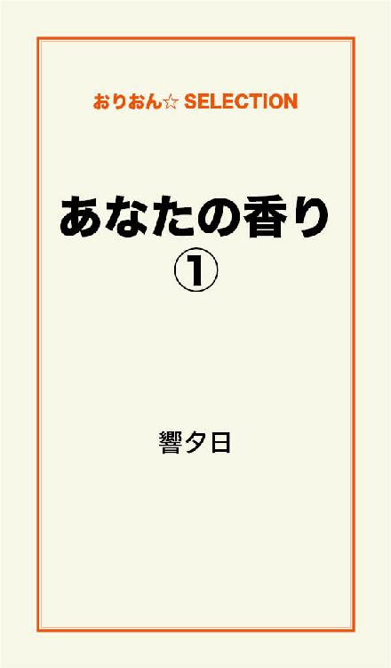
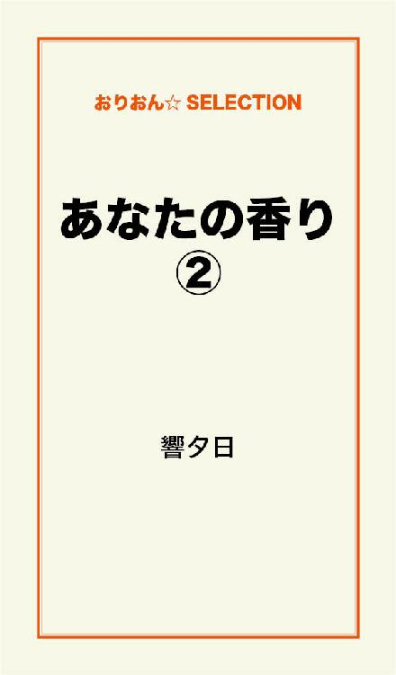
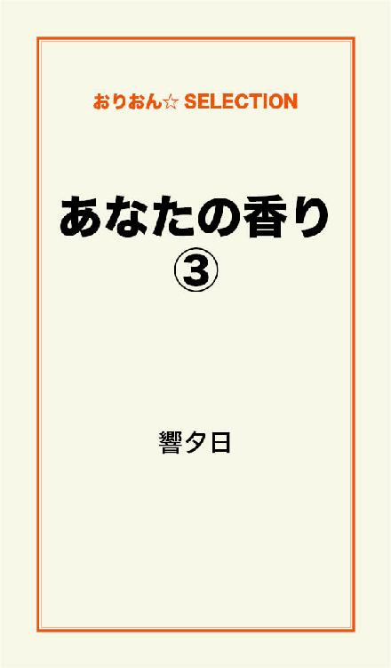

| あなたの香り 完全版 | |
| 響夕日 | |
この本は横書きでレイアウトされています。
また、ご覧になる機種により、表示の差が認められることがあります。

師走。
北村瑞穂（みずほ）は慌てていた。
大切な書類を胸に、スクランブル交差点で足止めをくっている。
信号が青に変わった。
瑞穂は急いでダッシュする。
ハイヒールのためうまく走れない。
それでも懸命に走った。
大事な会議があるのだ。
今朝は寝坊してしまった。
化粧もそこそこにマンションを出た。
間に合わなくなっては大変だ。
社運をかけた一大プロジェクトの会議なのだ。
その資料を瑞穂が預かっていた。
推敲をするために、家へ持ち帰っていたのだ。
途中歩道橋がある。
勢いをつけて登る瑞穂。
駅から会社まで20分かかる。
ようやく半分まで来た。
時計を見るとあと５分。
走ってぎりぎり間に合うかどうか。
歩道橋を降りた。
その刹那足を踏み外した。
瑞穂はまっ逆さまに落ちていく。
しかし落下が止まった。
通りがかった男が瑞穂の体を押さえたのだ。
男の手は瑞穂のふくよかな胸を押さえている。
「これは失礼」男は瑞穂の胸から手を退ける。
瑞穂はそれどころではない。
歩道橋から落ちそうになったとき、書類をばらまいてしまったのだ。
慌てて拾う瑞穂。
それを手伝う男。
拾い終わったのが２分前。
もう間に合わない。
歩道橋の上から呆然と街の雑踏を見つめる瑞穂。
「どうかしたのですか」
呆然自失となった瑞穂の耳にどこか遠くから聞こえるような男の声。
瑞穂は肩を落としながら男に説明をした。
「それならまだ間に合うかもしれない」
男は瑞穂の手を引き歩道橋を降りた。
「これに乗って」
男は瑞穂を車に乗せようとした。
助手席に光るものがあった。
イヤリングだ。
昨夜、女を乗せたのだ。
男は瑞穂を乗せると車を走らせた。
１分もかからず会社へ着いたので間に合った。
瑞穂はお礼もそこそこに急いで会社へ入っていく。
会議室へ入ると重役は全員揃っていた。
「遅いぞ、北村」
部長は苛々している。
「すみません」
瑞穂は部長に書類を渡すと、会議室を出た。
一息つこうと、自分のデスクでコーヒーを飲んだ。
「ねえ、今車で送ってもらったの彼氏？」
島田よしみが瑞穂の隣へ腰掛ける。
よしみは何でも知りたがる。
会社の情報通として有名だ。
そんなよしみに、有らぬ噂をたてられたら大変だ。
「そんなんじゃないよ」
「怪しいわね」
「本当にそんなんじゃないってば」
そういえば歩道橋から落ちそうになった自分を助けてくれた人。
書類を一緒に拾ってくれた人。
車で送ってくれた人。
その人のお陰でなんとか間に合った。
それなのに自分は、慌てていてお礼も言わなかった。
瑞穂は後悔した。
午後２時に社用で銀行へ行った。
用事を済ませ、自分の貯金を下ろそうと、キャッシュコーナーに並ぶ。
自分の番がきてふと見るとキャッシュカードが１枚置き忘れている。
貯金を引き出し、銀行の係員に置き忘れていたキャッシュカードを知らせた。
取りあえず瑞穂は、住所と電話番号と名前を書かされ銀行をあとにした。
忙しさにかまけていたある日携帯が鳴った。
知らない番号だ。
知らない番号の電話は、無視することに決めていたので出なかった。
また電話が鳴った。
同じ番号だ。
無視した。
マンションへ帰り、くつろいでいるとまた電話が鳴った。
昼間の番号と同じ相手だ。
瑞穂は気味が悪かったが、あまりにもしつこいので電話に出た。
「もしもし......どちら様でしょう」
「良かった。やっと電話に出てくれた」
「どちらにお掛けでしょう」
「私、先日銀行でキャッシュカードを無くして、あなたに拾っていただいたものです」
「ああ、あのときの」
「その節は有り難うございました。助かりました」
「いいえ、大したことしてないですから」
「いや、助かりました。お礼に食事はいかがでしょう」
「本当に大したことしてないですよ」
「私の気持ちが収まらないのです。会ってお礼を言いたいですから」
「......そうですか。分かりました。何か気を使わせてしまってすみません」
「それでは今度の土曜日、有楽町の駅前に11時に待ち合わせしませんか？」
「それで構いません」
瑞穂はあまり気が進まなかったが承諾した。
そして土曜日、瑞穂は20分前に待ち合わせの場所に到着した。
ところがその男は何10分待っても現れない。
１時間が過ぎて帰ろうとしたと頃、後ろで声が聞こえた。
「あの......北村さんですか？」
「そうですけど」
瑞穂は怒っていた。
１時間以上待たされたのだ。
しかし相手の男を見て驚いた。
そこに立っていたのは先日、歩道橋で助けられた人物だったからだ。
「あ！ この間は急いでいたのでお礼も言わず失礼しました」
「あ！ あなたはこの間の！ 偶然ですね。こちらこそキャッシュカードを拾っていただいて有り難うございました。おまけに今日は１時間も遅れてしまって......突然急用があり、電話ができなかったものですから」
「いいんです。あのときは本当に助かりました」
「それでは行きましょうか」
「はい」
「この近くに本格的なインド料理の店があるんです」
「それは楽しみです」
２人は店へ入った。
男が適当に何品か注文した。
「北村さんは何歳なんですか？」
「20歳です」
「じゃあ、お酒飲めますね」
「少しなら」
「僕は五十嵐俊介と言います。僕も20歳です。２月ですぐに21だけどね」
俊介はインドワインも注文した。
「私も２月生まれです。五十嵐さんはもっと大人に見えます」
「それってふけてると言う意味かな」
俊介は笑う。
「違います！ 渋い感じがします」
瑞穂はあわてて否定する。
やがてオードブルとワインが運ばれてきた。
「このワイン美味しいですね」
「本当に旨いね」
やがてテーブルにミックスバジ・マラサドーサ・ウトパム・ポリヤルが並んだ。
「どれも美味しいですね五十嵐さん。でも全部食べきれるかな」
「大丈夫。俺が食べるから」
俊介は屈託なく笑う。
瑞穂は俊介は子供のように笑う人だなと思った。
俊介は目鼻立ちが通っていて、、顔が小さく、どちらかと言うとやせ形で整った顔をしている。
瑞穂は化粧もしていなく、天パーで、服装も地味で、あか抜けない。
瑞穂はこんな高級レストランで食事をしているなんて場違いだと思った。
「北村さんは何の仕事をしているの？」
「普通のOLです。OLって言ってもお茶出したり、コピーとったり、銀行へ行ったり、こまずかいばかりです。五十嵐さんは？」
「僕は大学３年。取りあえず単位は３年分とったから、遊んで暮らしてる。実家が静岡だから、明大前でアパート借りてる。親のすねかじって」
俊介はまた笑う。
「私は赤羽でマンション暮らし」
「１人で？」
「うん。両親と弟がいたんだけど５年前に交通事故で死んじゃったの。私だけが生き残った」
「ごめん悪いこと聞いちゃったかな」
「ううん。大丈夫」
「このあと日比谷で映画でも見ない？」
「いいですよ」
２人は日比谷の映画街へ歩いた。
適当な映画を選びそれを見ることにした。
映画を見たあとはウィンドウショッピング。
俊介はキャッシュカードのお礼にと、ブランド品のバックを瑞穂にプレゼントした。
瑞穂は恐縮がっていたが、俊介が無理矢理瑞穂にバックを渡した。
７時になったのでどこかで食事をしようと俊介が言う。
２人はフレンチの店へ入っていく。
２人はテーブルを挟んで座ると、俊介がシェフお勧めのコースとワインを注文した。
「こんな場所私には似合わない」
瑞穂は恐縮している。
「何言ってるんだよ。君は素敵な女性だよ。もっと堂々としていいんだよ」
「私が素敵な女性？ からかわないでよ。髪は天パーだし、化粧もしてないし、服のセンスも悪いし、会社で何て言われてるか知ってる？ 『うっぷさん』と陰で呼ばれているわ」
「何で『うっぷさん』なの？」
「顔を見るとみんなうっぷって言うからよ！ 変なお世辞言わないで！ 私帰る」
瑞穂は店を出てしまった。
数日後、瑞穂に俊介から電話があった。
「この間は無神経なこと言ってごめん」
「......こっちこそ、料理が来る前に帰ってごめんなさい」
「......今度の土曜日会えないかな」
「......特に予定はないけど」
「じゃあまた同じ時間に、同じ場所で待ってる」
「うん。分かった」
瑞穂はこの前はあんな別れかたをしたので、もう電話はこないと思っていたので、少し嬉しかった。
しかし、こんな冴えない自分じゃ俊介と釣り合わないと考えていた。
土曜日になり、瑞穂は約束の10分前に待ち合わせ場所に着いた。
俊介はもう来ている。
「ごめんなさい。待った？」
「俺も今来たところ。それじゃあ行こうか」
２人はステーキハウスに入り、俊介は１枚１万円のステーキを自分の分と瑞穂の分をオーダーした。
「学生にしては高級レストランへ行ったり、１枚１万円のお肉食べたり、五十嵐さんてお金持ちだね」
「親父が静岡で５件パチンコ屋をやってるんだ。だから使いきれないほど仕送りしてくれるんだ」
「そうなんだ。羨ましい」
「今日は飯食ったらビューティーへ行くよ」
「え？ 五十嵐さんあまり髪伸びてないじゃない」
「俺じゃなくて北村さんだよ」
「えっ、私？」
「今日は金のことは心配しなくていいよ。全部俺が出す」
「そんなの悪いよ」
「いいからいいから任せてくれよ」
「でも......」
「俺んち嫌になるほど金持ちだから気にしなくていいよ。この間も腕時計 壊れたから金を送ってくれって言ったら60万送ってきた。だから今日は任せてよ」
「......それじゃあお願いします」
「うん。この近くに芸能人も行くビューティーがあるからそこへ行こう」
２人は食事が終わるとビューティーへ向かう。
瑞穂が席につくとスタッフがやって来て、
「今日はどのようにしましょう」
と言うので、横にいた俊介が、
「この子に似合った髪型。とびきり可愛くしてね」
と言った。
スタッフは少し考えていたが、
「閃いた！」
と言って紙を切り始めた。
あまり短く切らないで毛先を揃える程度だ。
そしてパーマをあて、くせ毛を直し、髪の色をベージュに染めた。
『バカンスウェーブ』という髪型だった。
卵形の顔をした瑞穂によく似合っていた。
次はメイクだ。
スタッフが印象深いけどあまり派手すぎないメイクにしましょうと言ってメイクを始めた。
メイク終了後、瑞穂の顔は見違えるほど美しくなった。
「これが私なの！」
鏡を見た瑞穂は驚いた。
つぎはネイル。
爪は派手すぎない、艶のあるピンク色に染まった。
俊介は今日使用した化粧用品を全て買い、瑞穂に渡した。
スタッフが瑞穂に化粧の仕方を丁寧に教えた。
化粧品の中には１本１万円以上するものもある。
「こんな高いものこんなに買ってもらって悪いわ」
瑞穂は恐縮している。
「気にしなくていいから」
俊介は笑う。
次に向かったのは眼鏡店だ。
眼鏡を外し、コンタクトにした。
そして服を買いに行き、店員に俊介が、
「この子に１番似合う可愛い服を選んでくれ」
と言った。
「これなんかどう？」
店員はそう言って、白のハンドクレッシェースワンピースを持ってきた。
瑞穂が試着してみると丈が少し短いが可愛いので俊介が気に入って買うことにした。
「上に羽織るものない？」
俊介は店員に聞くと、緑のコットンヘリボンコートを持ってきて瑞穂に着させた。
とても良く似合っていて可愛いのでそれも買った。
そこには数は少ないがブーツも置いてあり、俊介が可愛いブーツを見つけたのでそれも買った。
今まで着ていたものは全て袋に入れてもらい買ったものを着て歩いた。
途中、壁が鏡になっているビルに差し掛かった。
「これが私！」
瑞穂は自分の全身を見て驚いた。
そこには、ファッション雑誌に載っている女の子のような自分の姿が写っている。
「そうだよ。これが本当のきみだよ」
俊介はそっと瑞穂の肩に手を添える。
髪形と服と化粧で女はかなり変わる。
身なりが良くなると、今まで丸まっていた姿勢も良くなる。
「この間俺が言ってた通りきみは美しいだろ。俺はただ原石を磨いたにすぎない。君は本当に美しくて可愛くて素敵な女の子なんだよ」
「五十嵐さん有り難う。私、自分に自信がもててきた」
「その調子だ。君は美しい。ところで大晦日空いてないか？」
「大丈夫だよ。昨日までの私はださくて暗かったから何も予定入ってないの」
「じゃあ八景島シーパラダイスにドライブに行こう。カウントダウンのショーがオールナイトでやるらしいんだ」
「うん。行く」
２人はその足でこの間行ったフレンチの店に入っていく。
俊介はコースとワインの他にケーキも頼んだ。
「ちょっと遅くなったけどメリークリスマス！」
「メリークリスマス！」
２人はグラスを鳴らす。
「今日はプレゼントがあるんだ」
「えっ何」
「これ」
そう言って俊介はコートのポケットから小さい箱を取り出した。
それはブルガリの指輪だった。
「お揃いだよ」
俊介の指にもブルガリの指輪がはめられてある。
「こんないいものもらっちゃっていいの？」
「うん。遠慮しないで受け取って。今日はクリスマスのお祝いだから」
瑞穂が指輪をはめるとぴったりだった。
「この間ウィンドウショッピングしたとき北村さん指輪を試しにはめてたろ。そのときサイズを確かめていたんだ」
「有り難う五十嵐さん。私......何のプレゼントも持ってこなかった。ごめんなさい」
「いいんだよ。俺たち会ってまだ日が浅いんだから気にしなくていいよ。その指輪も深い意味はないから気軽に受け取って」
「本当に有り難う。お礼はいつか必ずするね」
「お礼なんていいよ」
「いえ、必ずお礼はします」
「じゃあお礼はキスがいいかな」
「え！」
「冗談冗談。気にしないで」
俊介はケーキを美味しそうにたべている。
瑞穂は、自分の体目的に色々してくれるのではないかと脳裏を掠めた。
そのあと２人は別れて別々の電車に乗った。
瑞穂がマンションに戻ってしばらくしてから俊介から電話があった。
「その服、気に入った？」
「うん。とても。今日は有り難う」
「どういたしまして。化粧は慣れた？」
「今研究してるとこ。あまり派手なのも嫌だからナチュラルメイクを研究してるの」
「そうだね。北村さんはべたべたに塗りたくるのはよくないと思う」
「今日は指輪までもらっちゃってどうも有り難う」
「大したことはないよ。俺にとって大切なのはペアリングってこと。それが嬉しいんだ」
この人は何か調子がいいなと瑞穂は思った。
金持ちだしルックスはいいし、今まで何人の女と寝たのだろう。
自分は俊介のような男には絶対に落ちないと思った。
今までより遥かに綺麗にしてもらったし、プレゼントも貰った。
甘い言葉も囁かれた。
でも俊介はプレイボーイなのだ。
女の口説き方を知っている。
女は金持ちに弱い。
でも自分は騙されないと瑞穂は思った。
月曜日、休日明けの気だるさが残る人々を乗せて電車が走る。
瑞穂は俊介に買ってもらった服を着て、電車に揺られている。
今まで地味な服装しかしたことのない瑞穂は、短いスカートが慣れないでいる。
尻に何かが触れた。
満員電車なので誰かの手が当たったんだと思った。
ところがその手は、スカートの中に忍び込んできた。
おとなしい瑞穂は何も言えないでいる。
すると手は大胆にもパンツの中に指を入れてきて大事なところに触れ、第一関節が瑞穂に入った。
「すみません、痴漢なんですけど」
瑞穂は前に座っている男性に助けを求める。
男性は黙って立ち上がり瑞穂を座らせた。
「どうも有り難うございます」
瑞穂はその男性を見あげる。
ベージュのスーツ姿で眼鏡をかけている。
インテリ風な顔立ちをしている。
知性が身体全体から溢れだしている感じがする。
優しい目をしている。
「あの......名前と住所を教えてください。あとでお礼がしたいですから」
瑞穂は小さな声で言った。
「お礼なんていいですよ」
男性も小さな声で返す。
「ぜひ教えてください」
「......分かりました」
男性はメモに自分の名前と住所を書いて瑞穂に渡した。
駅に到着すると、瑞穂はその男性に深々とお辞儀をして電車を降りた。
駅から会社へと歩いていると、島田よしみが向こうから歩いてくる。
交差点で並んだ。
よしみは全く瑞穂に気がついていない。
「よしみ、お早う」
瑞穂のほうから声をかけた。
よしみは瑞穂を見た。
誰だか分からない顔をしている。
「私よ、瑞穂よ」
「えっ！ 瑞穂！ あなた変わったわね。凄く美人になっちゃって......どうしたの？」
「ちょっとイメチェン」
「どうやったらそんなに美人になるのか教えなさいよ」
「あとでね」
「分かった。男でもできたんでしょ」
「違うよ」
「でもたった２日でその変貌ぶりには驚いたわ」
会社へ着くと誰も瑞穂とは分からず、美人の女性に見とれている。
職場に行っても、誰も瑞穂とは気がつかない。
よしみが瑞穂だよと言うと、職場全体が騒然とした。
そして、今夜飲みに行こうよという誘いが殺到した。
今までは誰も相手にしなかったくせに、男なんて所詮こんなもんだと思った。
午後、社長室に呼ばれた。
マンションを買ってやるから妾にならないか、と言われた。
丁重に断った。
そして大晦日がやって来た。
駐車場が満車にならないうちに出掛けようと、午前６時に待ち合わせをして、朝食を食べてから八景島シーパラダイスへ向かった。
到着した時には駐車場は大混雑していた。
パーキングに車を停めたのはそこに到着してから１時間後だった。
八景島シーパラダイスは規模の大きな遊園地で、アクアミュージアム（水族館）の他にアトラクションやホテルなどがある。
その規模の広さは、とても１日では回れない。
２人はまずアクアミュージアムへ行くことにした。
エスカレーターで３階まで登っていく。
周りは天井まで透明なクリスタルで覆われ、熱帯魚たちが泳いでいる。
「綺麗」
瑞穂はその光景を見とれている。
「本当に綺麗だな」
俊介も感動している。
エスカレーターから降りると、白熊やペンギンたちが飼育されている。
「可愛い」瑞穂は目を輝かせる。
「北村さんのほうが可愛いよ」
俊介は瑞穂の耳元でささやいた。
また甘い言葉で口説いてる、と瑞穂は思った。
八景島シーパラダイスは色々な魚の他にイルカやクジラやアザラシがいる。
２人はイルカやアザラシのショーを見て笑い合う。
「本当に可愛い」
「どうやって芸を覚えさせるんだろう」
「イルカやアザラシは頭がいいのよ」
「餌でつられてるだけじゃないのか？」
「だったら他の動物もできるはずよ」
「そうか、そうだな」
「でも本当に可愛いね」
２人はショーを堪能した。
２人は一通り水族館を見学したあと遅い昼食をとり、アトラクションに乗ることにした。
全て長い行列ができていたため、ジェットコースターとウォーターボーダーを乗り終える頃には夜になっていた。
次にシーパラダイスタワーに乗ることにした。
ここも長蛇の列だ。
タワーは、高くまで上昇し、八景島パラダイスを一望できる。
夜になると八景島全体がライトアップされるので、ゴージャスな夜景を見ることができた。
「凄く綺麗だね」
「眺めがいいな」
俊介は瑞穂の手を握った。
来た！
夜景で酔わせておいて女を口説く。
瑞穂は俊介と全く付き合う気がないので、手をそっとどかす。
次は大観覧車。
ここも行列ができている。
「今日はオールナイトだからゆっくりできるよ」
「......うん」
１時間以上ならんでやっと順番がやって来た。
２人は向かい合わせに座った。
観覧車はゆっくりと進んでいく。
ここからの眺めも絶景だ。
登るにつれ上空は風が吹いている。
ゴンドラは揺れ始めた。
真上まで来ると風が激しくゴンドラを揺らす。
「怖い！」
瑞穂は震えている。
「心配いらないよ。この程度で壊れるはずないよ」
俊介は瑞穂のベンチに一緒に座り、肩を抱いた。
俊介が瑞穂の顔を持ち上げ、キスをしようとした。
瑞穂はそっと俊介から離れた。
観覧車から降りた２人は夕食をとって、あとはカウントダウンを待つだけだ。
カウントダウンまであと10分。
２人は遊び疲れたので、適当なベンチへ座って新しい年の来るのを待った。
熱帯魚の美しかったこと、白熊やペンギンの可愛かったこと、アシカやイルカのショーが面白かったこと。
アトラクションが面白かったこと。
夜景が綺麗なこと。
話をしているうちに１分前になった。
場内がざわつき始める。
そしてカウントダウン３秒前。
３、２、１！
『ハッピーニューイヤー！』
観覧車の後ろから花火が打ち上げられる。
「うわ～奇麗」瑞穂は感動している。
両親と弟が他界して５年。
いつも正月は１人で過ごしていた。
侘しい正月だった。
１人だからおせち料理も買わない。
雑煮も作らない。
寂しい正月だ。
今日は凄くうきうきしていた。
これで隣にいるのが、プレイボーイの俊介でなければもっと楽しいのにと思った。
「あけましておめでとう！ 今年もよろしく！」
俊介が瑞穂の両手を叩いた。
「こちらこそよろしく！」
瑞穂は心とは裏腹に俊介の手を叩き返した。
次々と上がる花火
場内は歓喜の渦だ。
「今年は沢山北村さんといい思い出作りたいな」
「......うん」
「もういいことあったしね」
「何？」
「北村さんと新年を迎えられた」
「......」
瑞穂は五十嵐を調子のいい男だと思っている。
その言葉を素直に喜べない。
車の中にイヤリングが落ちていた。
瑞穂は五十嵐を遊び人だと思っている。
１時を過ぎても人は減らない。
新年を迎えて大騒ぎだ。
瑞穂も浮かれている。
五十嵐もはめをはずしていて、瑞穂の手を握った。
瑞穂はさりげなく手をどかした。
３時になると急に瑞穂は睡魔に襲われた。
そんな瑞穂を見て五十嵐は帰ろうと言った。
２人は車に乗り込み家路を走った。
高速道路を降りると途中、ホテル街がある。
車のスピードはゆっくりになった。
「北村さんは経験があるの？」
「何のこと？」
「......セックス」
「ない」
誘われていると瑞穂は思った。
車はホテル街をゆっくりと進む。
「キスは？」
「それもない」
「そうなんだ」
「私地味でもてなかったからそういう経験は全然ない」
「そうか。今は綺麗だからもてるでしょ」
「五十嵐さんに変身させてもらったお陰で毎日のように会社で男の人に誘われている」
「誘われたら行くの？」
「理由をつけて断っている」
「そうか」
俊介は胸を撫で下ろした。
「五十嵐さんは経験はあるの？」
「......あるよ」
「何人？」
「......27人」
「その歳で27人！ 多くない！？」
「そのときは真面目に付き合ってたんだ」
「何で別れたの？」
「何でと言われても困る。色々あるんだ」
「１番最後に別れたのはいつ？」
「１ヶ月前」
「今は付き合っている人いるの？」
「いない」
「そうなんだ」
瑞穂は怪しいと思った。
「ねえ」
車がホテル街を通過しようとした頃俊介が言った。
「何？」
「俺は疲れた。今日は泊まらないか？」
来た！
その手にはのるものか。
「私も今日は疲れているの。自分の部屋で、１人で眠りたい」
「そうか。悪かったな。誘ったりして」
「......気にしないで」
「北村さんがあまりにも素敵だから......」
「......五十嵐さんは部活は何かやっているの？」
瑞穂は話題を変えた。
「野球をやっている」
「そうなんだ」
「これでも県大会で優勝したこともあるんだぜ」
「凄いね」
車は瑞穂のマンションの近くまで来た。
「ここでいいよ」
「マンションまで送るよ」
「本当にここでいい」
「そうか」
俊介は途中で瑞穂を下ろすと帰って行った。
絶対に自分のマンションを教えるものか、と瑞穂は思った。
部屋へ帰ると午前６時になっていた。
元日で道路が渋滞していて遅くなったのだ。
携帯がなった。
俊介からだった。
「さっきは誘ったりしてごめん」
「気にしてないよ」
「これからもいつも通り付き合ってくれるか？」
「うん。いいよ」
「良かった。それじゃあお休み」
「お休み」
俊介は私のことをどう思っているのだろう。
本気なのか、遊びなのか。
俊介は私に色々してくれる。
俊介のお陰で私は変わった。
見違えるようになった。
色々なところにも連れていってもらった。
クリスマスも一緒に過ごした。
俊介は今は本当にフリーなのかも知れない。
そして、純粋に私のことを好きなのかも知れない。
でも、車の助手席にあったイヤリングの片方が気になる。
しかも、態度も女慣れしている。
瑞穂は俊介の気持ちを計り知れないでいた。
数日後瑞穂の携帯に俊介から電話があり、日帰りで尾瀬のスキー場に行かないかと誘われた。
瑞穂は俊介との遠出は少し抵抗があったが、承諾し、次の土曜日に行くこととなった。
道路が混むのを見込んで早めに行くことにして、赤羽で午前５時に待ち合わせることにした。
瑞穂は仕事が終わるとデパートへ向かい、男性物の財布を買い、マンションへ戻ると手紙を書いた。
『先日痴漢から助けていただいたものです。些細な品物ですが受け取ってください』
その手紙に、名前と住所と電話番号を書き、コンビニへ行き、その男性に宅配便でそれを送った。
マンションへ戻り、瑞穂は小学時代からの親友の長瀬正美に電話をした。
正美は病弱のため、過激な運動はできない。
「もしもし正美、元気？」
「うん。最近は調子がいいよ」
電話越しに聞こえる正美の声は穏やかだった。
「相談があるんだけど......」
「相談て何？」
「私、五十嵐俊介という男の人と最近頻繁に会っているの」
「付き合っているの？」
「そこまでいってない」
「そうなんだ」
「でもクリスマスもお正月も一緒に過ごした」
「それって付き合っているのと一緒じゃないの？」
「でも、その人の車の助手席にイヤリングの片方が落ちてた」
「そうなんだ。瑞穂の気持ちはどうなの？」
「複雑なの。好きになりかけているような気もするけどイヤリングが気になる。正月にホテルにも誘われたし、その人21歳で27人と経験しているプレイボーイなの。私、遊ばれたくないし......」
「そうなんだ。21歳で27人は多いね。気をつけた方がいいね」
「そう思うでしょ」
「キスはしちゃったの？」
「してない。手も繋いでない」
「それでいきなりホテルなんておかしいね」
「そうでしょ」
「用心した方がいいかも」
「正美もそう思うでしょ」
「うん」
「ごめんね。長話して。そろそろ切るね」
「うん。また何かあったら電話して。今度は外で会いたいね」
「正美外に出られるの？」
「うん。最近調子がいいの。お酒だって飲めるよ」
「そうなんだ。じゃあ今度新年会をやろうよ」
「うん」
「それじゃまた」
「うん」
瑞穂は電話を切った。
土曜日、瑞穂は午前２時に起きてシャワーを浴び、髪を乾かし、入念に化粧をして朝食を食べ出掛けた。
赤羽の駅に約束の20分前に着いた。
待っていると、すぐに俊介が車で来た。
「北村さんはスキーは得意なの？」
車の中で俊介が瑞穂に聞く。
「あまり得意じゃないの」
「じゃあ俺が教えてあげるよ」
「お願いします。五十嵐さんはスキーは上手なの？」
「中３まで苗場にいたから、スキーは得意だよ」
「そうなんだ」
「苗場で生まれて、中３で静岡に引っ越して、今は明大前で１人暮らしなんだ」
朝早く出たせいか道路はまだ混雑していない。
スムーズに車は走り、３時間半でスキー場に到着した。
スキー場はもう賑わっている。
俊介と瑞穂は初心者コースで滑った。
瑞穂は何度も転倒した。
俊介が瑞穂に滑り方を教える。
腰を触ったり、体を触ったりしている。
やっぱりこの男の目的は私の体なんだと瑞穂は思った。
「ちょっと上級者コースへ行ってくる」
俊介は１人でリフトに座った。
リフトから降りた俊介は、山の斜面を優雅に滑る。
それを見た瑞穂は格好いいと思った。
昼食を食べ終え、俊介はまた瑞穂にスキーを教える。
独学と人に教わるのではかなり違う。
瑞穂は俊介に教えられたことで上達していた。
「少し高いところから滑ろう」
俊介が言う。
「うん」
上達した瑞穂は自信をもっていた。
２人はリフトに乗った。
俊介は優雅に滑っていく。
瑞穂もあとを追った。
途中、何度か転んだが上達している。
俊介のもとまで滑り、止まり方が分からないので俊介に抱きついた。
俊介は笑った。
瑞穂も笑う。
「スキーって滑れるようになれば面白いだろ」
「うん。面白い」
２人は時間を忘れて滑った。
そのうち辺りは暗くなりスキー場はライトアップされた。
「奇麗」
瑞穂は初めて見る光景に感動した。
ライトアップされたゲレンデを２人は滑る。
しかし、しばらくすると急に吹雪いてきた。
雪が猛烈に降り積もる。
２人は急いで着替えて帰ることにした。
車に乗り込みエンジンをかけ、走り出そうとしたが車はスリップして走り出せない。
何度試みても車は動かない。
タイヤは完全に雪に埋もれている。
「困ったな。これじゃ無理だ」
「どうしよう」
最終電車もない。
２人は途方にくれる。
「今日は旅館に泊まるしかないよ」
「......」
「早くしないと旅館が閉まっちゃう。急ごう」
俊介は車から降りた。
瑞穂も仕方なく車から降りる。
２人は歩いて旅館街に到着して、１軒１軒回ったが、どの旅館も既に閉まっていた。
瑞穂は寒さで体が冷えきっている。
「こうなったら仕方がない。ラブホテルに泊まろう」
「えっ！」
「あそこは24時間やっている。このままだと凍え死んじゃうよ」
俊介は瑞穂の手を掴んでラブホテルのネオンに向かって歩き出した。
「う、うん」
瑞穂もこの寒さに耐えきれず俊介についていく。
ラブホテルに到着し、俊介がロビーのタッチパネルに触れると部屋の鍵が出てきた。
瑞穂はそうとう慣れてるなと思った。
部屋へ入ると中は暖かく、瑞穂は生きた心地がした。
ほっとしてソファーに座ったが俊介に何をされるか分からない。
瑞穂はまだヴァージンなのだ。
俊介がしつこく求めてきたら噛みついてやろうと考えていた。
俊介は慣れたものでバスルームへ行き湯を出している。
「先に風呂に入っちゃいなよ」
俊介は瑞穂に言った。
「......うん」
瑞穂は脱衣場に行き、服を脱ぎ、下着を脱ぎ、バスタブに入った。
冷えきった体が暖まる。
気持がいい。
瑞穂は充分暖まり、バスタブから出ると、体を丁寧に洗い、長い髪を洗い、またバスタブに入った。
瑞穂は怖かった。
俊介に何をされるか分からない。
いざとなったら警察を呼ぼう。
瑞穂はそこまで考えていた。
バスルームから出た瑞穂は体を吹き、着替えを探した。
それを着てみると、胸元が無防備でかなり短い浴衣だった。
瑞穂はそれを脱いで私服に着替えた。
部屋へ戻ると俊介はビールを飲んでいる。
「浴衣に着替えないの？」
私服のままの瑞穂に俊介が言う。
「うん。このままで平気」
「俺も風呂に入ろうかな」
俊介はバスルームへ向かう。
瑞穂も冷蔵庫からビールを取り出し、ソファーに座ってそれを飲んだ。
辺りを見回すと鏡に囲まれた部屋で、２人掛けのソファーがあり中央にはクイーンベッドが置かれており、赤いカーペットで敷き詰められている。
広い部屋だ。
俊介がバスルームから出てきた。
浴衣を羽織っている。
浴衣から鍛えられた胸元が覗く。
着痩せして見えるが俊介は筋肉体質だ。
「腹減ったろ。何か注文しよう」
俊介はメニューを見る。
「ピザでいいか？」
「うん」
俊介はフロントに電話をしてピザ２枚を注文した。
「暖まったかい？」
「うん」
「外は強烈に寒かったな。吹雪だもんな」
「寒かった」
「ごめんな俺が無計画で。もう少し早く出ていればこんなことにはならなかった」
「......」
チャイムがなった。
ピザが届いた。
２人はビールを飲みながらピザを食べる。
「北村さんはあれからまだ、職場の男たちから誘いがくるの？」
「うん。毎日のように誘われてる」
「心配だなあ」
「今までは見向きもされなかったのよ。それが変身したら急に誘われ出した。そんな男たちの誘いなんかにはのらないよ」
「そうか良かった。ところで北村さんは野球には興味がある？」
「女にしては結構興味があるほうだよ。父親がガリアンズファンでいつも見てたから」
「春になると大学の野球大会が始まるんだ。見に来てくれないかな」
「うん。行くいく。五十嵐さんはポジションはどこ？」
「ピッチャーだよ。これでも少しは名が知られているんだ」
「そうなの？」
「最速１５０キロ出したことがある」
「凄いね！ プロでも１５０キロ出す人はそうざらにいないよ」
「プロからスカウトも来ている」
「凄い凄い！」
「俺は将来プロになる」
「夢がある人っていいな。羨ましい」
「北村さんは夢はないの？」
「これといってない」
「じゃあさ、俺プロになったら20勝が目標なんだ。それを北村さんの夢にしてよ」
「うん」
瑞穂はホテルに着いてから、初めて笑顔を見せた。
「そろそろ寝るか」
ついに来た！
絶対に断る！
俊介はソファーに横になった。
「ベッドで寝ないの？」
「俺はここでいい。北村さんはベッドで寝ていいよ」
「......」
瑞穂はベッドに入った。
考えてみれば、誰にも相手にされなかった自分を魅力があると言ってくれて変身させたのは俊介だ。
それから食事に行ったり、クリスマスをお祝いしたり、八景島シーパラダイスでカウントダウンをしたりスキーをしたりしたが体を求めようとはしない。
俊介は紳士なのだ。
車の助手席のイヤリングが気になるが、いつも笑顔を絶やさない好青年だ。
自分は俊介を誤解していたと思った。
瑞穂はベッドから出て俊介の前に立った。
「そんなところで寝ていると風邪を引くよ。ベッドで寝よ」
「俺はここでいいよ」
「いいからいいから」
瑞穂は無理矢理俊介の手を持ってソファーから起こし、ベッドに連れていった。
２人はベッドに入った。
俊介が瑞穂の手を握る。
２人は手を繋いだまま就寝した。
吹雪の中を旅館を探し求めてさ迷ったので、２人の体力はかなり消耗していた。
２人は手を繋いだまま朝まで熟睡した。
翌朝２人はホテルで軽食をとり、10時にチェックアウトした。
２人は手を繋いで車まで戻った。
まだ路面が凍結していたため、もう一滑りして昼に帰ることにした。
瑞穂は俊介の丁寧な教え方で、スキーが上手くなっていた。
２人は笑いながら滑っている。
俊介が上級者コースで滑っていると、瑞穂が男３人組に声をかけられた。
「お姉さん可愛いね。俺らと付き合わない？」
「私、連れと来てるから」
「そんなこと言わずにちょっとだけ付き合ってよ」
３人組の１人が瑞穂の手を引く。
「俺の女に手を出すな！」
後ろで声が聞こえた。
俊介が立っている。
「悪いね。ちょっと借りるだけだから」
３人組の男１人が言った。
「やめろって言っているのが分からないのか！」
「うるせーな！ お前は引っ込んでろ」
尚も男は瑞穂の手を引く。
俊介はそばにあった石を持ち、その男目掛けて力一杯投げつけた。
１５０キロの石はその男の額に当たった。
血が吹き出した。
「ぎゃー！」
男はうずくまってしまった。
「何すんだてめえ」
もう１人の男が俊介に近づいてきた。
俊介はもう１度石を持ち、その男目掛けて投げつけた。
石は男の額に当たった。
男は悲鳴を上げてうずくまる。
もう１人の男は逃げていった。
瑞穂は俊介に駆け寄った。
「有り難う五十嵐さん」
「どうってことないよ。そろそろ帰ろうか」
「うん」
２人は手を繋いで車まで行き、俊介は車を走らせた。
「ところで今度の土曜日なんだけどさ」
「何？」
「ディズニーランドに行かないか？」
「うん。行く」
「北村さんはディズニーランド行ったことある？」
「１度だけあるよ。でも女同士だからつまらなかった」
「五十嵐さんは何回行ったの？」
「27回」
「彼女の数ね」
「昔の話だよ。もう終わったことだ」
「本当に今は彼女いないの？」
「いないよ」
「どうだか」
瑞穂は余程助手席にあったイヤリングのことを聞いてみたかったがやめた。
「本当に今はいない！ 神に誓ってもいい！」
「ふ～ん」
「何か疑ってるね。彼女がいたらこんなに北村さんを誘ってないよ」
「うん。それもそうね......」
翌日、瑞穂は小学校からの親友の正美とレストランで夕飯を食べていた。
「どうしちゃったの！ 瑞穂。随分変わったね。綺麗になった」
「この間電話で正美に話した五十嵐さんていう人が私を変えてくれたの」
「そうなんだ。で、五十嵐さんはいい人なの？」
「うん。一昨日スキーに行って帰れなくなっちゃって、仕方なくラブホに泊まったんだけど、何もされなかった」
「キスも？」
「うん。手を繋いで一緒に寝ただけ」
「五十嵐さんて紳士なんだね」
「でもどうしてもイヤリングのことがひっかかるの」
「そうか、五十嵐さんに直接聞けないしね」
「そうなの。イヤリングのことがなければ私、五十嵐さんを好きになってた」
「ねえ、今度の土曜日私と瑞穂と五十嵐さんの３人で新年会やらない？」
正美は提案した。
「今度の土曜は五十嵐さんとディズニーランドに行くことになっているの。来週の土曜は？」
「いいよ。じゃあ来週の土曜３人で新年会やろう」
「うん」
正美と別れた瑞穂は自分のマンションへ戻った。
電話が鳴った。
知らない相手からだ。
「もしもし北村ですけど」
「僕は沢村正といいます。こんないいものを貰って有り難うございます」
「どちら様でしょうか」
「先日あなたが痴漢に合って......」
「ああ！」
瑞穂は思い出した。
痴漢から助けてくれた男性だ。
「あのときは有り難うございました」
「いえ、僕は大したことしてませんから」
「そうだ！ 来週の土曜日新年会をやるんです。女２人男１人の予定です。あのときのお礼がしたいんです。来ませんか？」
「僕なんかが行ってもいいんでしょうか？」
「はい。丁度男の人が１人足りなかったんです」
「それでは行かせてもらいます」
「楽しみですね」
「はい」
「場所と時間は決まり次第連絡します」
「分かりました。失礼します」
「失礼します」
瑞穂は俊介に来週の土曜日の新年会を誘った。
「勿論行くよ。他に誰が来るの？」
「小学校時代から親友の長瀬正美と、この間痴漢に助けられた沢村正っていう人がくる。全部で４人」
「そうか。知らない人たちばかりだけど盛り上がろうな」
「うん」
電話を切ったあと正美にも新年会のメンバーを教えた。
「瑞穂痴漢にあったの？」
「そう。満員電車でお尻触られたの」
「嫌ね」
「そのあとがもっと嫌なの。スカートの中に手を入れてきたの」
「最低ね」
「そしてパンツの中に指を入れてきたの」
「女の敵ね！」
「で、指を入れられたの」
「！」
「やばいと思って前に座っていた男の人に助けを求めたの。そうしたらその人が立って私を座らせてくれたの」
「いい人に助けられてよかったね」
「うん」
「どんな感じの人？」
「歳は30ていうところかな。眼鏡をかけていて中肉中背で頭がよさそうな人」
「瑞穂は最近ついてるね。２人もいい人に助けられて」
「そう言えばそうね。今年は何かいいことがあるかも」
「いいな瑞穂は」
「正美も、来週の土曜日その人たちと会えるんだからいいじゃない」
「そうね。楽しみにしてる」
「私も楽しみ。じゃあね」
「うんお休み」
次の日からも瑞穂は職場の男たちだけではなく、他の課の男たちにも毎日のように誘われて困っていた。
さすがに断り文句がなくなってきたので、次の日から好きな人ができて今付き合っているということにした。
そしてディズニーランドへ行く日、瑞穂はこの日も朝早く起きてシャワーを浴び、化粧を入念にして出掛けた。
待ち合わせの場所に着くとまだ俊介は来ていなかった。
待っている間、３人の男に軟派された。
俊介が車でやってきた。
瑞穂は助手席に乗り込む。
「遅いよ」
「ごめん。寝坊した」
「待っているとき３人に軟派されたよ」
「えっ！ 瑞穂が綺麗になるのも考えものだな」
「私自身変わったのは嬉しいけど、毎日誘われるんで困っちゃう」
「また元に戻すか」
「もう地味な暗い生活は嫌。誰も相手にされない」
「俺がいるよ」
「えっ」
「なんてね」
２人を乗せた車はディズニーランドに到着した。
早く着いたのだが、土曜日ということもあり混雑していた。
「先ずはスペースマウンテンに乗ろう」
俊介は瑞穂の手を引いてスペースマウンテンの列まで歩いた。
行列ができている。
１時間程待ちスペースマウンテンに乗った。
俊介は笑っている。
瑞穂も笑う。
次に向かったのはカリブの海賊。
ここはジェットコースターほど急激なスピードではなく、色々な仕掛けがあって楽しめた。
２ヶ所とも行列だったので、もう昼になっていた。
２人はレストランへ入ったが、ここも混雑している。
何とか席を探し、瑞穂が待っている間、俊介が適当に選びセルフサービスの料理を２人前持ってきた。
すると西洋人の子供が来て、この椅子空いてますかと英語で聞いてきた。
「空いているよ。持っていっていいよ」
と俊介が英語で言うと少年は、
「有り難う」
と言って椅子を持っていった。
不思議なことにディズニーランドを歩いているときも、西洋人２人に写真を撮ってくださいと声をかけられた。
このあとも、西洋人２人に道を訪ねられることになる。
俊介は彫りが深いので、東洋人とは思えない顔立ちをしている。
それで西洋人に間違えられたのかもしれない。
昼食を終えた２人は、ホーンデッドマンションへ向かった。
ここも行列が出来ている。
ここは日本のお化け屋敷のような暗いイメージではなく、どこかユーモラスを感じさせるお化けたちが登場して面白かった。
次に行ったのがスモールザワールド。
瑞穂は可愛いと感激していた。
次に向かったのがビックサンダーマウンテン。
ここも長蛇の列が出来ている。
瑞穂はこれを気に入ったようだ。
もう１度乗りたいと言い出した。
また列に並び、順番の来るのを待ち、それに乗った。
瑞穂は満面の笑みを浮かべている。
それを見た俊介も嬉しくなった。
もう夜になったので２人は乗り物は諦めて、ショッピングをすることにした。
色々な店を周り、色々なものを見て２人はお揃いの時計を買った。
瑞穂はミニーマウスの絵柄が書いてあるウォッチを買い、俊介はミッキーマウスの絵柄が書いてあるウォッチを買った。
どこにでも売っているものではなく高価なものを買った。
帰りは駐車場まで行き車に乗ったが、出口が大混雑。
やっとの思いで駐車場を抜け出したが、高速道路も大渋滞していた。
結局瑞穂のマンションに到着したのは午前０時を回っていた。
今日は、瑞穂はマンションの前まで送ってもらった。
「今日は楽しかったね」
瑞穂はペアウォッチを見ている。
ミニーが笑っている。
「今度またどこかへ行きたいね」
「うん」
「俺は瑞穂とだったらどこでもいいけとな」
「俊介......」
「瑞穂......」
二人は車の中でキスをした。
恋をした瑞穂の美しさは、ますます磨きがかかった。
自信に溢れた瑞穂のさっそうと歩く姿は、世の男たちを釘付けにする。
街で芸能プロダクションからもスカウトされた。
水曜日。
仕事が終わった瑞穂は、レストランで俊介と食事をしていた。
「俊介、私芸能プロダクションからスカウトされたの」
「そういうのはいかがわしいところが多いから気をつけろよ。何て言うプロダクションだ？」
「ブルースカイ事務所」
「ブルースカイ事務所！」
俊介は驚いた。
ブルースカイ事務所といえば数々のアイドル、歌手、女優を世に送り出す大手プロダクションだ。
「どうしよう」
「俺は瑞穂には俺だけの女性でいてほしいけど、瑞穂がやる気があるならとめない」
「私、暗くて地味だったからそんなこと考えたこともない」
「前に夢の話をしただろ。瑞穂には夢がないって。これはチャンスかも知れないぞ。やってみる価値はあると思う。今の瑞穂だったら間違いなく売れるぞ」
「俊介がそういうならやってみようかな。私夢のない人生なんて生きていないのと同じ。俊介には夢がある。私も夢を見つけようかな」
「やってみろよ。お互いに夢を掴もう」
「うん。決心がついた。私やってみる」
マンションへ戻ると瑞穂はプロダクションに電話をかけ、来週の月曜日に契約することが決まった。
翌日、瑞穂は会社に辞表を提出した。
晴々とした。
金、土、日となにもすることがない。
のんびりと過ごすことにした。
土曜日は新年会だ。
午後５時に有楽町で待ち合わせをした。
そして土曜日。
俊介と瑞穂と正美と正は、俊介の行きつけのフレンチレストランへ入った。
俊介と正美と正は初顔合わせなので少し緊張しているようだ。
正美は病弱で、顔は青白いが整った可愛い顔をしている。
正は銀縁の眼鏡を掛けて、真面目を絵に描いた顔をしている。
俊介はストカーナのフルボトルとコースをオーダーした。
先にボトルとオードブルがきた。
みんなで乾杯をした。
「自己紹介しようよ。先ずは私から行きま～す」
瑞穂は変身し、恋をしたことで風貌だけではなく、性格も明るくなっている。
「私は今週、会社を辞めましたー！」
「え！」
正美と正が驚いた。
「来週からブルースカイ事務所に所属しまーす」
「ええ！」
正美と正は更に驚く。
「ブルースカイ事務所といえば、泣く子も黙る大手プロダクションだよね」
正は驚いてタバコの灰をズボンに落とした。
「次は俊介いってみよう」
瑞穂は明るい声で俊介を指差す。
「え～、俺は大学３年です。明大前でアパート住まいです。実家はパチンコ屋を５件やっていて金持ちです。自分で金持ちになったわけじゃないから自慢はできません。今、野球をやっています。ポジションはピッチャーです。俺にもスカウトがきていて将来プロ野球選手になって20勝投手になるのが夢です。言い遅れたけど名前は五十嵐俊介といいます」
「えっ！ 五十嵐俊介といえば学生で１５０キロ投げる豪腕投手じゃないか！」
正は驚いた。
「それほどでもないですよ」
俊介は謙遜する。
「次は正美ね」
瑞穂は正美を指差す。
「えっと、私は21です。瑞穂とは小学生からの親友です。小さい頃から体が弱いので過激な運動は出来ません。変な話ですがセックスも医者から止められています。普段は普通に過ごせます。でも早く元気になって子供を生むのが私の夢です」
「最後は沢村さんの番」
瑞穂は正を見た。
「僕は36です。バツイチです。家庭教師をやっています。高校生から大学生まで教えています。趣味は天体観測です。よろしくお願いします」
「沢村さんが私を痴漢から守ってくれたのよ」
「どうも有り難うございました」
俊介と正美が正に礼を言う。
「ねえ、面倒だから敬語も止めて名前も呼び捨てにしない？」
酔った瑞穂は、みんなに提案する。
「沢村さんは年上だから抵抗ある？」
瑞穂は正に聞いた。
「いや、全然ないよ」
正は平然とタバコを吹かしている。
「俊介はどう？」
瑞穂は俊介を見た。
「沢村さんがいいと言うならいいよ」
「正美はOKよね」
「私も沢村さんがいいというなら構わないけど」
「僕は全然気にしないよ。むしろ呼び捨ての方が愛着があっていいよ」
正はタバコを灰皿に叩く。
「じゃあ瑞穂に俊介。正美に正って呼び合おうね」
瑞穂は笑顔だ。
酔っている全員は賛成した。
「でも沢村さんを正って呼ぶのは抵抗あるな」
俊介は頭を掻いた。
「僕は全然気にしないよ。むしろ呼び捨ての方がフレンドリーでいいよ」
正はタバコを揉み消す。
「じゃあ正に聞くけどさあ。大学生に何を教えてるの？」
「国文だよ俊介」
「えっ！ 俺も国文科なんだ。分からないことがあったら教えてよ」
「お安いご用だ。俊介は友達だから只で教えるよ」
「有り難う、正」
「ねっ、呼び捨ての方が早く友達になれるでしょ」
瑞穂はにこやかに言う。
「その通りだな」
正は２本目のタバコにジッポで火をつける。
「確かに」
俊介も頷く。
「私も沢村さんのことを正って呼んでいいの？」
正美は上目遣いに正を見る。
「ここにいる４人は呼び捨てでいいよ」
正は正美に言う。
「じゃあ正に聞くけど、私勉強が好きで大学へ行きたかったの。でも体が弱いから断念したの。20歳過ぎからでも家庭教師ってやってくれるの？」
「人生は何歳たっても勉強が必要だよ。勿論20歳過ぎからでも家庭教師はやるよ」
「私にも家庭教師やってくれる？」
「勿論だよ。世の中には何をしていいか分からないから取りあえず大学へ行く人とか、大学へ入れば４年間は遊んで暮らせると思っている人が多い。本当は正美のように向学心を持ったものが大学へ行くべきなんだよ。僕でよかったら正美の役にたちたいな」
「お願いします。あとで両親に聞いてみます」
「今、電話で聞いちゃえば？ こういうことは勢いよ」
瑞穂が正美に言う。
「そうだね。今日は土曜だからお父さんもいるし今、聞いてみる」
正美は自宅に電話を掛けた。
「もしもし私。正美だけどお母さん？ あのね聞いてくれる？ 私勉強がしたいの。うん。それでね体が弱いから大学へ行けないでしょ。うん。瑞穂のね、友達に家庭教師をやっている人がいるの。うん。私に家庭教師つけてくれないかな......うん」
「どうだった？」
瑞穂が正美に聞く。
「今、お父さんに相談するって」
「うまくいくといいね」
「あっもしもしお父さん？」
父親が電話に出たようだ。
「私、何の取り柄もないでしょ。勉強がしたいの。......うん。......うん。その家庭教師、瑞穂の友達。......そう！ いいの？ お父さん有り難う。私頑張る。え、今？ 瑞穂と食事をしてる」
「瑞穂、お父さんが代わってって」
正美が瑞穂に電話を渡した。
「あっ、もしもし瑞穂です。はい。その人とてもいい人なんです。この間も私が痴漢に襲われているところを助けてくれたんです。性格は真面目を絵に描いたような人で信用できます。はい。はい。分かりました。正美にそのように伝えます。では失礼します」
瑞穂は電話を切った。
「お父さんも大賛成よ。よかったね。正美」
「本当によかった。生きる希望がわいてきた」
正美は半分、人生を諦めていた。
自分の好きなことが見つかって心から喜んだ。
「これからよろしくお願いします」
正美は正に言う。
「こっちこそよろしくね。カリキュラムは月曜に決めるから、来週からでも訪問できるよ。授業は週に３回だよ」
正は笑みを浮かべて優しく正美に言う。
「よかったな。正美にも夢ができて」
俊介は最後のオードブルを食べた。
４人は次の料理を食べながら話をした。
「正の夢ってなに？」
俊介はワイングラスを待ちながら正に聞いた。
「僕の夢はね。まだ誰も発見してない星を見つけることだよ」
正は目を細める。
「そういうのってまだあるの？」
俊介はワインに口をつける。
「まだ知られていない星はあるよ。天体観測している人の目的はそれを探すことなんだ。そして新しい星に自分の名前をつける。それが僕の夢なんだ」
「じゃあここにいる4人はみんな夢を持っているのね。素敵なことね」
瑞穂が全員に言う。
「夢も目標も何もなく生きているほどつまらない人生はないからね」
正も全員に言った。
やがて次の料理が運ばれてきてみんなで食べた。
「ここのフレンチ美味しいね」
正はエスカルゴを食べている。
「俺の行きつけの店です」
俊介が正に言った。
「まだ学生なのにこんな高級なフランスレストランが行きつけなの？」
正美は驚いている。
「だから言ったでしょ。実家が金持ちだって」
「羨ましい」
正美はたらば蟹のフレンチ風ボイルを１口食べている。
「金持ちは好きじゃない」
俊介はほうれん草とキノコのあえたものを食べた。
「何で？」
瑞穂はワインを飲んでいる。
「金で何でもできると思っている。だから金持ちは嫌いなんだ」
俊介もワインに口をつける。
「それは贅沢な悩み」
３人が口を揃えて言った。
次回は焼き鳥屋へ行くことになった。
「僕の行きつけでぼろくて小さい店なんだけど、焼き鳥が絶品なんだよ」
正はワインを飲み干した。
４人はフレンチを出て焼き鳥屋へ向かった。
徒歩10分の場所にその店はあった。
20人程でいっぱいになる店内には人が大勢いた。
奥の方に丁度１つだけテーブルが空いていたので、４人はそのテーブルを囲んで座った。
１串１２０円から２００円と値段がリーズナブルだ。
４人は生ビールとそれぞれ好きな焼き鳥を頼んだ。
生ビールが運ばれてきて、４人は改めて乾杯した。
「夢に乾杯！」
瑞穂が明るい声を出す。
「夢に乾杯！」
他の３人も続いた。
そして焼き鳥が運ばれてきた。
「本当に旨いね」
俊介は砂肝を１口食べた。
「美味しい」
瑞穂は若鳥のもも肉を１口食べている。
「香ばしい」
正美は皮を食べている。
「店はぼろいけど焼き鳥は美味しいでしょう」
正は微笑んでいる。
「取って置きのメニューがあるんだ」
正はそう言って店主に注文した。
出されたのがささみの蒸し焼きと牛刺しだった。
「焼き鳥屋で牛刺しなんてあるんだ」
俊介は１口食べてみた。
「旨い！」
俊介はうなる。
「本当に美味しい」
瑞穂も正美も１口食べた。
「口の中でとろける」
正美も感激している。
「いつ食べても美味しい」
正は笑顔だ。
４人はささみの蒸し焼きも食べた。
「これも旨い！」
「私こんなの初めて食べる。美味しい」
「私も初めて。絶品ね」
正は３人が美味しそうに食べているのを見て満足している。
「ところで正」
俊介が正に言った。
「なんだい？」
「天体観測の望遠鏡っていくらくらいするの？」
「一般の家庭で使用する望遠鏡は安いもので１、２万円くらいかな。高いものだと特注で何千万するものもあるよ」
「まだ知られていない星を見つけるには、いくらくらいのを買えばいいの？ 正の話を聞いてたら俺も探して見たくなった」
「１０００万以上の望遠鏡を買わないと無理だね」
「じゃあだめだ。いくら実家が金持ちでも１０００万の望遠鏡は買ってもらえない。やっぱり俺は野球一筋でいくよ」
「そうよ夢を２つも３つも持とうとしないで、何か１つにかけるのよ」
瑞穂はつくねを食べている。
４人は焼き鳥屋を出て、有楽町の駅でそれぞれ別れた。
瑞穂は自分のマンションへ着くと、俊介に電話をした。
「もしもし瑞穂だけど」
「どうした？」
「明日空いてない？」
「特に予定はないよ」
「月曜日にプロダクションへ着ていく服を、見立ててほしいんだけど」
「分かった。また有楽町で会おう。３時でいいか？」
「うん。それと私と俊介が付き合ってること誰にも言わないでほしいの。事務所の人に言われたの」
「分かった。誰にも言わない」
「それじゃお休み」
「お休み」
翌日、瑞穂は午後３時に有楽町の駅に着いた。
俊介はもう来ていた。
「ごめん。待った？」
「昨日３時って約束しただろ。俺は午前３時から待っていたぞ」
「えっ」
「冗談だよ。俺も今着いたところ」
「もう、俊介ったら」
「それじゃ行こうか」
「うん」
２人はブティックに入った。
俊介が服を選び、瑞穂が試着してみるとよく似合っている。
店員も絶賛したので、瑞穂は白のボヘミアンワンピースとショートモッズコートを買った。
他にも服を何着か買い、靴屋に行ってブーツも何足か買った。
ミニスカートなので見えた時に恥ずかしいので、下着も何枚か買った。
荷物が多くなった。
俊介が荷物を持って歩いた。
「今日は付き合ってくれたお礼に手料理をご馳走するよ。たまには和食でいいでしょ」
「うん」
２人は赤羽で降り、１度荷物を瑞穂のマンションに置き、ショッピングモールへ出掛ける。
瑞穂が食材を選び、俊介がカートを押して次々と食材を入れていく。
ビールと日本酒とワインも買った。
マンションへ戻って、早速瑞穂は調理を始める。
「瑞穂、芸能人として売れればいいな」
俊介はダイニングでビールを飲んでいる。
「芸能界は競争率が激しいから、そう簡単にはいかないと思う」
瑞穂は手を動かしながら後ろにいる俊介に言う。
「お前は芸能界に入って何がやりたいんだ？」
「一応女優を目指してる」
「芽がでるといいな」
「頑張る」
「お前が女優になる頃には俺はプロ野球選手だ。付き合っていることがばれたらスキャンダルだな」
「そうなったら私の女優生命も終わり。お嫁にもらってくれる？」
「勿論」
やがて料理が出来上がった。
天ぷら、肉じゃが、生姜焼き、鮭の塩焼、冷や奴、しらすとほうれん草の和え物、ビール、日本酒がテーブルの上に並んだ。
「どれもお袋の味だ。旨そうだな」
俊介は割り箸を割る。
「味はどうかな？」
瑞穂は少し不安気味だ。
「旨いよ！」
俊介は日本酒を飲みながら肉じゃがを１口食べた。
「どれどれ」
瑞穂も日本酒を飲みながら肉じゃがを１口食べた。
「本当だ美味しい。今日は上手く作れた」
瑞穂は日本酒を飲むのは今日が初めてだ。
「生姜焼きも旨い！」
俊介は日本酒をぐびぐび飲みながら、生姜焼きをがつがつ食べている。
瑞穂は俊介の食べっぷりを見てまた惚れ直した。
自分の作った料理を旨いうまいとがつがつ食べてくれる。
俊介の性格の良さが滲み出ていた。
天ぷらも美味しそうに食べている。
そんな俊介を見て瑞穂は嬉しくなり、慣れない日本酒が進んだ。
日本酒がなくなるとビールを飲んだ。
瑞穂はすっかり酔ってしまった。
料理が全て無くなった。
「食った食った。どれも旨かったよ」
俊介は食後にワインを飲んでいる。
瑞穂は少し作りすぎたかなと思ったが、それを全て食べてくれた。
瑞穂はワインも進んだ。
２人で雑談をしながらワインを２本空けた。
「やばい！」
俊介が突然叫んだ。
「どうしたの？」
「終電がなくなった」
「えっ！」
瑞穂も焦った。
「一応赤羽の駅に電話して聞いてみるよ」
「うん」
俊介は携帯を取り出し、電話をかけた。
「やっぱりだめだ。電車終わってる」
「どうする？」
「タクシーで帰るよ。今日は旨かった。ごちそうさま」
俊介はふらふらになりながら玄関まで歩ていく。
俊介もかなり酔っているようだ。
「大丈夫？」
瑞穂が後ろから声をかける。
瑞穂も俊介のあとを追う。
かなりふらついている。
ようやく玄関までたどり着いた。
俊介は靴を履き終わったところだ。
「気をつけてね」
「うん」
俊介が振り返った。
そして瑞穂にキスをした。
長いキスだった。
瑞穂は長いキスで力が入らなくなり、その場で倒れてしまった。
俊介は膝をつき、瑞穂を抱きかかえ、もう１度キスをした。
瑞穂の両腕は俊介の首に巻き付いた。
「瑞穂、好きだ」
「ほんとに？」
瑞穂は半信半疑だ。
「俺は好きなやつとしかこういうことしないんだ」
「ほんとに？」
瑞穂の瞳が笑っている。
「本当だ」
俊介は瑞穂の服のボタンに手を掛け、上から外していく。
「こんなところじゃだめ」
瑞穂は俊介の手を払う。
「お姫様、ベッドにご案内してもよろしいでしょうか」
「ふふふ、いいわよ」
２人ともかなり酔っている。
特に瑞穂は慣れない日本酒を飲んで、いい気持ちになっている。
俊介なら抱かれてもいいと思った。
俊介は靴を脱ぎ、力の抜けた瑞穂を抱きかかえベッドへ運んだ。
そしてキスをした。
「待って、シャワー浴びてくる」
瑞穂はふらつきながらバスルームへ向かう。
シャワーを浴びていると、立っていられなくなり、しゃがんで体を洗い、髪を洗った。
俊介がベッドの上で待っていると瑞穂がバスルームから出てきた。
バスタオル１枚だ。
「俺もシャワー浴びる」
俊介もバスルームに入った。
体を洗い、髪を洗いバスルームから出ると、瑞穂はワインを飲んでいた。
「そんなに飲むと身体に悪いぞ」
俊介もバスタオル１枚だ。
「飲まないと、身体がどうにかなりそうなんだもん」
俊介はグラスを取り上げると瑞穂にキスをした。
長いキスのあと、俊介と瑞穂は結ばれた。
「瑞穂愛してるよ」
「私も」
瑞穂は俊介を信じようと思っていた。
車のイヤリングがどうしても気になったが、今の俊介は私を愛してくれている。
瑞穂は素直に俊介に身を任せた。
終わったあと俊介はズボンのポケットから財布を取り出し、「これ」と言って１万円札10枚を瑞穂の前に置いた。
「何これ！」
「今日のお礼」
「俊介はやっぱり私の体が目的だったの！」
「そうじゃないけど......」
「じゃあ何でお金なんか渡すのよ！ これじゃ援交じゃない！」
瑞穂はかなり怒っている。
「飯を食べさせてもらって、抱かせてもらったから悪いと思って......」
「私はお金なんかほしくないよ！ 愛してるって言ったのは嘘だったの！」
「嘘じゃない。愛してる」
俊介の目は真剣だ。
「じゃあお金なんか出さないで！ それとも俊介はお金で割りきる付き合いを私としたいの！」
「そうじゃない。本当に俺は瑞穂のことが好きだよ」
「じゃあ、お金はしまって」
「わかった」
俊介は財布に10万円をしまった。
「金持ちはこれだから嫌よ。俊介は前に言ってたじゃない！ 金持ちは金で何でもできると思ってるから嫌いだって！」
瑞穂の怒りは収まりがつかない。
「悪かった。大体の女の子が金をやると喜ぶんだ。だから瑞穂にも金をやった」
「私はそんな女じゃないよ！」
瑞穂は怒鳴る。
「悪かった。心を改めるよ」
俊介は反省している。
「で、どうなの」
瑞穂が俊介を睨む。
「何が？」
どうなのと聞かれても俊介は何のことかわからない。
「私の体が目的で私に近づいたの？ それでお金で抱こうと思ったの？」
「そうじゃない。俺は本当に瑞穂が好きなんだ」
「本当に愛してるから私を抱いたの？」
「そうだよ」
「信じられない。終わった途端に10万を出す男の言葉なんて」
瑞穂はそっぽを向いた。
「許してくれ。本当に愛してる」
「証拠は？」
「証拠と言われても......」
俊介は困り果ている。
「じゃあ、今から私と赤羽の駅までデートしてくれる？」
「そんなことで許してくれるのか？」
俊介は半信半疑だ。
「その代わり俊介は真っ裸でね」
「え！ 俺はマッパかよ！」
「それくらいしてくれたら許してあげてもいいよ」
いくら夜中でも、繁華街や駅前はまだ人通りが多い。
そこを全裸で歩くことは容易ではない。
瑞穂は言ってから少し後悔した。
俊介はいくらなんでもそこまではしないだろう。
怒って帰るかもしれない。
「......わかったよ」
信じられない言葉が俊介から漏れた。
「俊介......」
「俺はお前のことが好きだ。好きな人を失いたくないから何でもするよ」
俊介は裸のまま立ち上がる。
「俊介、わかった。もういいよ。私、俊介を信じる」
「そうか。良かった。実を言うとマッパで駅まで歩くことにかなり抵抗があったんだよ」俊介は胸を撫で下ろした。
「ほんとにほんとに愛してくれてるんだね」
「うん。愛してる。さっきは悪かったな」
「もういいよ」
「俊介......」
「瑞穂......」
２人はもう１度、１つになった。
翌朝、俊介が目を覚ますといい匂いがする。
瑞穂がキッチンで調理をしている。
「瑞穂、お早う」
俊介はベッドからキッチンの瑞穂に向かって大きな声を出した。
「あっお早う。目が覚めたのね」
瑞穂は微笑みながら振り返った。
「いい匂いだな」
「今朝はハムエッグとパンとポタージュスープでいい？」
「うん」
「私今日ブルースカイ事務所に行くから２時に家を出るね」
「俺は今日は講義がなくて、部活だけだから４時まで暇なんだ」
「合鍵渡しておくから適当に出ていいよ」
「わかった」
瑞穂は午後２時40分にブルースカイ事務所に到着した。
約束の時間は午後３時だ。
瑞穂が事務所を訪れると、瑞穂をスカウトした男性がいた。
「瑞穂ちゃん早かったね。お茶でも飲んでて」
スカウトマンは作り笑顔を残し奥へ消えていった。
５分後に彼はコーヒーを持って現れた。
「これでも飲んでて」
スカウトマンは終始作り笑いをしている。
午後３時過ぎに内線が鳴った。
スカウトマンは電話に出て誰かと話している。
彼は電話を切った。
「瑞穂ちゃんこっちに来て」
スカウトマンは瑞穂を連れてエレベーターで最上階まで登る。
20階建ての立派なビルだ。
瑞穂は雑居ビルだと思っていたがどうやら自社ビルらしい。
さすがはブルースカイ事務所だと思った。
エレベーターは最上階に着き、スカウトマンに導かれ奥の部屋へ案内された。
スカウトマンが扉を開き、
「瑞穂さんを連れてまいりました、社長」
と言うと彼は去っていった。
部屋は広々としており、立派な応接セットがあり、奥の方には大きなデスクがる。
１つその部屋にそぐわないのはカーペットがひょう柄だということだ。
趣味が悪いと瑞穂は思った。
瑞穂は入口で１人どうしていいか分からず立っている。
「素晴らしい！ 美しい！ 可憐だ！」
奥のデスクに１人の男が座っていたが男は立ち上がり、瑞穂の元へ歩いてくる。
小太りだが恰幅のいい男だ。
「私はこういうものです」
男は名刺を差し出した。
ブルースカイ事務所取締役社長金沢晴之と書いてある。
「私は北村瑞穂といいます。よろしくお願いします」
瑞穂は丁寧にお辞儀をした。
「まあ中へ入って」
金沢はそう言うと応接セットのソファーに腰掛けた。
瑞穂もソファーに腰かけようとしたところ「待って」と金沢が言った。
瑞穂は腰かけるのを止め、その場で立っている。
「隣の部屋に水着があるから着替えてくれないかな」
金沢は言った。
「えっ」
「スタイルを見たい」
「はあ」
「早く着替えて」
金沢の目は獲物を捕らえた肉食動物のように見えた。
瑞穂は仕方なく隣の部屋へ行く。
部屋の中へ入ると色々な水着が掛けられている。
しかしその水着のすべてがハイレグビキニだった。
中にはシースルーの水着もある。
瑞穂は仕方なくその中でも無難な水着を選び、それに着替え、社長室に行き、社長の前に立った。
「素晴らしい！ 可愛いだけでなくスタイルもいい！ きみなら売れるぞ！ 今すぐ契約しよう」
「あの......もう服を着替えてもいいですか？」
「あっ、ごめんごめん。もういいよ」
瑞穂は隣の部屋へ行き、服を着替え、社長室に戻り、社長の前へ立った。
「ソファーに座って」
金沢が瑞穂に言う。
「年齢はいくつだっけ？」
金沢は瑞穂に質問する。
「21歳です」
「そうか。それで瑞穂は芸能界に入って何がやりたいんだ？ アイドル、歌手、女優、グラビアアイドル、舞台女優、司会、色々な仕事があるけど」
「私、女優を目指してます」
「うん。アイドルには歳がいっているし、歌も得意でないなら女優がいいだろう。瑞穂は必ず売れるぞ！ 数々の女優を世に送り出した俺が言うんだから間違いない」
「１ヶ月後に映画がクランクインされるんだ。それに出てみないか」
「有り難うございます。よろしくお願いします」
「瑞穂はまだ新人だから、エキストラだとは思うがこれも経験だ」
「私、頑張ります」
「それじゃこれにサインして」
金沢は立ち上がり、デスクまで行くと契約書を持って戻ってきた。
瑞穂は契約書にサインをした。
これで晴れて瑞穂は女優となった。
１ヶ月後、映画はクランクインされた。
瑞穂の台詞は２行あった。
しかし、監督が瑞穂を惚れ込んだ。
ルックスもいいし、演技もうまい。
急遽台本が書き直され、瑞穂の台詞がかなり多くなった。
瑞穂は迫真の演技をした。
監督の命令で次々と台本が書き直されていく。
瑞穂の台詞はますます多くなる。
瑞穂はこの映画で準主役のようになってしまった。
それをきっかけにファンがでることになる。
『日本アカデミー主演女優賞』それが瑞穂の夢となった。
瑞穂は光輝いた。
ＣＭの仕事も１本きた。
「瑞穂はうちの看板スターになるぞ！」
金沢は喜んだ。
次にきた作品はくだらないアイドル映画だった。
瑞穂はその映画に出演した。
内容は最低な映画だったが、コミックの原作のため、客が殺到した。
この作品で瑞穂のファンは膨れ上がった。
今まで誰も気がつかなかったが、街を歩いていると声をかけられたりサインをねだられたりするようになった。
夢に向かって１歩づつ進んでいく。
瑞穂は毎日が充実していた。
次の作品は、瑞穂が主役に抜擢された。
今まで脇役しかやったことのない瑞穂は感激した。
一生懸命頑張ろうと思った。
瑞穂が事務所を出たところで携帯が鳴った。
俊介からだ。
「今日も瑞穂の部屋へ行ってもいいか」
「いいよ」
「じゃあまた後で」
「うん」
瑞穂はショッピングモールへ行き、夕飯の材料を買ってマンションへ戻った。
今日はパスタにするつもりだ。
ワインは俊介がよく買ってくるのでストックがある。
「疲れた。腹減った」
午後７時に俊介がきた。
「待ってて、今作るから」
瑞穂は夕飯の支度を始める。
「それまでこれ飲んでる」
俊介はシャンパンを２本買ってきていた。
俊介はサイドボードからグラスを２つ取り出し、自分のグラスにシャンパンを注ぎ、それを飲んだ。
シャンパンを飲んでいると料理が出来上がった。
テーブルにはカルボナーラとスープと温野菜サラダが並んだ。
「旨そうだな」
俊介は瑞穂のグラスにもシャンパンを注ぐ。
「旨いよ！」
俊介はカルボナーラを食べた。
「有り難う」
２人はカルボナーラを食べ、サラダを食べ、シャンパンを飲んだ。
シャンパンが一瓶なくなると、ワインを空けた。
瑞穂は冷蔵庫からカマンベールチーズとオイルサーディンを取り出し、テーブルの上に置いた。
２人はワインを飲みながらキスをした。
長いキスだった。
俊介と瑞穂は酔っている。
２人はベッドヘ向かい、ベッドの上で俊介は瑞穂を寝かし若い俊介は性急さで瑞穂に入ってくる。
そのあと俊介はバスルームへ入った。
瑞穂もあとを追う。
２人で一緒に風呂へ入り、２人はバスタオル１枚でダイニングの椅子に座り、ワインを飲んだ。
「屋上へ行ってみよう」
俊介は立ち上がった。
「この格好で？」
「うん」
「誰かに見られたら恥ずかしい」
「いいから行くよ」
俊介は瑞穂の手を引く。
２人はバスタオル１枚でドアの外に出て、屋上を目指した。
屋上に出ると、冬の澄みきった夜空に星が輝いていた。
「寒いけど奇麗」
瑞穂は星を眺めている。
すると突然俊介が瑞穂のバスタオルをとった。
「きゃっ」
そして瑞穂を屋上の床に寝かせた。
「冷たい！」
俊介は瑞穂に覆い被さる。
そして星空の下で２人は愛し合った。
瑞穂の声は夜空にこだまする。
２人は部屋へ戻り、もう１度シャワーを浴びて、ベッドでワインを飲んだ。
つまみはカマンベールチーズとオイルサーディンだ。
「２回もやると腹減るな」
「俺ちょっと牛丼屋行って牛丼買ってくるよ。瑞穂も食べるか？」
「うん」
「分かった。行ってくる」
俊介は服を着て外へ出ていく。
瑞穂はパジャマを着て俊介の帰りを待った。
すぐドアが開いた。
「あれ？ 俊介早かったのね」
しかし見知らぬ男が２人入ってきた。
１人は小太りな男だ。
もう１人はやせ形で背が高い。
「何ですか！ あなたたち！」
瑞穂は恐怖におののく。
「金を出せ」
小太りの男が低い声で言って瑞穂に近づいてくる。
「お金なんてありません！ 出ていってください！」
「おいよく見るといい女だな。やっちまおうぜ」
やせ形の男が小太りの男に言った。
「いいな。やっちまおう」
瑞穂は後ろから小太りの男に羽交い締めにされた。
やせ形の男にパジャマのボタンを外されていく。
「嫌ー！ やめて！」
その頃、俊介は牛丼屋で牛丼が出来るのを待っていた。
瑞穂はやせ形の男にパジャマを脱がされた。
ノーブラだったので胸があらわになる。
「おい、この女いいおっぱいしてるぜ」
やせ形の男が小太りの男に言う。
「そりゃ楽しみだ。早くやろうぜ」
小太りの男は後ろから瑞穂の胸をまさぐる。
「誰か助けてー！」
瑞穂はありったけの声を張り上げる。
しかし、このマンションは防音設備がしっかりしている。
誰にも聞こえない。
やせ形の男は瑞穂にキスをしようとした。
瑞穂は横を向いた。
「このアマ！」
やせ形の男は瑞穂の顔を叩いた。
瑞穂の瞳から大粒の涙が流れる。
やせ形の男は瑞穂を押し倒し、瑞穂のパジャマの下を脱がし、瑞穂はパンツ１枚にされた。
「お願いだからやめてください」
瑞穂は涙まじりの声で男に言う。
「悪いな、もう収まりがつかないんだ」
やせ形の男は瑞穂のパンツに手を掛けた。
瑞穂は必死に抵抗するが、やせ形の男は瑞穂のパンツを無理矢理脱がした。
そして自分の着ているものも脱いで瑞穂にあてがった。
そこへ俊介が戻ってきた。
「何やってるんだ！ お前たち！」
見知らぬ男たちに叫ぶ。
「俊介、助けて！」
瑞穂の涙は止まらない。
「何だ男がいたのか。お前には興味はない。すっこんでろ！」
小太りの男が俊介に凄みを利かせる。
俊介はダイニングテーブルにあったワインの瓶を、後ろを向いているやせ形の男に向かって思いきり投げた。
１５０キロの瓶は、やせ形の男の後頭部に命中した。
男は一撃で気絶してしまった。
その隙に瑞穂は逃げて、俊介の元へ走った。
俊介はもう一瓶持つと、小太りの男に投げつけた。
瓶は男の顔に命中した。
小太りの男の額から血が吹き出し、男はうずくまる。
「瑞穂ビニール紐ないか？」
「ある」
瑞穂はすぐにビニール紐を持ってきた。
俊介はうずくまっている男と、気絶している男の両手両足をビニール紐で縛って警察を呼んだ。
「瑞穂大丈夫だったか？」
「うん。かなりやばかったけど大丈夫」
「そうか。ぎりぎり俺が間に合ったって訳か」
「うん。有り難う俊介。怖かった」
瑞穂はまだ震えている。
警察が来る前に気絶していた男が目を覚ました。
「警察へつき出すのか？」
やせ形の男が言った。
「ああ」
俊介は毅然としている。
「それだけは勘弁してくれないか。頼む！」
やせ形の男は俊介に許しを乞う。
「だめだ。お前たちなにをしたかわかってるのか？」
「お願いだ。俺たち警察に捕まったら......」
小太りの男が言いかけたところでやせ形の男が、
「黙れ」
と言った。
「今度のことは反省している。まだ最後までやってないし許してくれないか」
やせ形の男は尚も助けを求める。
こいつら何かあるなと俊介は思った。
「お願いだ。助けてくれよ」
小太りの男も必死だ。
余程警察に捕まりたくない事情があるに違いない。
「絶対にだめだ！ お前たちは警察につき出す！」
俊介は苛立って大声を出した。
やがて警察が到着した。
大勢やって来た。
８名だ。
俊介と瑞穂は、優しそうな私服の刑事に色々と質問された。
瑞穂と俊介はありのままを話した。
男たちは別の部屋で事情聴取されている。
１人の刑事がきて、俊介たちに質問していた刑事に何か耳打ちしている。
「きみたちお手柄だよ」
刑事は急に笑顔になった。
「どうかしたのですか？」
俊介は何のことだか分からない。
「あの２人は連続婦女暴行殺人犯で、今まで６人の女性を殺しているんだ。警察も頭を抱えていた。それを捕まえたのだからあとで賞が贈られるだろう」
そんな凶悪な殺人犯に襲われたと思うと、瑞穂は気絶してしまった。
翌朝、瑞穂はまだ動揺をしていて料理を作るどころではないので、俊介はコンビニ弁当を２人分買ってきて２人でそれを食べた。
瑞穂は俊介を送り出したあと、気をまぎらわそうと、ソファーで台本を読んでいた。
チャイムが鳴った。
出てみると、そこには以前の自分がいた。
以前の自分とは、俊介に変身をされる前の自分だ。
その女の子は一言「お姉ちゃん」と言った。
瑞穂は訳がわからずその場で立ちすくんでいると、その女の子は戸籍謄本を瑞穂に見せた。
長山美香と書いてある。
「お姉ちゃんてどういうこと？」
「あの......入れてもらえませんか」
女の子はもじもじしている。
「そうね。立ち話もなんだから上がって」
瑞穂は女の子をリビングに案内した。
瑞穂はキッチンに向かいコーヒーを煎れ、女の子にソファーに座るように言った。
女の子はソファーに座った。
「お姉ちゃんてどういうこと？」
瑞穂は女の子に質問した。
「戸籍謄本をよく見てください」
女の子は小さい声で言う。
「どれどれ」
瑞穂は戸籍謄本によく目を通した。
そこには旧姓北村美香と書いてある。
「私と名字が一緒ね」
瑞穂は美香をまじまじと見た。
本当に前の瑞穂とそっくりだ。
「私、今の家の娘じゃないんです」
女の子はうつ向いている。
「今の家の娘じゃないって養子なの？」
「そうなんです」
「名前は美香ちゃんていうのね」
戸籍謄本に名前が記載されてある。
「そうです」
「歳は？」
「21歳です」
「私と同じね」
「当たり前なんです」
「どうして？」
「私たち双子なんです。瑞穂さんがお姉さん。私が妹です」
「え！」
瑞穂は驚きのあまり、カップに入っているコーヒーを溢した。
「私、調べたんです。今の家の娘ではないことは子供の頃から気がついていました。本当の親をしらみつぶしに調べました。そして見つかりました。本当の家族はここに住んでいる。そして私には双子の姉妹がいる」
美香はコーヒーを飲んだ。
「どういうこと？」
瑞穂はふにおちない。
「この家は、昔は貧しかったんです。それで産まれたのが双子だったものだから、妹の私が養子に出されたんです」
「初めて聞いた。でも本当に顔は似てるね」
「似てないです。私なんかださいし、お姉ちゃんは凄く綺麗」
「これには訳があるのよ」
瑞穂は笑う。
「訳？」
「そうだ！」
瑞穂は何か閃いたようだ。
そして何か企んだ目をしている。
「どうしたんですか？」
「これからビューティーへ行くよ」
「え？」
「いいからいいから」
瑞穂は美香の手をひっぱりソファーから立ち上がらせた。
瑞穂は以前に俊介と一緒に行った有楽町のビューティーへ美香と向おうとした。
途中電車の中で美香が瑞穂に聞いた。
「お父さんとお母さんはどうしてるんですか？」
「交通事故で死んじゃった。私だけが生き残ったの。弟もいたのよ」
「そうなんだ。私に弟がいたんだ」
美香は車内の窓の外の移り行く景色を眺めている。
「今の家ではよくしてもらってるの？」
瑞穂が美香の顔を見ずに窓の外を見ながら言う。
「それが......」
「どうしたの」
瑞穂は美香の顔を覗き込む。
「私が高校生のとき両親が離婚したんです。それで私は母親に引き取られたんですけど、母親がすぐに再婚をして、その男が私の体を求めてくるの」
美香は下を向いている。
「ひどいね。そんな家出ちゃえばいいのに」
「それが......私のお給料が全部母親の名義の銀行口座に振り込まれていて、まとまったお金が使えないの」
「そうなんだ。美香も大変な生活を送ってるんだね」
「辛かった」
美香はよけいにうつ向く。
「だったらしばらく私のマンションに泊まりなよ。遠慮はいらないからさ。可愛い妹のためだもん。そんな男のいる家においておけないよ」
瑞穂は美香の肩にそっと手をおく。
「いいんですか！ 助かります。正直言ってあの家には住みたくないので、必死に昔の家族を探したんです」
美香は瑞穂を見つめる。
瞳が潤んでいる。
「これからは会社に自分名義の口座にお金を振り込むように頼んで、お金が貯まったらアパートでも借りればいいよ。それまで私のマンションにいなよ」
「有難うございます。助かります」
美香はお辞儀をした。
電車は有楽町に到着し、２人はビューティーヘ向かう。
途中眼鏡店で美香の眼鏡を外し、コンタクトを入れた。
ビューティーへ入り、美香が座ると、美容師がやってきて、
「どのようにしましょう」
と聞く。
横に立っている瑞穂が、
「私みたいにして」
と言った。
美容師は瑞穂と美香を見比べ、
「そういえばお顔が似てますね」
と言い髪を切り始めた。
瑞穂と同じバカンスウエーブにすると今度は化粧。
ここでも瑞穂が、
「私みたいにして」
と言いメイク係が、
「わかりました」
と言いナチュラルメイクをした。
元々双子の瑞穂と美香は瓜２つになった。
「お姉ちゃん、私みたいなのがお姉ちゃんとそっくりになっちゃった」
ビューティーから有楽町の駅に向かうまで美香ははしゃいでいる。
赤羽のマンションへ戻ると、瑞穂は美香に自分のワンピースを着させた。
これで完全に２人は見分けがつかないほど同一人物になった。
瑞穂は美香は本当に私の双子の妹なんだと確信した。
２人はソファーに並んで座り、美香が今までどんなに辛い思いをしたか瑞穂に話をし始めた。
引き取られた先では夫婦中が悪く、母親は小さい美香にやつあたりをする。
美香は家庭内暴力の餌食となった。
食事のときも夫婦の会話は１つもないので、美香も黙って食事をした。
味気ない一家だった。
美香が高校２年になった頃、夫婦は離婚した。
入れ替わりにすぐに母親は再婚をした。
離婚をする前から付き合っていたのだろう。
目付きが鋭い柄の悪い男だった。
美香が入浴をしていると、その男も入ってきたり、美香の下着の匂いを嗅いだりしていたという。
そして遂に美香が高校３年の夏、その男が美香のベッドに入ってきた。
美香は逃げて別の部屋で寝た。
高校生の美香に対して男は必要以上に追いかけては来なかったが、最近になって、男は美香に対して過激になり始めたので美香は家を飛び出した。
そして美香は小さい頃から母親に、
「あんたはうちの本当の子じゃないんだからね」
と言われていたので、本当の親を探してみようと思い、必死で瑞穂のマンションにたどり着いたのである。
美香は双子の姉がいることを知っていたので、瑞穂を人目見て姉に違いないと思った。
そして瑞穂に変身させられ、瑞穂と全く同じ顔で同じ体型なので、美香も改めて瑞穂は本当の姉だと思った。
「辛い思いをしたね」
瑞穂はそっと美香を抱き締めた。
その優しさに美香の瞳に涙が溢れてくる。
今日から義理の母親に殴られなくて済む。
働いたお金を取られなくて済む。
あの男に着替えを覗かれなくて済む。
一緒に風呂に入りにこられなくて済む。
襲われなくて済む。
美香は姉にしがみついて泣いた。
瑞穂は美香を抱きしめ、片手で髪を撫でた。
美香は涙が止まらない。
余程辛い目にあってきたのだろう。
瑞穂は妹にできる限りの愛情を降り注ごうと思った。
午後６時になった。
美香が泣き止んだので、瑞穂は食事の支度を始めた。
今日はビーフシチューにしようと思った。
瑞穂がキッチンで野菜を切っていると、美香が来て、
「わたしも手伝います」
と言う。
「じゃあサラダ作ってくれる」
瑞穂は美香に微笑む。
「はい」
美香も微笑み返す。
２人はキッチンに並んで料理を作っている。
好きな男性のタイプの話や、仕事の話や、将来の夢の話をしながら料理を作っている。
「お姉ちゃん女優なの！」
「そうよ。最近少し売れてきたかな。今、私の主演映画を撮影してるんだよ」
「すごいね」
「美香も私にそっくりだから女優になれるかもね」
「そうなったらいいな。私、事務の仕事をしてるけど、毎日同じことの繰り返し。夢がないからつまんない」
「美香は彼氏はいるの？」
瑞穂は具材を全て切り終え、鍋にサラダ油を入れ、肉と一緒に炒めている。
「え、いないよ。お姉ちゃんに変身させてもらうまで私、ださかったから」
美香はブロッコリーを塩茹でしている。
「私も変身したの。それまでは全然もてなかった。変身した途端に男たちの誘いが多くなった」
「そうなんだ。お姉ちゃんは何人と経験があるの？ 私はまだ経験がない。いままでブスだったから。お姉ちゃんは綺麗だから経験豊富って感じ」
「私は１人だよ」
「そうなの？ 意外だな」
美香はレタスを皿の上にひき、茹でたブロッコリーをのせている。
「今の彼が私を変身させてくれたの。私は地味で冴えなかったから諦めていたんだけど、今の彼が私のことを綺麗だと言ってくれたの。そして変身させてくれた。自分自身驚いた。でも自信がもてた。今の彼のお陰。俊介っていうの」
「そうなんだ。その俊介さんて人を見る目があるんだね。お姉ちゃん本当に綺麗だもん」
「美香も今日からは堂々としていいんだよ。私にそっくりになったんだから」
「そうだね。私も自信を持っていいんだよね」
「明日から会社の男どもの誘いが増えるよ」
「どうしよう。私、そういうのなれてないから緊張してきた」
「軽くあしらえばいいのよ。変身した途端に寄ってくる男なんてろくでもないわ」
瑞穂は美香に微笑む。
「そうだよね。私も本当に好きな人ができるまでは、軽い男には引っ掛からない」
「そうよ」
２人は笑い合った。
「ただいま～」
俊介が帰ってきた。
「お帰り」
「お帰りなさい」
キッチンにいた瑞穂と美香は振り返り俊介を見た。
「え！ 何だ！」
俊介は驚いた。
瑞穂が２人いる。
「ははは」
「ふふふ」
瑞穂と美香は笑う。
「何で瑞穂が２人いるんだ？」
「どっちが本物でしょう」
瑞穂が言う。
「全然わからない。２人とも見分けがつかない」
俊介は棒立ちだ。
「当たるまで料理は食べさせない」
料理ができたので、２人はそれをテーブルに並べた。
「今日はビーフシチューにサラダか。旨そうだな」
俊介はサイドボードから赤ワインとグラス３個を取り出しテーブルの上に置き、それぞれのグラスにワインを注ぎ、自分と瑞穂と美香の前に置いた。
「どっちが本物だ」
瑞穂は笑いながら俊介を見る。
「お前が本物だ」
俊介は瑞穂に指を指す。
「正解！ どうしてわかったの？」
「姿形は一緒でも内面はごまかせない。瑞穂のほうが俺と親しいからな。そっちの女の子は瑞穂に似てるけど、借りてきた猫のようにおとなしい」
俊介は美香を見た。
「さすがは俊介だね。間違えたら料理は食べさせないと思ってた」
「間違えないよ。俺は瑞穂の内面も惚れているんだ。内面は変えられないよ」
「俊介大好き！」
瑞穂は俊介に抱きついた。
「じゃあ食べよう」
瑞穂はスプーンを持つ。
「ところでこの子は誰なんだ？」
俊介はワイングラスに口をつけながら美香を見る。
「私の妹」
瑞穂が笑いながら俊介を見る。
「えっ！ 瑞穂に妹がいたのか！」
俊介は驚いてワインを胸に溢した。
「私も今日知ったんだけど、小さい頃生き別れになった双子の妹がいたのよ」
「双子かどうりでそっくりだ」
「美香といいます。よろしくお願いします」
美香は俊介に向かって頭を下げた。
「どうして今頃になってここに訪ねてきたの？」
俊介は美香に尋ねる。
「それが酷い話なの」
瑞穂が俊介に美香の今までの生活を話始めた。
３人は美香の話題を中心に食事をしている。
「そうか。その男は酷いやつだな」
俊介はビーフシチューを美味しそうに食べている。
「そう思うでしょ。だからしばらくの間美香はうちで預かるよ」
瑞穂はワインを飲みながら、ブロッコリーを食べている。
「じゃあ俺は、しばらく自分のアパートにいるよ」
「それじゃ悪いです」
美香が小さな声で言った。
「俊介は自分のアパートに戻る必要ないよ。３人で暮らそうよ」
瑞穂はビーフシチューを食べた。
「でも３人も寝るところがないじゃないか」
俊介はワインを飲んだ。
「俊介はソファーで寝てよ」
瑞穂はサラダを食べている。
「そうか。それもそうだな」
俊介は空になったグラスにワインを注いでいる。
「そんな......俊介さんに申し訳ないです。私がソファーで寝ます」
美香は更に小さな声で言う。
「女の子をソファーで寝かせられないよ。俺がソファーで寝るよ。体は鍛えてあるから大丈夫だ。美香ちゃんは遠慮しないで瑞穂と寝ていいからね」
「やっぱり悪いです」
美香は柔らかくなった牛肉をもぐもぐしながら言った。
「いいから気にすんな。瑞穂と美香ちゃんはベッド。俺はソファー。それで決まり！」
俊介はワインをぐっと飲んだ。
「すみません......」
美香は恐縮している。
「いいのよ美香。今日からこのマンションが自分の家だと思って構わないからね。部屋が余ってるから、そこを美香の部屋にしてね」
「有難うお姉ちゃん。今度のお給料で布団を買うね。そうしたら俊介さんはソファで寝なくてすむでしょ」
「そうか。美香ちゃん。俺んち金持ちなんだ。美香ちゃんの部屋にベッドを買ってやるよ」
「そんな......悪いですよ」
「いいのよ。俊介はお金持ちだから。初めて寝たとき10万円だしたのよ。この男」
瑞穂はブロッコリーにマヨネーズをかけている。
「それはひどいですね」
美香はプチトマトを食べている。
「ひどいでしょ。援交じゃあるまいし、終わったら金を出すなんて最低よ」
瑞穂はブロッコリーを口に放り込む。
「だから悪かったって言ってるだろう。もう勘弁してくれよ」
「だめ！ 許さない。やっぱり頭にきた。真っ裸で赤羽の駅まで行ってきて！」
「真っ裸で！」
美香の顔が赤くなる。
「畜生」
俊介はグラスに並々とワインを注ぎ、それを一気に飲み干し、服を脱ぎ始めた。
俊介は上着を脱ぎ、Ｔシャツを脱ぎ、ズボンを脱ぎ、パンツに手をかけた。
美香は手で顔を隠す。
俊介は最後の１枚を脱ぎ捨て、瑞穂と美香の前に立ち、
「行ってきてやる！」
と声を張り上げた。
美香は少し手をどけて俊介の股間を見た。
大きい。
男の人ってああなってるんだ。
「冗談よ。俊介。行かなくていいよ。それよりそんなもの早くしまいなよ。美香がばっちり見てるよ」
瑞穂は笑う。
「そんなものとはなんだ。でも冗談でよかった。いくら酔ってるとはいえ、マッパで赤羽の駅まで行くのは恥ずかしい。ここから10分も歩くんだぞ」
俊介は急いでパンツを履いた。
「どうだった？ 感想は」
瑞穂はにこにこして美香に聞く。
「感想って何？」
美香は知らぬ顔をしている。
「俊介のあそこ」
瑞穂はにやにやしている。
「私、手で顔を隠してたから見てない」
美香はあくまでしらを切る。
「嘘、手をどけて見てたの知ってるよ」
瑞穂はにやけている。
「......」
美香の顔は更に真っ赤になった。
「もういいじゃないか。食事もすんだし寝るぞ」
俊介はスエットに着替えている。
「そうね。後片付けしてねようか。美香、手伝ってね」
「うん」
美香は尋問に解放されたのでほっとしている。
翌日。
瑞穂は映画の撮影。
美香は仕事。
俊介は早朝練習で３人とも朝早くマンションを出た。
俊介の早朝練習は12時までだったので、早く瑞穂のマンションへ戻った。
まだ誰も戻っていない。
俊介は家具店に行くことにした。
昨日、美香にベッドを買ってやると約束したからである。
店に着くとベッドを見て回った。
「どういったものをお探しでしょう」
店員が来て俊介に聞く。
「とにかく寝心地のいいベッドが欲しい」
「サイズはどうしましょう」
「シングル」
美香は瑞穂と一緒で華奢でちいさいのでシングルで十分だと思った。
しかも、部屋に大きなベッドを置くと部屋が狭くなる。
「このベッドはどうでしょう」
店員はシングルの中で最高級のベッドを俊介に勧めた。
俊介が寝てみると、マットレスが体にフィットし、ふかふかで寝心地がとてもいい。
俊介はこのベッドを気に入った。
値段は少々高かったが、仕送りの貯金がかなり余っているので、金に余裕がある俊介には問題はない。
俊介は家具店を一旦出て近くのコンビニで金を下ろし、また家具店に戻り先ほどのベッドを注文し、金を払った。
ベッドは明日届くという。
俊介がマンションに戻り、リビングでワインを飲んでいると瑞穂か美香が帰ってきた。
「ただいま」
「どっちだ？」
瑞穂と美香は話してみないと全く区別がつかないので、俊介はその女性に聞いた。
「美香です」
美香は笑いながら俊介に答える。
「そうか。美香ちゃんか。美香ちゃん喜べ。明日ベッドが届くぞ」
俊介はワイングラスに口をつける。
「有難うございます。お金は必ず返しますから」
「いいよ。金のことは心配すんな。ところで何かつまみを作ってくれないかな」
「カジキマグロを買ってきたから焼きます」
美香はレジ袋から魚を取り出しグリルに入れ、火をつけた。
「今日は青椒肉絲にしますね。紹興酒も買ってきました」
美香はレジ袋から野菜を取り出している。
「青椒肉絲と紹興酒か。いいね」
俊介はワインを飲んでいる。
やがて魚が焼けた。
「これをおつまみにしてください。料理はすぐに作りますから」
「悪いね」
俊介はカジキマグロをつまみにワインを飲む。
キッチンから野菜を切る軽やかな音が聞こえる。
その早い音を聞き、俊介は美香はかなり料理が上手だと思った。
美香は中華鍋に胡麻油を入れ、切り終えた全ての野菜と肉を入れた。
俊介の携帯が鳴った。
瑞穂からだった。
今日は撮影が長引いて明け方までかかりそうだから、夕飯は待ってないで２人で食べてくれとのこと。
「電話お姉ちゃんからですか？」
美香は中華鍋を燻らしながら俊介に聞いた。
「そうだよ。今日は遅くなるから、夕飯はいらないって」
「そうですか」
美香は中華鍋を勢いよく振っている。
「何か照れますね」
美香は俊介の方を向いて笑った。
「大丈夫だよ。俺は美香ちゃんに何もしないから」
「そんなこと思っていません」
美香は首を横に振る。
「俺は瑞穂一筋なんだ」
俊介のグラスが空になったところで、美香が紹興酒を持ってきた。
「青椒肉絲出来ました」
美香は料理をテーブルの上に置く。
俊介は紹興酒を自分の分と美香の分をコップに注ぐと、コップを美香の前に置いた。
２人は乾杯して紹興酒を飲んだ。
そして２人は、話をしながら料理を食べた。
「俊介さんは野球をやってると聞いたけど、ポジションはどこですか？」
「ピッチャーだよ。これでも少しは名が知られているんだ。プロからもスカウトが来てる」俊介は青椒肉絲を食べた。
「すごいですね」
美香も青椒肉絲を１口つまむ。
「美香ちゃんは部活は何をしてたの？」
「私はソフトボール部だったんです」
「そうなんだ」
俊介は空になったコップに紹興酒を注ぐ。
「これでも地区大会で優勝したこともあるんですよ」
美香は口をもぐもぐさせている。
「それは凄いな。美香ちゃんのポジションはどこ？」
「ピッチャーです」
「そうか！ 偶然だね」
「はい」
その後もその話で持ちきりになりながら、２人は紹興酒を飲み、料理を食べた。
共通点があった２人は朝まで飲み明かした。
このことで、美香の心の中に俊介に対する淡い恋心が芽生える。
「ただいま」瑞穂が帰ってきた。
午前６時だ。
「あれ？ ２人ともまだ寝てなかったの？」
リビングでワインを飲んでいた俊介と美香に瑞穂は声をかけた。
「話が弾んじゃってさ。気がついたらこの時間になってた」
俊介はかなり酔っている。
「俊介さんの話が面白いから」
美香は笑いながら瑞穂を見た。
「そうだったの。楽しそうでよかった。こっちはばてばてよ」
瑞穂は上着を脱いでハンガーに掛けた。
「お姉ちゃん、お腹空いてるでしょ。私、何か作る」
美香はソファーから立ち上がった。
「ごめん、そうしてくれると助かる」
瑞穂は倒れ込むようにダイニングの椅子に座った。
「ハムエッグとトーストでいいでしょ」
美香はキッチンへ向かう。
「餃子が食べたい」
「え！ 朝から？」
「私は今日は朝まで働いたから、朝も夜もないよ。とにかく餃子。仕事終わりに、ビールと餃子は最高よ」
「わかった」
美香は冷凍室から餃子を取り出し、フライパンに薄く油を敷き、焦げ目がついた頃水を入れ、蒸し焼きにした。
瑞穂は立ち上がりキッチンへ行き、冷蔵庫からビールを取り出し、ダイニングへ戻ると椅子に座り、ビールを開けた。
「瑞穂は今日はとくに疲れているようだな」
俊介は心配して瑞穂に声をかける。
「私がいけないの」
瑞穂はビールを飲む。
「どうしたんだ？」
俊介はまだワインを飲んでいる。
「今日、キスシーンがあったの」
「え！ お姉ちゃんキスシーンなんかやるの？」
美香は餃子の水気をとばすために、フライパンの蓋を開けた。
「今日が初めてだよ。キスしようとしたら相手がおならをしてNGになったの」
「ははは」
俊介が笑う。
「相手は、ごめん。緊張して思わず出たんだと謝ったけど、もう１度キスシーンになったら可笑しくなっちゃって、私が笑っちゃったの。そしてNGになっちゃった。そのあとつぼにはまってそのシーンになると笑っちゃうの。そして何10回もNGを出して、ようやくうまくいったの。そうしたら朝になってた」
瑞穂はビールを飲む。
「お姉ちゃん笑い上戸なの？」
「そうでもないけど、今日はどういうわけかおかしくて笑いがとまらなくなった」
「緊迫していて笑ってはだめだと思うと、心とは裏腹に笑っちゃうんだろうな」
俊介はワイングラスを持ち、ダイニングに来て椅子に座った。
「今度から気を付けなくちゃ」
瑞穂は美味しそうに餃子を食べている。
「俺は眠くなった。もう寝るぞ」
俊介はソファーに向かった。
「私も眠い。お姉ちゃん先に寝るね」
美香は寝室へ行く。
「私もこれを食べたら寝る。疲れた」
やがて３人は就寝した。
３ヶ月が過ぎた。
桜が芽吹く季節だ。
美香は金が貯まったので、会社の近くに引っ越しをした。
俊介は春の県大会に向けて練習に励んでいる。
瑞穂はもう少しで映画の撮影が終わる。
金曜日の夜に俊介と美香は瑞穂のマンションに来て、美香の引っ越し祝いをした。
美香は久しぶりに俊介と会うのでときめいた。
美香は俊介を完全に好きになっていた。
俊介の優しさや男らしさや包容力に惹かれていた。
そして何よりも俊介と話をしていると楽しかった。
フィーリングが会うのだ。
その日は全員酔ったので、瑞穂のマンションに泊まることにした。
翌日、３人は昼過ぎに起きた。
美香は休日だったし、瑞穂の仕事は夕方からで、俊介の練習は午後からだったからだ。
「行ってきま～す」
昼食を食べたあと、俊介は練習に出掛けた。
「美香、悪いんだけど、今日私、遅くなるから俊介の夕飯頼んでいいかな」
昼食を終えて、コーヒーを飲みながら、瑞穂は美香に頼みごとをした。
「いいよ。今日はパスタにするね」
「ごめんね、頼んじゃって」
「大丈夫だよ。私、明日も休みだから」
「助かる。私、そろそろシャワーを浴びて化粧をするね」
「うん。お姉ちゃん」
美香はチャンスだと思った。
隣の芝生は青く見える。
美香はどうしても俊介と結ばれたかった。
今日、俊介が帰ったら瑞穂に成り済まそうと思っていた。
瑞穂に成り済ませて抱かれたい。
美香はそこまで考えていた。
抱かれたら正体をばらさず、自分のアパートに帰ればいいのだ。
それを繰り返しているうちに、俊介の心をこっちに向かせようと思っていた。
「じゃあ行ってくるね」
瑞穂は出掛けた。
美香は買い物を済ませ、キッチンで料理を作っている。
「ただいま～」
そこへ俊介が帰ってきた。
「お帰り俊介。今料理が出来るからね」
「瑞穂か？」
「うん」
美香は瑞穂に成り済ましている。
「仕事はどうしたんだ？」
「監督の都合でキャンセルになった」
美香は沸騰した鍋にパスタを入れた。
「そうか。美香は？」
「帰ったよ」
「そうか。今日の練習きつかった。腹減った」
「もう少し待っててね。すぐ出来るから」
「うん」
俊介は服を脱いでスエットに着替えている。
パスタが茹で上がったので、美香はパスタを皿の上に盛り、上からたらこをほぐしたものを混ぜ、刻み海苔を添えた。
美香はテーブルに料理を並べた。
「たらこスパゲッティか。珍しいな。瑞穂がたらこスパゲッティを作るなんて」
「そ、そう？ たまにはいいでしょ。食べよ」
「うん」
俊介はパスタを食べた。
「旨いよ」
「有難う」
「美香ちゃんも独立したし、これで俺たち水入らずだな」
俊介は微笑んで美香の顔を見た。
美香はどう返事をしたらいいのかうつ向いてしまった。
「どうした、瑞穂。お前が恥ずかしがるなんて珍しいな」
「そうじゃないよ。スカートにごみがついてたの」
「そうか」
俊介はパスタを美味しそうに食べている。
食事が終わり、俊介は風呂に入った。
美香は洗い物をする。
美香の心臓は波打っていた。
今日、俊介と結ばれる。
俊介は自分のことを瑞穂だと思ってるから抱くだろう。
美香は少し怖かった。
しかし、俊介と結ばれたいという感情のほうが強く、美香は迷いを振り払った。
俊介が風呂から出てくると、入れ替わりに美香が風呂に入った。
美香は髪の毛も含めて全身を丁寧に洗い、バスタブに浸かった。
美香の胸は高鳴った。
美香がバスルームから出ると、俊介はリビングのソファーに座ってテレビを見ている。
パジャマに着替えた美香は俊介の隣に座った。
「ワインでも飲もうか」
俊介は立ち上がり、冷蔵庫から白ワインを取り出し、グラスを２つ持ってきて、グラスにワインを注ぎ、
「乾杯」
と言った。
美香も乾杯をした。
緊張を酒でごまかそうと、美香のワインを飲むペースが早い。
「瑞穂、今日はペースが早いぞ。もっとゆっくり飲まないと体に毒だ」
俊介は心配している。
「大丈夫」
美香はチーズをつまみながらワインを飲む。
「もうこんな時間だ寝ようぜ」
時計は１時になっていた。
遂に来た！
美香は嬉しいような不安なような複雑な気持ちだ。
２人はベッドへ向かう。
「やっぱり私......」
美香はためらった。
「どうした、瑞穂」
「ううん、何でもない。寝よ」
美香は覚悟を決めた。
２人は１つのベッドに入った。
俊介は美香にキスをした。
そして着ているものを脱がし、俊介も脱いだ。
２人はベッドの中で素肌を合わせた。
「なにしてるの！ あなたたち！」
瑞穂が帰ってきた。
「えっ！」
俊介は何がなんだかわからない。
「何で美香と俊介が裸で抱き合ってるの！」
瑞穂は怒鳴った。
「えっ？ お前瑞穂じゃないのか？」
俊介は美香を見た。
美香はシーツを首までか掛けて黙っている。
「美香！ 俺を騙したのか！」
俊介も怒鳴る。
「ごめんなさい」
美香は小さな声を出し、パジャマを着た。
俊介もスエットを着る。
３人はリビングへ向かった。
その間、美香は下を向いたままだ。
３人はソファーに座る。
「これはどういうことなの？」
瑞穂が２人に問いかける。
「瑞穂、それにしても今日は早かったな」
「途中で雨が降ってきてロケが中止になったの。そんなことはどうでもいいわ。何で、２人で裸で抱き合ってたのよ！」
瑞穂は怒鳴る。
「俺はてっきり美香を瑞穂と間違っていた」
「私がいけないの。私、俊介さんを好きになった。それでお姉ちゃんに成り済まして、俊介さんを騙して抱かれようとしたの。ごめんなさい」
美香はうつ向いたままだ。
「で、２人は最後までいったの？」
瑞穂は俊介を睨む。
「最後まではいってない。抱きついたら瑞穂が帰ってきたんだ」
「本当に？」
瑞穂は今度は美香を睨む。
「本当だよ。お姉ちゃん。私たちなにもないよ。胸も触られなかった」
美香は毅然として瑞穂に言う。
「美香、いくら好きになったからって、相手を騙してまでそういうことするのは間違っているよ。わかるでしょ」
「ごめんなさい。私、お姉ちゃんに変身させてもらってから会社でもてるようになった。俊介さんが好きだったから、誘いを断り続けてきたけど、いい人を見つける」
美香は瑞穂と俊介に申し訳ない気持ちで一杯になった。
「人を好きになると人が変わったり、周囲が見えなくなったりするよね。でも、もうこんなことはしないでね。私は本当に俊介を愛してるんだから」
瑞穂は美香に優しく言う。
「ごめん、お姉ちゃん。もう俊介さんを盗ろうとしない」
「じゃあもういいよ。仲直りってことで飲もう」
最後までしてないと聞いて、瑞穂は安心したようだ。
俊介がワインを持ってきて３つのコップに注ぐ。
美香はキッチンへ行き、チーズとサラミを切っている。
「それにしても私と美香の区別がつかないなんて、俊介は情けないね」
瑞穂はグラスに口をつけた。
「悪かった。瑞穂と美香は外見はそっくりだろ。それで美香に演技されたからわからなかったんだ。美香もかなり演技がうまいぞ。血は争えないな。美香もその気になればいい女優になれるぞ」
「そうやってごまかさないでよ。長く付き合っている私と会って日の浅い美香を間違えるなんて、俊介は私のことを愛してないんでしょ」
「愛してるよ。でも本当に瑞穂と美香は区別がつかない。俺は瑞穂だと思ったからあんなことをしたんだ。美香だとわかってたらしていない。信じてくれ」
「もういいよ。本当に私と美香は瓜２つだもんね。許してあげる」
「有難う、瑞穂」
美香がつまみを持ってきた。
瑞穂が寛大に許したので、この夜は笑いが絶えなかった。
〈２巻につづく〉

正は正美に勉強を教え終わり、教科書を閉じたところだった。
正は今年の１月から火、水、金と正美に家庭教師をしている。
今日は正美の部屋を出ようとした正は、正美にキスを迫った。
「そういうことは医者から止められているの」
正美は嫌がった。
しかし正は執拗に正美にキスを迫り、正美はキスをされてしまう。
正は何も言わず正美の部屋から出た。
正美は心臓が悪い。
初めてのキスで動悸がすると思ったが、意外と冷静だった。
「今日は寿司でもとらないか？」
午後７時になり俊介が瑞穂に言った。
有名になった瑞穂はあまり外出できなくなっている。
「いいね。とろう。この近所に値段は高いけど美味しいお寿司屋さんがあるの」
瑞穂も賛成した。
２人は極上を注文した。
「私お酒買ってくる」
瑞穂は着替えだした。
「俺が行くよ。瑞穂は有名になっているからパニックになったら大変だ」
「パニックは大袈裟だけど有り難う」
俊介が日本酒を買ってきて、戻ったと同時に出前がきた。
美味しそうな寿司だ。
俊介はウニが１番好きだ。
ウニを最初に食べた。
美味しかった。
瑞穂は中トロが好きだ。
瑞穂は、中トロは最後に残しておいて鯛を食べた。
好きなものを最初に食べるか、あとまで残してから食べるかによって性格が分かるらしい。
たい焼きも、頭から食べるかしっぽから食べるかで性格が分かるらしい。
好きなものを最初に食べる人は、子供っぽい性格をしている。
好きなものを最後まで残しておく人は、計画性がある。
たい焼きを頭から食べる人は、おおらかな性格をしている。
しっぽから食べる人は、慎重な性格をしている。
２人は寿司を食べながら日本酒を飲んでいる。
その頃、正は自分のマンションのベランダで望遠鏡を覗いていた。
しかし、夜空は見てはいない。
正の住むマンションは８階だ。
向かいのマンションの浴室の窓を覗いていた。
この時間に決まって向かいのマンションの女子高生が浴室に入ることを、正は知っている。
望遠鏡にカメラを取り付け、写真撮影もしていた。
望遠鏡で写真撮影をされているとも気がつかずに、女子高生はこっちを向いて身体を洗っている。
正は望遠鏡でアップで写真を撮った。
正はその写真を寝室一面に張っている。
正の趣味は天体観測ではない。
みんなには嘘をついている。
女には縁がない。
正の楽しみは覗きだった。
次の水曜日、正は午後２時に正美の自宅を訪問した。
「正、この問題が分からないんだけど」
「キスしてくれたら教えてあげるよ」
「だからそういう行為はお医者さんから止められているの」
「この間は平気だっただろう？」
「......うん」
「じゃあしてよ」
「私、正のこと好きでも嫌いでもないもん」
そのとき、正美の母親が飲み物とお茶菓子を持ってきた。
正にお願いしますと言って部屋から出た。
そして、玄関が開く音と閉じる音がして鍵を掛ける音がした。
どこかへ出掛けたのだろう。
その隙に、正美は正にキスをされてしまった。
「やめて！」
正美はコンパスで正の手を刺した。
手から血が流れる。
「いてえな」
正は手の血を舐める。
「もう帰って！」
正美は教科書を正に投げつけた。
「何するんだ！ こいつ！」
正は拳骨で正美の顔面を殴った。
「うっ！」
正美は椅子から倒れた。
正は正美に近寄ってくる。
「来ないで！」
正美は必死になって廊下へ逃げた。
正は追いかけてくる。
正美は廊下から玄関へ向かった。
正はあとを追いかけ、玄関の前の廊下で正美を捕まえると何発も殴った。
そして正美はその場で倒され、スカートの中からパンツを脱がされレイプをされた。
そのとき、玄関が開いて正美の母親が入ってきた。
「あなたたち！ 何してるの！」
「僕たち前から愛し合っていたんです。すみません」
正は正美の母親にでたらめを言う。
「嘘！ 私、無理矢理されたの！」
「何を言っているんですか、正美さん。僕たちは愛し合ってるじゃないですか」
正の瞳は急に穏やかになる。
「でも正美の顔酷いじゃないですか」
正美の母親は正美の膨れ上がった顔を見て驚いている。
「僕には困った癖がありまして。愛し合うときに殴ってしまうんですよ」
「正美は医者からその行為は止められてたんですよ」
「そうだったんですか？ 知らなかったな」
「嘘！ 正は知っていたわ！ 正は全て嘘を言っているのよ、お母さん！」
「一応警察を呼びます」
正美の母親は電話を掛けようとした。
「そこまでする必要ありませんよ」
「いいえ、正美は私の娘です。私は正美の言い分を信じます」
正美の母親は警察に電話を掛けた。
20分程して私服刑事が２人来た。
正は先程と同じ嘘をつき通している。
正美は無理矢理だと主張する。
「でも４ヶ月も男女が週に３度もあっていたら、そういう関係になってもおかしくないですね、梶原さん」
１人の刑事が梶原という刑事に言う。
「そうだな敏ちゃん。２人は最近喧嘩はしましたか？」
「先週の金曜日に喧嘩しました」
正が梶原にでたらめを言う。
「正美さんは正さんと喧嘩をしたので嘘をついていますね」
梶原は言った。
「違います！ 本当に無理矢理されたんです！」
正美の瞳から涙が溢れる。
「敏ちゃん、これは痴話喧嘩だな。正美さんが未成年だとしたら問題はあるが、もう20歳過ぎのお嬢さんだ。我々の出る幕はないな」
「違うんです！ 信じてください！」
正美は涙ながらに訴える。
「正美さん、あまりしつこいと偽証罪になりますよ」
梶原の目が光る。
「それと正さん。癖を治すことですな。する度に殴られたんじゃ女の子が可哀想ですよ」
「分かりました。注意します」
「あの......この子は心臓が弱くて、そんな行為をお医者さんからとめられてるんですよ」正美の母親が梶原に言う。
「そのことは正さんは知っていたのですか？」
梶原が煙草に火をつけた。
正美の母親が灰皿を持ってきた。
「いいえ、知りませんでした。今日聞きました」
正は嘘をつき通している。
「いいえ！ 正は知っていました！」
正美は必死に梶原に訴える。
「見たところ正さんは、正美さんよりかなり歳上と思いますが」
梶原は灰皿に灰を落とす。
「はい。私の方が15歳歳上です」
正は眼鏡を触りながら梶原に言う。
「そんなに歳が離れているのに、正美さんは正さんのことを呼び捨てにしている。かなり仲がよろしいようですね」
梶原は正美に言う。
「それは......」
正美は一言では説明出来ないので黙ってしまう。
「やはり痴話喧嘩だ。我々は引き上げよう。敏ちゃん」
「はい。梶原さん」
刑事たちは行ってしまった。
「僕も帰ります」
正は爽やかに笑う。
「あなたはもう、うちには来ないでください」
正美の母親は正に１ヶ月分の月謝を払うとドアを閉めた。
正美は悔しかった。
誰も自分の言うことを聞いてくれない。
「正美、病院行くわよ。酷い怪我だもの」
正美の母親はタクシーを呼び、病院へ向かった。
「お母さん、私悔しい」
正美は母親に大粒の涙を見せた。
「お母さんは正美を信じるわ。訴えよう」
正美の母親は優しいながらも、どこか毅然としている。
正美は病院で手当てを受け、家へ戻った。
「今日瑞穂のマンションに泊まってもいい？」
１週間後正美は瑞穂に電話をした。
「いいよ。俊介も来るけどいいかな」
「いいよ。ちょっとお母さんが電話代わってって」
「うん」
「あ、瑞穂ちゃん。今日は正美がお世話になるわね。よろしくね」
「はい。分かりました」
「瑞穂ちゃんの活躍、映画やドラマで見ているわよ」
「有り難うございます」
「凄い人気ね。瑞穂ちゃんの主演映画『あなただけの私』を観たわよ。いい映画ね。大ヒットしてるわね。コマーシャルも出てるし」
「私なんかまだ大したことはないですよ」
「また、謙遜しちゃって。飾らないところが瑞穂ちゃんのいいとこかもね」
「おばさんは元気ですか？」
「私は元気よ。瑞穂ちゃんは？」
「私も元気です。最近インフルエンザが流行っているから気をつけてくださいね」
「有り難う。正美に代わるわね」
「はい」
「瑞穂、今日の夕飯私が作るね。何が食べたい？」
「......そうね。何がいいかな」
「私、中華得意だから、豚の角煮と酢豚と青椒肉絲作るね」
「うん。有り難う」
「材料と紹興酒は行きに私が買って行くよ」
「有り難う正美」
「じゃあ５時頃行くね」
「うん。待ってる」
正美は電話を切った。
正美は午後５時に瑞穂のマンションを訪れた。
両手には大きなレジ袋を持っている。
「正美、重かったでしょ」
「大丈夫」
「上がって」
「うん。キッチン借りるね」
「うん」
正美はまず豚の角煮から作り始めた。
この料理はかなり煮込まなくてはならないので、正美は手早く下ごしらえをしている。
「正美、何か手伝おうか？」
「じゃあ、青椒肉絲の野菜とお肉細切りにして」
「分かった」
２人は仲良くキッチンに立って料理を作っている。
「瑞穂」
「何？」
「あとで相談があるんだけど」
「相談て何？」
「あとでね」
「うん」
全ての料理の下ごしらえが出来上がり、あとは角煮を煮込んで、俊介の帰りを待つだけとなった。
２人はビールを飲んでいる。
「相談て何」
瑞穂はもう１度正美に聞いた。
「あのね......私、１週間前に無理矢理されたの」
「えっ！ 誰に！」
瑞穂は驚いてビールを溢した。
「正」
「えっ！ それで心臓のほうは何ともなかったの？」
「うん。あのときは大丈夫だった。でも顔を何発も殴られて酷かった」
「警察には連絡したの？」
「うん。刑事が２人来た」
「それで何だって？」
「ただの痴話喧嘩だと言って帰っていった」
「ひどいね」
「私、悔しくて......」
「訴えようよ」
「法律事務所にお父さんと出掛けたんだけど、物的証拠からみてこっちが不利だって言われた」
「どうして？」
「この事件の場合和解かそうでないかが争われるんだけど、私と正は知り合って４ヶ月近くもなるから、裁判しても和解と思われるケースが多いんだって。これが未成年の場合だと話は違ってくるみたいなんだけど......」
「そうなんだ。でも悔しいね」
「うん。凄く悔しい」
午後８時に俊介が来た。
「あっ、俊介お帰り」
「ただいま」
「何だか２人は一緒に暮らしてるみたいね」
瑞穂と俊介の会話を聞いて正美は微笑んだ。
「一緒に暮らしているようなものよ。毎日俊介が泊りに来るもの」
「腹減った。何かいい匂いするな」
「豚の角煮を煮込んでるの」
正美は味見をしに行った。
「今日は中華よ。全部正美が作ったの。紹興酒も買って来てくれたの」
「正美、悪いな」
「いいの。今日は相談があって来たから」
正美は青椒肉絲を炒め、酢豚を煮だした。
やがて料理が出来上がり、テーブルの上に中華が並んだ。
３人はまずビールで乾杯をし、料理を食べた。
「どれも旨いな。ところで相談てなんだ」
俊介は角煮を食べながら正美に聞く。
「実は......」
瑞穂が今回の事件のことを俊介に話した。
「そりゃ酷いやつだな」
俊介はビールを飲んでいる。
「この場合裁判しても私が不利なんだって」
正美は紹興酒に切り替えた。
「裁判に勝てるよ」
俊介は難なく言う。
「どうするの？」
瑞穂の瞳が光る。
「俺たちは、正美がそういう行為をすると命を落とす危険性があることを知っている。正美は医者からも止められている。その事は正も知っている。そんな正美としようとする男なんて殺人未遂犯だ。それを俺と瑞穂が証言すればいいんだ」
「そうか！ そうね！ そうすればもっと重い罪になるね」
瑞穂も紹興酒を飲んでいる。
「有り難う俊介。これで私も報われる」
正美は紹興酒を一気に飲んだ。
「私、前に強盗に襲われたときに優しくしてくれた刑事さんに電話をしてみる」
瑞穂は携帯を取り出した。
「あのときの刑事か」
「うん」
瑞穂は戸棚から名刺を取り出す。
名刺には捜査一課・福山和人と書いてある。
瑞穂は警察に電話を掛け、福山を呼び出してもらった。
「もしもし、福山さんですか」
「そうですけど、どなたかな」
「先日凶悪犯２人に襲われそうになった北村瑞穂といいます」
「ああ、あのときの。今日はどうしたんですか？」
瑞穂は福山にこの事件のことを話した。
「それは立派な殺人未遂だ」
福山の声が鋭くなった。
「正美は心臓が弱くて、することを医者に止められてたの。でも正はしたの。他の刑事には正美の心臓が弱いことを知らなかったって言ったの。でも正は知っていた」
「偽証罪だ」
福山の声が益々鋭くなる。
「正美が抵抗すると顔が見られなくなるほど何発も殴られたの」
「暴行罪だ。今からその医者のカルテで逮捕状を作って正を逮捕する。そして署で殺人未遂と偽証罪を吐かせる。軽く見ても懲役５年だな」
「有り難うございます。福山さん」
「これが俺の仕事だからね。お手柄をもらっちゃったね。こっちこそ有り難う、瑞穂ちゃん」
「あの、私今日何時でも起きてますから、何かあったら電話をしてくれませんか？」
「分かった。これから僕は病院へ向かうよ」
「有り難うございます。お願いします」
「うん。それじゃね」
「失礼します」
瑞穂は電話を切った。
「どうだった」
俊介は興味深く瑞穂を見た。
正美も興味深く瑞穂を見ている。
「福山さんが、今から正美が殴られたときの病院へ行って、カルテで逮捕状を作って暴行罪で逮捕したあと、殺人未遂と偽証罪を吐かせるって」
「そうか、よかったな正美」
「有り難う。瑞穂、俊介」
正美の瞳から涙が溢れる。
「それにしてもこの料理旨いな」
俊介は酢豚を食べている。
「これ全部正美が作ったのよ。美味しいでしょ」
瑞穂は角煮を食べた。
「ホント旨いよ。正美はいい奥さんになれるよ」
俊介は紹興酒を飲みながら正美を誉める。
「これで子供が生める身体になれるといいんだけど......」
正美は角煮を１口食べる。
「ゆっくりだったら心臓に負担はかからないんでしょ」
瑞穂は青椒肉絲を食べながら紹興酒を飲んでいる。
「うん......でもそれじゃ男の人は気持ちよくないんでしょ。雑誌で読んだ」
正美は紹興酒を一気に飲んだ。
「どうなの俊介」
瑞穂は俊介に聞く。
「確かにな」
俊介は青椒肉絲を紹興酒で流し込んでいる。
「......瑞穂たちは......するの？」
正美が言いずらそうに聞く。
「うん」
俊介が言った。
「私も興味がない訳じゃないの。好きな人としたいな。心臓が弱くてできないけど」
正美がグラスに紹興酒を注ごうとしたが空になっていた。
「正美は夢はないの？」
瑞穂は最後の角煮を食べている。
「好きな人のお嫁さんになること。でもこんな身体じゃ一生無理」
正美は哀しそうだ。
「正美、落ち込むな。正美ならそのうち素敵な彼ができるさ」
俊介は正美を励ました。
「そうかな」
正美は青椒肉絲を食べながら上目遣いで俊介を見る。
「そうだよ。することが全てじゃないんだ。そのうち正美の身体を大切にしてくれるやつが現れるよ。元気出せ。正美」
「うん」
正美は微微笑む。
「紹興酒もなくなったし料理も無くなった。ワインでも飲むか」
俊介は最後の青椒肉絲を食べた。
瑞穂がワインとグラスを持ってきてそれぞれのグラスにワインを注ぐ。
正美は洗い物の後片付けをしようとしている。
「洗い物はキッチンに適当に置いていいよ。明日やろうよ。今夜は飲もう」
瑞穂が正美を呼び止める。
「うん」
正美はテーブルに戻ってきた。
３人でワインを飲み、２本空けたところで、正美が眠そうにしている。
「正美、先に寝なよ」
瑞穂は正美を寝室へ連れていく。
正美の足どりはおぼつかない。
かなり酔っているようだ。
正美はベッドに入るとすぐに眠ってしまった。
「瑞穂来いよ」
俊介は瑞穂を呼んだ。
瑞穂は椅子に座っている俊介のそばに行き、２人はキスをした。
「瑞穂、俺の上に乗っかれよ」
「えっ！ こんなところでするの？」
「いいからいいから」
俊介はズボンとパンツを脱いだ。
瑞穂もためらいながらもスカートとパンツを脱いで、俊介の上から重なる。
「ああ」
瑞穂は正美に聞こえないように小さな声を出した。
そのとき、ダイニングテーブルの上に置いてある瑞穂の携帯が鳴った。
瑞穂は福山からだったので電話をとった。
「もしもし北村です」
「瑞穂ちゃん？ 福山だけど」
「こんばんは、あん！」
俊介が腰を動かした。
「どうしたの？ 瑞穂ちゃん」
「な、なんでもないです」
「正が全て自白したよ」
福山が言った。
「ほんとですか！」
「本当だ」
また俊介が腰を動かす。
「いい～！」
「いいだろう。まだ裁判をしてみないと分からないが、殺人未遂と婦女暴行と偽証罪で、まず懲役８年ていうところかな。それと、正の家を家宅捜査したら、向かいの女子高生の猥褻な写真が沢山でてきたんだ。全部合わせると懲役10年はいくかもしれない」
福山は興奮している。
俊介は更に腰を動かす。
「いい～！ いい～！」
「いいだろう、懲役10年だよ」
俊介の腰の動きが速くなる。
「気持ちいい～！」
「僕も気持ちいいよ。有り難う。正が全て吐いたのだからな」
「イク～！」
「そうなんだよ。懲役10年はいくよ」
「イっちゃう～！」
「あんなやつ府中刑務所でも網走刑務所でもどこでも行っちゃっえばいいんだよ」
瑞穂はイった。
「はあはあ、正が捕まって、よかったです。正美もちょうど、ここにいるんですよ。喜びます」
「僕も瑞穂ちゃんには感謝してるよ。じゃあこのへんで」
「失礼します」
瑞穂は電話を切った。
「俊介、こんなときに腰を動かさないでよ」
「我慢ができなかったんだ。ごめん」
「でも、正が捕まってよかった」
瑞穂は服を着て、正美を起こし、正が捕まり、懲役10年だということを報告した。
正美は涙を浮かべて喜んだ。
翌朝、３人は同時に目を覚ました。
「正美、お風呂入ろ」
「うん、瑞穂」
２人はバスルームへ向かった。
俊介はソファーに座り、新聞を読んでいる。
ガリアンズは昨日も勝った。
凄いチームだ。
俊介は数球団からスカウトがきている。
その中にガリアンズも含まれていた。
しかし、俊介はガリアンズには入らないと思っていた。
ガリアンズと試合がしたかったからだ。
この年、俊介はドラフト１位指名で、万年最下位のアウトローズに入団が決まる。
瑞穂と正美がバスルームから出てきた途端に瑞穂の携帯が鳴った。
マネージャーの田辺からだった。
「瑞穂ちゃん。大変なことが起きたんだ。今から事務所に来れる？」
「はい。行きます」
化粧をして俊介と正美に出掛けて来ると言ってマンションを出て、車に乗り込み、事務所へ向かった。
瑞穂は街を歩いていると頻繁に声をかけられるようになったので、車の免許を取得し、車を買ったのだ。
大変なことって何だろう。
俊介とのことがばれたのかな？
瑞穂に不安が横切る。
事務所の駐車場に到着した瑞穂は走って事務所に入った。
そこには田辺と金沢社長が待っていた。
２人は神妙な顔つきになっている。
「俺の部屋へ行こう」
金沢はエレベーターに乗った。
２人もあとを続く。
社長室に着くと、３人はソファーに座った。
「......大変なことってなんでしょう」
瑞穂は恐るおそる聞いてみた。
「大抜擢だよ！」
金沢は笑顔になった。
「本当！ 凄いよ！」
田辺も笑う。
社長室のドアがノックされ、若い女性がコーヒーを３つ運んできた。
「大抜擢って何のことでしょう？」
「瑞穂は今まで、くだらんアイドル映画しか出ていなかった。それが今日永倉監督から電話があって、ぜひ瑞穂を出演させたいと言うんだ。しかも主演だ」
社長は喜んでいる。
永倉監督といえば数々のヒューマニズム映画を撮り、数々の賞を総なめにしている人物だ。
「永倉監督に見初められたっていうことは、瑞穂ちゃんも本格女優の仲間入りだね」
田辺は微笑みながらコーヒーを飲んでいる。
「タイトルは『砂漠の商人』だ。脚本はまだ途中の段階らしいが話題になるぞ」
金沢は高笑いしている。
「有り難うございます。私やる気が出てきました」
瑞穂は武者震いした。
「その意気だ。お前は必ず成功する。俺が太鼓判を押す」
金沢は胸を張る。
「よかったね。瑞穂ちゃん。台本は来年になるから、その間は何も予定が入ってないよ。芝居の稽古くらいだ。よく休養してね」
田辺が言う。
「瑞穂、男のことはくれぐれもばれるなよ。今が１番大切なときだ。スキャンダルは困る。その男と別れられないのか？」
「別れたくありません」
瑞穂は金沢の目を見て、きっぱりと言う。
「まあいい。くれぐれも内密な」
「分かりました金沢社長」
瑞穂はマンションへ戻り、そのことを俊介と正美に話した。
「永倉監督と言えば大御所じゃないか！ しかも主演か！」
俊介は驚いた。
「瑞穂、よかったね」
正美は祝福する。
「私、頑張って名女優になる」
「頑張れ！」
「頑張って！」
「うん」
「俺、そろそろ部活行く時間だ。行ってくる」
「行ってらっしゃい」
「行ってらっしゃい」
俊介もやる気がわいてきた。
今までの球種はストレートとフォークとカーブだけだった。
新たにチェンジアップを覚えようと必死に頑張った。
俊介が瑞穂のマンションに戻ると、正美はもう帰っていた。
瑞穂はシチューを温めている。
「瑞穂、ただいま」
「あっ、俊介お帰り。今日はシチューだよ」
「旨そうな匂いだ」
「ねえ、俊介。今年はハワイに行こうよ。今から手配しないとホテル予約できなくなるからさ」
「ハワイはだめだ」
「え～、どうして？」
「ハワイは正月、芸能人が大勢行く。報道陣も多い。そんなところへいったら俺たちのことがばれるぞ」
「じゃあどこがいい？」
「芸能人が行かないところ」
「どこ？」
「サイパン」
「しょぼいよ」
「そんなこともないぞ。サイパンだっていいところだ。報道陣は一切来ない。しかもプライベートビーチのあるホテル知っているんだ。正月はそこへ行こう」
「だったら国内の方がましよ」
「国内を２人で回ったらスキャンダルになるよ。サイパンで決まりだ」
「......うん」
「それにサイパンも馬鹿にしたもんじゃないぜ。空は真っ青だし、海は透き通っていて綺麗だよ」
「分かった」
「じゃあ、年末はサイパンな」
「うん。俊介、シチューできたよ」
「有り難う。ワインもくれるか？」
「うん。私、やっぱりハワイがいいな......」
「報道陣の餌食になるだけだ。サイパンでいいよ。俺は瑞穂と一緒ならどこでもいい」
「うん、サイパンにする」
瑞穂は、ワインとグラス２つをテーブルの上に置き、椅子に座り、俊介と自分のグラスにワインを注いで、
「私も俊介とだったらどこでもいいかも」
と微笑んだ。
12月28日。
成田空港は、海外で正月を過ごそうという人で大混雑している。
俊介たちは手続きを済ませ、旅客機に乗り込んだ。
３時間後にサイパンへ到着した。
日本では冬着だったため、サイパンに到着すると暑くてたまらない。
２人は服を脱ぎ、Ｔシャツ１枚になった。
「Ｔシャツ１枚でも暑いね」
瑞穂が言う。
「うん。海が楽しみだ」
俊介はわくわくしている。
２人は空港からバスに乗り、ホテルに到着した時には夕方になっていた。
ホテルの中へ入ると、ロビーは広く豪華な造りだ。
部屋はスイートルームで応接セットがあり、奥にはダブルベッドがある。
２人は一緒に風呂に入り、レストランへ向かう。
食事をしながらワインを飲んだ。
高級ホテルなので、食事は美味しい。
食事が終わり、２人は部屋へ戻った。
お互いベッドに座り、俊介は瑞穂にキスをした。
そして２人は愛し合う。
「ねえ」
瑞穂が言った。
「何？」
「私、俊介のことが大好き」
「俺も好きだ。瑞穂」２人は抱き締め合う。
「瑞穂、ここでも正体がばれないように用心しろよ」
ハワイと違い、サイパンなら日本のマスコミは来ないと思うが、瑞穂のファンがいるかもしれないので俊介は少し心配している。
自分は男だし芸能人ではないからスキャンダルになっても平気だが、瑞穂は違う。
今が１番大切なときなのだ。
スキャンダルは許されない。
「うん。一応、ホテルの売店で、サングラスと麦わら帽子買ったよ」
「手際がいいな」
「へへへ」
「それからサイパンは日差しが強いから気を付けろよ」
「それもわかってる。強力な日焼け止めクリームを50本買ってきたから」
「そうか。だったらいいな」
女優がいきなり真っ黒になって帰ってきたら、映画の話が流れるかもしれない。
俊介は、万全な体制で瑞穂と旅行が楽しめるのでほっとした。
翌日、２人は朝食をとると、俊介がヘリコプターで島内１周観光をしたいと言う。
２人はガイドの案内でヘリポートに到着しが、そのヘリポートは老朽化した小さな倉庫の屋上にあった。
狭い屋上に大きなヘリコプターが置かれている。
２人は助手席に乗せられると、若い白人の操縦士が乗ってきて、ヘリは出発した。
広いゴルフ場が見え、森が見え、海が見えてくる。
海は太陽の光でエメラルドグリーンになったり、コバルトブルーになったり綺麗だ。
途中、パイロットが俊介に操縦してみろと手を離してしまった。
俊介は焦る。
ヘリなんて、１度も操縦したことがない。
しかも、ヘリの操縦の難しさはよく知っている。
それでも俊介は、操縦管を握ると楽しくなった。
ヘリは離陸と着陸は難しいが、飛んでいるとき、操縦管を渡されると意外と簡単だ。
俊介は自由に大空を飛び回る。
「もう、操縦プロに任せようよ」
瑞穂は怖くて仕方がない。
素人に操縦させるのは、サービスの中に入っているのである。
あとで分かったことだか、10日後サイパンでヘリを素人が操縦して墜落したという事件があった。
乗っていた３人は死亡し、海水浴場に墜落したので、ローターに巻き込まれ、日本人２人と西洋人４人が亡くなるという大惨事になった。
その操縦士も白人だ。
俊介たちが乗った同じヘリコプターかもしれない。
２人はぞっとした。
２人は昼食を食べにうどん屋に入った。
そこのうどんは美味しくなかった。
出しが入っていなく、生醤油を薄めただけの汁だ。
２人は半分以上残し、ハンバーガーショップに行き、ハンバーガーとホットドッグを食べた。
午後は体験スキューバダイビングに挑戦した。
水深は浅かったが色とりどりの珊瑚礁が輝いており、熱帯魚が泳いでいて綺麗だった。
ホテルに戻り２人は風呂に入ったあと瑞穂は入念に化粧をして夕食を食べにレストランへ向かった。
夕飯を堪能したあと部屋へ戻り、俊介はルームサービスでスコッチのボトルと氷をオーダーした。
しばらくしてそれが運ばれてきた。
「瑞穂、明日はジェットスキーに乗ってみないか」
俊介はグラスに氷を入れ、スコッチを入れ、ミネラルウォーターで割っている。
それを２つ作り、１つを瑞穂に渡した。
「ジェットスキーって何？」
瑞穂はスコッチを受け取り、口をつけた。
「水上を走るバイクのようなものだ」
俊介もスコッチを飲む。
「乗ってみたいけど危険じゃないの？」
瑞穂は不安気味だ。
「大丈夫だよ。ジェットスキーは安全設計だ。それに万が一何かあっても、救助隊が待機している」
「だったら面白そう。明日はジェットスキーで決まりね」
瑞穂は笑顔になる。
「面白いぞ」
俊介も微笑む。
「瑞穂、俺は初めて逢ったときから、瑞穂のことが好きだった。一目惚れだ」
「私、あんなにださかったのに？」
「瑞穂はださくなかったよ。それに俺は瑞穂の謙虚な内面も惚れたんだ」
「私は俊介を軽蔑してた」
「えっ、どうして？」
「車の中にイヤリングが落ちてた」
「そうだったのか。多分元カノのだと思う。誤解させてごめん。でも俺は浮気をする男じゃないだろう」
「だってそのときは知らなかったんだもん」
「もう俺のこと信じられるだろ」
「うん」
「瑞穂」
「俊介」
２人はキスをした。
翌日、俊介と瑞穂は朝食を食べ終えると、水着に着替え、ジェットスキー乗り場へ向かった。
これは通常免許が必要だか、観光客用に設置されたコースなら免許はいらない。
俊介は体重移動しながら、コースを優雅に走っていく。
瑞穂はハンドルで曲がろうとするから、コーナーを上手く曲がれない。
大回りになってしまう。
それを見た俊介は瑞穂に近寄った。
「ハンドルで曲がろうとしないで体重移動するんだ。ちょっと見ててごらん」
俊介は殆どハンドルを動かさず、身体を左右に倒している。
瑞穂も真似をしてやってみた。
何度も練習して体重移動のやり方を所得した。
コーナーをスムーズに曲がれる。
俊介が近寄ってきた。
「なっ、分かっただろ」
「うん！ 分かると気持ちがいいね」
「そうだな。これ最高だな」
「うん！」
そこで時間が来てしまった。
「俊介もう１度乗ってもいい？」
「いいよ。これ面白いもんな」
２人はまた、ジェットスキーに乗って走る。
瑞穂も完全に乗り方をマスターしている。
瑞穂も俊介も、笑いながら乗っている。
２人は昼食を済ませると、俊介がホテルからデッキチェアを２台借りてきてビーチの適当なところへ置いた。
「瑞穂、チェアに座ってて」
俊介はカクテルバーへ行き、マティーニを２つ買ってきた。
瑞穂は全身に日焼け止めクリームを塗っている。
「俊介、背中お願い」
瑞穂はうつ伏せになる。
俊介は瑞穂の背中に、たっぷり日焼け止めクリームを塗った。
瑞穂は仰向けになり、マティーニに口をつける。
「マティーニね、美味しい」
瑞穂は微笑む。
俊介もサンオイルを塗り、背中は瑞穂に塗ってもらい、仰向けになり、マティーニを飲んでいたが、席を立ち上がり近くの土産屋に入ってラジオを買ってきた。
俊介はラジオのスイッチを押した。
ボブマーリー特集をやっている。
青い空とエメラルドグリーンの海とレゲエが常夏の空間に溶け込んで気持ちがよかった。
翌日、瑞穂が起きたのは午前６時だった。
ベッドの隣には俊介はいない。
いつものことだ。
俊介は午前５時に起きて、毎日ロードワークをかかさない。
ピッチャーは下半身の安定が必要だ。
それには走り込みが重要なのだ。
俊介は部活で走り込みをするが、それだけでは足りない。
いい投手になろうと毎日１時間以上走っている。
俊介がロードワークをしていると、木の枝に何かがぶら下がっている。
よく見ると人だった。
若い女性が首を吊っている。
俊介は慌ててロープをほどき、その女性の頬を叩いた。
「大丈夫か！ しっかりしろ！」
俊介は大声で叫んだ。
女性は目を覚ました。
俊介はその女性を見て驚いた。
前の彼女のひとみだったからである。
ひとみの首筋にはまだロープの後はなく、首を吊って間もないことが分かった。
大事には至らないと思ったが、一応救急車を呼んで彼女は運ばれていった。
俊介がホテルに戻ったのは午前７時を回っていた。
部屋へ戻り、瑞穂に言った。
「明けましておめでとう！ 今年もよろしくな」
今日は元日だ。
俊介は思いきり瑞穂を抱き締める。
「おめでとう俊介。私こそよろしくね」
瑞穂は抱き締められながら笑う。
２人はレストランで食事をしたあと、ビーチへ出た。
デッキチェアの上に寝転ぶ。
瑞穂は顔がばれないように、麦わら帽子を顔に被っている。
俊介と瑞穂が横になっていると、１人の若い女性が声をかけてきた。
「よっ！ 俊介。今朝は有り難う」
その女性は派手なハイレグの水着を着ていた。
ひとみだった。
「お前、今朝は何であんなことしてたんだ」
「いいじゃない俊介。でもこんなところで会うなんて、神様の思し召しかな。プライベートビーチにいるってことは同じホテルだね。これも運命かな。いつまで滞在してるの？」
「１週間だ」
「あたしも１週間！ これってただ偶然が重なっただけじゃないよね。付き合えってことかな」
ひとみは笑う。
瑞穂がその女性を麦わら帽子越しに見ると、派手なメイクに派手なイヤリング。
派手な水着に派手なボディペイント。
瑞穂とは全く正反対の女性だった。
俊介を呼び捨てにしている。
どういった関係なのだと思った。
「俊介は今、彼女いるの？」
「いるよ」
「何だ、いるのか。ねえ、浮気しようよ」
ひとみは俊介の隣で寝ている瑞穂が彼女とは気がつかず、大胆な発言をしている。
「だめだ、浮気なんか俺はできない」
俊介はきっぱりと言った。
「いいじゃない。あたし俊介のがまだ忘れられないの」
俊介のが忘れられないってどういうことだろう。
私と付き合っているのに、この女とやっていたのか？
瑞穂は疑問だらけだ。
「あたしの部屋はＡの６０２号室。今１人だからあとで遊びに来て」
そう言うとひとみは腰をふりながら去っていく。
「いまの女、誰？」
瑞穂は起き上がり怒った顔をしている。
「前の彼女なんだ」
「私、そんなの聞いてないよ」
「昔のことだから話さなくてもいいと思ったんだ」
「あの人の名前は何て言うの？」
「ひとみ」
「年はいくつ？」
「確か今年で17」
「そんな若い子と付き合っていたの！ いつ付き合っていたの？」
「瑞穂と出逢う１ヶ月前まで」
「じゃあ、ひとみさんは当時15か16だったんじゃなない！ 犯罪よ！」
「付き合っていた頃は本気だったんだ。遊びじゃなかった」
「何で別れたの？」
「ひとみが浮気した。しかも俺のアパートでやってた。それを俺が見た。だから別れた」
「ひとみさんが浮気してなかったら、今でも付き合ってた？」
「うん」
「ひとみさんが浮気してなかったら、私とは付き合わなかった？」
「うん。俺は浮気は大嫌いなんだ。勿論俺も浮気はしない。１度でも浮気するような女はごめんだ」
「私が浮気したら別れる？」
「別れる。瑞穂は浮気を考えているのか？」
「全然考えてないよ」
瑞穂は首を横に振る。
昼になったのでランチを食べようと、俊介と瑞穂はホテルのレストランへ向かった。
レストランへ入ると客は殆どいない。
ここのレストランのランチは日本人の口には合わず、他の客は他の店で食べるからだ。
席につき、オーダーして料理を待っていると１人の客が入ってきた。
店内は空席が目立つ。
その客は俊介のところへやって来て、
「ここ、空いてますよね」
と言って俊介の隣に座った。
ひとみだった。
「空席は山ほどあるんだ。どこかへ行けよ」
俊介の口調は少し怒っているようである。
「いいじゃない、あたしと俊介の仲なんだからさ」
ひとみは瑞穂を完全に無視している。
ひとみが俊介の腕を組んだ。
「どっか行けって言ってるのが分からないのか！」
俊介は怒鳴って強引に腕を振り払う。
「......」
ひとみは黙って他の席へ移動した。
瑞穂はひとみのことを、少し可哀想だと思ったが自業自得だ。
やがて料理が運ばれてきて、無理矢理口に運んだ。
空腹が満たされただけでもまし、という料理だった。
俊介と瑞穂はレストランをあとにすると、海へ入った。
泳いだり、水のかけ合いをして、笑い合ったり、瑞穂は楽しかった。
「そろそろビーチへ戻ろう」
俊介は時計を見た。
俊介はダイバーズウォッチをしている。
「今、何時？」
瑞穂は笑いながら俊介に聞いた。
「４時」
「もうそんな時間？ 早いね」
「こっちは日本より日が長いから錯覚するんだよ」
今日は元日だ。
日本の冬は日が短い。
４時と言えばもう夕方だ。
サイパンの４時は、まだ太陽がサンサンと照っている。
２人はビーチへ戻り、デッキチェアに寝そべる。
太陽がじりじりと２人の肌を焦がす。
瑞穂は喉が乾いた。
俊介は立ち上がってどこかへ行った。
少しして戻ってきて両手にカクテルを持っている。
「喉乾いただろ」
そう言って瑞穂にカクテルを渡す。
「何で分かったの？」
瑞穂は驚いている。
「好きな人の考えていることくらい分かるよ」
「俊介......」
「何てな。実は俺も喉が乾いたんだ」
俊介は笑った。
「もう、俊介ったら。一瞬喜んじゃったじゃない」
瑞穂も笑う。
「美味しいねこのカクテル。何て言うの」
瑞穂はカクテルに口をつける。
「知らない」
俊介もカクテルを飲んだ。
「名前も知らないのに、何でこんな美味しいカクテルを買って来られるの？」
「この店で１番旨いカクテルをくれって言ったんだ」
「俊介、サイパンの人が使う言葉喋れるの？」
「俺は、英語からスワヒリ語まで喋れる」
「スワヒリ語って何？」
「マサイ族が使う言葉」
「マサイ族って何？」
「裸族」
「ラゾクって何？」
「裸で暮らしている民族」
「俊介凄いね。そんな言葉まで喋れるの？」
「冗談だよ。そんなの喋れないよ。サイパンの店の人は観光客用に日本語話せるんだよ」俊介は笑った。
「もう」
瑞穂は笑いながら俊介の肩を叩く。
「痛てて、骨折れた」
俊介は笑う。
瑞穂も笑う。
「いけね、もうこんな時間だ夕飯に間に合わなくなる」
「何時？」
「午前２時」
２人は笑い合う。
夕飯が終わり、２人は部屋へ戻り、一緒にバスルームに入った。
２人は抱き合った。
「私、俊介のことがだ～い好き！」
「俺も大好きだ瑞穂」
２人は長い口づけを交わした。
２人はバスルームから出ると、そのままベッドに入った。
俊介は瑞穂をきつく抱き締めながら、瑞穂の耳元で、
「愛してる」
とささやいた。
「わたしも愛してる」
瑞穂も俊介を抱き締める。
クーラーの効いた部屋は冷えていたが、２人の心と体は熱く燃えていた。
この日は情熱的になっており、２人は３度交わった。
終わったあと、互いの素肌をいたわるように抱き合いながら眠りについた。
翌朝、瑞穂が起きると俊介はいない。
ロードワークに出掛けたのだ。
瑞穂はときめきながら、俊介の帰りを待つ。
待ちきれずバルコニーに出た。
俊介が走ってくる姿を上から見ようとしていた。
（早く帰って来ないかなあ）
瑞穂は顔が自然とほころぶ。
その頃、俊介はひとみに捕まっていた。
「おはよう俊介」
「ひとみ、俺の前に現れるな」
「そんなこと言わないでよ」
ひとみは昨日、俊介と会った同じ場所で同じ時間に待っていたのだ。
「俺は先へ行くぜ」
俊介は走るスピードを速める。
しかし、ひとみは俊介と同じ速度でついてくる。
おかしい、毎日ロードワークをしているのに女に追い付かれるなんて。
俊介は更にスピードをあげたが、ひとみにぴったり付かれる。
夕べ、瑞穂とし過ぎたのが原因だ。
俊介は途中で疲れて歩き始める。
ひとみが腕を組んできた。
「やめろよ」
俊介は腕を振り払う。
ひとみは俊介の脇腹をくすぐった。
前に付き合っていたので、俊介の弱点は知っている。
俊介は脇腹をくすぐられるのが弱い。
思わず笑ってしまった。
すかさず、ひとみが俊介の腕を組んだ。
それを上から瑞穂が見ていた。
俊介が、笑いながらひとみと腕を組んでいる。
昨日私にうまいことを言って私を油断させて、他の女と楽しそうに腕を組んでいる。
俊介は最低な男だと瑞穂は思った。
「ただいま」
俊介が部屋に戻ってきた。
瑞穂は無視した。
「瑞穂？」
俊介は瑞穂の肩に手を置く。
「その手をどけて」
瑞穂は怒っている。
なぜ瑞穂が怒っているのか、俊介には分からない。
「瑞穂、飯食いに行くぞ」
「１人で行って」
「どうしたんだよ。食欲ないのか？ どこか具合でも悪いのか？」
「いいから１人で行って！」
「？ ......分かった。行ってくる」
俊介は１人でレストランへ向かう。
朝食はバイキングなので、好きなものを取って空いているテーブルに座った。
すると、瑞穂がやって来てバイキングを選んでいる。
俊介が見ていると選び終えたようだ。
瑞穂は俊介のテーブルに近づいて来る。
何だ、瑞穂は食欲あるんじゃないか。
「瑞穂！ こっちだよ」
俊介は少し大きな声で瑞穂を呼んだ。
瑞穂は俊介のテーブルの前まで来た。
俊介は安堵のため息をつく。
しかし瑞穂は俊介のテーブルを素通りし、奥のテーブルの椅子に座った。
俊介は立ち上がり瑞穂のテーブルヘ向う。
「瑞穂、どうしたんだよ」
「......」
瑞穂は何も言わず食事をしている。
「瑞穂、俺が気がつかないで瑞穂を傷つけたのか？ だったら謝るよ」
「......」
瑞穂は黙ったまま食事を続けている。
「瑞穂！ 何とか言えよ！」
俊介は大きな声を出した。
周りの客が一斉に俊介を見る。
俊介は仕方なく自分の席へ戻り、食事を始めた。
瑞穂は食事を終え、部屋へ戻って行く。
俊介は瑞穂の後ろ姿を見ながら食事をした。
食事が終わり、部屋へ戻ると、瑞穂は荷物をまとめている。
「瑞穂！ 帰るのか！」
俊介は焦った。
「別の部屋へ移る」
「何でだよ！」
「この部屋にはいたくない」
「どうして」
瑞穂は何も言わず荷物をまとめた。
「どうしちゃったんだよ、瑞穂」
瑞穂は荷物をまとめ終え、ドアへ向かう。
「瑞穂、せめて部屋の番号だけでも教えろよ」
瑞穂は出ていった。
部屋に１人残された俊介は呆然と立ち竦む。
昨日、笑いながら泳いだ。
笑いながら、水のかけ合いをした。
笑いながら、ビーチでカクテルを飲んだ。
部屋で激しく愛し合った。
なぜ今日になって突然、瑞穂の態度が変わってしまったのか。
俊介には理解できないでいる。
ただ呆然と立ち竦むだけだった。
その頃、瑞穂は新しい部屋で水着に着替えていた。
着替え終わると、ビーチへ出てジェットスキーに乗った。
瑞穂は苛々していた。
ジェットスキーのスピードを上げる。
瑞穂は運動神経がいい。
昨日何度かジェットスキーを乗っているうちに、完全にマスターしていた瑞穂は速かった。
次々と人を抜き去る。
俊介ははしばらく茫然自失となっていたが、ビーチへ出てみることにした。
瑞穂がいるかも知れない。
俊介は水着に着替え、デッキチェアを持ってビーチへ出て瑞穂を探す。
辺りを見回していると瑞穂を見つけた。
ジェットスキーに乗っている。
俊介もジェットスキーに乗って瑞穂を追いかけた。
「おーい！ 瑞穂！」
俊介はエンジン音より大きな声で、瑞穂に声をかけた。
瑞穂は一瞬、俊介を見た。
しかし、無視して走り続ける。
俊介は瑞穂を追った。
瑞穂の方が上達しているので、追い付けない。
瑞穂はジェットスキーを降りて、ビーチに横になった。
俊介は瑞穂を追いかけて瑞穂の前に立った。
「瑞穂、どうしちゃったんだよ」
瑞穂は黙っている。
「なあ瑞穂、何とか言ってくれよ。俺が悪いなら謝るからさ」
「今朝、ひとみさんと腕を組んで歩いていたでしょ。私見ちゃったの」
「あれはひとみから腕を組んできたんだ。俺は振りほどこうとした」
「楽しそうに笑ってた」
「くすぐられたんだ。俺、脇腹が弱点なんだ」
「下手な嘘言わないで！」
瑞穂は怒鳴って立ち上がり、ホテルへ向かった。
瑞穂はホテルへ入っていく。
俊介もあとを追ってホテルに入った。
ロビーを見回したが、瑞穂はいない。
レストランへ行ってみたがレストランにもいない。
俊介はフロントへ行き、
「北村瑞穂は何号室ですか」
と受け付けに聞いた。
「ちょっと待ってください」
受け付けは調べた。
「そのような人は、当ホテルには宿泊していませんが」
受け付けは言う。
偽名を使っているのだ。
俊介はひとみの部屋へ向かった。
Ａの６０２号室だと言っていた。
６０２号室の前に立つとチャイムを押した。
「は～い」
ひとみが出てきた。
「ひとみ、話がある」
「俊介！ 来てくれたの！ 入って」
ひとみは喜んでいる。
俊介はひとみの部屋へ入ると、椅子に座った。
ひとみはベッドに座る。
「俊介はそのうち、絶対来てくれると思ってた」
ひとみは笑う。
「もう今朝のような真似はやめてくれ」
俊介はきりっとした顔でひとみを睨んだ。
「俊介～、また付き合おうよぅ」
「だめだ。俺には彼女がいる」
「そんなこといわないでさぁ。浮気しようよ。今から寝る？」
「もう俺の前には現れるな」
「そんなこと言うと、また自殺するよ」
ひとみはバルコニーへ出た。
「や、やめろよ」
俊介もあとを追う。
「ここから飛び降りる」
「待て！ 早まるな！」
「じゃあ優しくしてくれる？」
「分かった。とにかく部屋へ戻ろう」
「うん！」
ひとみは微笑む。
２人は部屋へ戻るとベッドに座った。
「ひとみ、何であんなことしたんだ？」
「首を吊ったこと？」
「ああ」
「あたし、彼氏とここ来てたの」
「うん」
「それで彼氏と喧嘩したの」
「うん」
「そしたらあいつ、あたしを置いて日本に帰っちゃったの」
「そうなのか！」
「だからあたし寂しくなってあんなことしたの」
「......」
「ねえ、慰めてくれる？」
「......」
「キスして」
ひとみは俊介に、顔を近づける。
俊介は立ち上がり、部屋から出た。
１人残されたひとみは笑った。
腹を抱えて笑った。
そして、フロントに電話を掛けてワインを注文した。
ワインがくると、がぶ飲みをした。
笑いながらワインを飲んだ。
俊介は自分の部屋へ戻った。
瑞穂は誤解している。
誤解を解かないと大変なことになる。
どうすればいいのか。
俊介はベッドで寝ながら考えていた。
考えているうちに眠ってしまった。
日頃、余程疲れていたのであろう。
目が覚めたのは、翌日の午前10時だった。
腹が猛烈に空いていた。
昨日の夕飯も食べず、今日も朝食を食べていないからだ。
俊介は外でハンバーガーでも食べようと、水着に着替えて部屋を出た。
デッキチェアを持ってホテルを出た。
デッキチェアを適当なところに置き、ハンバーガーショップへ向かった。
ハンバーガーをいくつか買って、デッキチェアの背もたれを起こし、ハンバーガーを食べていた。
すると俊介の隣にデッキチェアを置き、女が座った。
「旨そうだね。あたしにも１つちょうだい」
ひとみだった。
「自分で買ってこいよ」
「分かったよ」
ひとみはハンバーガーを買ってきて俊介の隣に腰掛け、それを食べた。
その光景を瑞穂が見ていた。
「あたし今日、二日酔いなの。部屋で寝てる。今夜あたしの部屋に来てくれる？」
ハンバーガーを食べ終えたひとみは俊介に言った。
「だめだ」
俊介はひとみを睨む。
「来てくれないとホテルから飛び降りるよ。じゃぁね」
ひとみは俊介の脇腹をくすぐった。
俊介は笑った。
それを瑞穂がじっと見ている。
ひとみはデッキチェアをそのままにして、ホテルに消えていった。
瑞穂は俊介の隣のデッキチェアに座った。
「まだ何かあるのか。ひとみ」
俊介は下を向いて、３つ目のハンバーガーの包みを開いている。
「ひとみさんじゃなくて悪かったわね」
瑞穂が言う。
「瑞穂！」
俊介は瑞穂を見ると、驚いてハンバーガーを砂の上に落としてしまった。
「随分楽しそうに笑ってたじゃない」
「脇腹をくすぐられて笑ったんだ。俺は脇腹が弱点なんだ」
「また嘘ついて。２人で仲良くハンバーガー食べてたじゃない」
「ひとみが勝手に来たんだ」
「嘘つき。私帰る。最低男！」
瑞穂は帰り際に、俊介の脇腹をくすぐった。
俊介はげらげら笑った。
瑞穂はホテルへ向かう途中、俊介の言っていることは本当なのかもしれないと思っていた。
そして夜になった。
瑞穂は俊介ともう１度よく話し合おうかと思い、部屋を出て俊介の部屋へ向かった。
俊介は自分の部屋で考え事をしていた。
今夜俺がひとみの部屋へ行かないと、ひとみは自殺する。
行くべきかどうか。
俊介は立ち上がり、部屋を出た。
ひとみの部屋へ向かった。
瑞穂が俊介の部屋まで来ると、俊介がエレベーターを待っている。
俊介はエレベーターに乗った。
エレベーターのドアが閉じた。
瑞穂はエレベーターの前に立った。
エレベーターは６階で止まった。
確かひとみの部屋は６０２号室だと言っていた。
俊介はひとみの部屋へ行ったに違いない。
瑞穂もエレベーターで６階を目指した。
俊介はひとみの部屋のチャイムを鳴らした。
「やっぱり来てくれた」
ひとみは喜びながらドアを開け、俊介を中に入れた。
俊介がスツールに座ろうとすると、
「こっちに来て」
とひとみがベッドに誘う。
俊介はベッドに座った。
「ねえ、キスしようよ」
ひとみが俊介に抱きついた。
「だめだ。俺には瑞穂がいる」
俊介はひとみを払う。
「瑞穂って俊介の彼女？」
「そうだ」
「いいじゃない。１回くらいやったってばれないよ」
「俺は浮気は嫌いだ」
「じゃあ、あたし自殺する」
ひとみはバルコニーへ走る。
「おい！ 待て！」
俊介はあとを追う。
瑞穂は６０２号室の前に立っていた。
チャイムを押すのをためらっている。
浮気現場に押し込むほど勇気がなかった。
しかし中が気になる。
瑞穂は隣の６０３号室のチャイムを鳴らした。
「はいはい」
出てきたのは人の良さそうな上品な婦人だった。
かなり年配のようだ。
50歳はいっているであろう。
「すみません。上の部屋のものなのですがお宅のバルコニーにイヤリングを落としてしまって......」
瑞穂は申し訳なさそうに婦人に言った。
「いいわよ。入って」
「すみません。すぐ出ていきますので」
瑞穂は中に入った。
「ゆっくり探していいわよ。この部屋は私ひとりだから」
「お１人なんですか？」
「夫と死に別れてから10年。ずっとこの部屋で過ごしているわ」
「10年もですか？ 日本の方ですよね」
「そうよ。日本人よ。ここはいいわ。１年中気候は安定してるし、自分で料理を作らなくていいしね」
「老人ホームより全然いいですね」
「そうね」
婦人は笑った。
「すみません。変なこと言って」
瑞穂は汗をかいた。
「いいのよ。あなたはおいくつ？」
「21歳です」
「若いっていいわね。私は70よ」
「え！ 全然見えないです。20歳は若く見えます」
「ここは寒さ知らずだから、長生きできるのかもね」
婦人はまた笑う。
「驚きです。70歳なんて全然見えません」
「イヤリング、ゆっくり探していってね」
婦人は優しそうな笑みを浮かべている。
「すみません」
瑞穂はバルコニーへ向かう。
６０３号室のバルコニーの内側から隣の部屋を覗くと、６０２号室のバルコニーにひとみと俊介がいる。
やっぱりここにいた。
浮気してるんだわ。
瑞穂は隠れて、隣のバルコニーの様子をうかがっている。
「やろうよ」
ひろみの声だ。
「何をやるんだ？」
「何ってあれに決まってるじゃない」
俊介は黙っている。
これからするんだわ。
最低男。
瑞穂は怒りで膓が煮えくり返っている。
「ベッドに行くよ」
「だめだ」
「じゃあキスして」
「だめだ」
「してくれないと、あたしここから飛び降りるよ」
「そうしたかったらそうしろ」
俊介は体全体に力が入り、下を向いて力瘤を握りしめている。
「えっ！」
ひとみは意外な言葉に驚く。
「俺は瑞穂しか愛さない、瑞穂しか見ていない」
俊介......。
瑞穂は息を殺している。
「本当に飛び降りるよ！」
ひとみは怒鳴る。
「いいよ、飛び降りろ」
「あたしが死んでもいいの！」
「いいよ。俺は瑞穂を裏切れない。瑞穂を愛してる！」
俊介は叫んだ。
「俊介！」
瑞穂は思わず６０３号室のバルコニーに飛び出した。
「瑞穂！ 何でこんなところに？」
俊介は瑞穂の声を聞き振り返る。
「私も俊介のことが好き！」
瑞穂は精一杯叫んだ。
「瑞穂！」
俊介が隣のバルコニーの縁まで走り出す。
「俊介！」
「誤解させて悪かったな」
「ううん。馬鹿なのは私の方」
「バカらしい。やってられない。俊介、出てって」
ひとみはため息をつく。
俊介は６０２号室から廊下に出た。
「おばさん、失礼しました」
瑞穂は婦人に頭を下げる。
「あなたはイヤリングより、もっと大切なものを見つけたようね」
婦人は微笑んでいる。
「はい！ 有り難うございました」
「またいつでも遊びに来てね。今度は２人で」
「はい。本当に有り難うございました」
「じゃあまたね」
婦人は微笑みを絶やさない。
「失礼します」
瑞穂は６０３号室を出た。
廊下には俊介が立っている。
「俊介！」
「瑞穂！」
２人はきつく抱き合った。
瑞穂は今の部屋を引き払い、元の俊介がいる部屋へ戻った。
「俊介、私、今日ほど嬉しかった日はないわ」
「俺は何があろうとも、瑞穂を裏切らない」
「俊介......」
「瑞穂」
この夜、２人は何度愛し合ったかわからない。
翌日、俊介と瑞穂はビーチへ出て海で泳いだ。
瑞穂は楽しそうだ。
俊介も笑う。
昼になったので２人はハンバーガーショップへ向かう。
その途中、瑞穂は男の肩に触れた。
「痛てててて！」
男は大袈裟に痛がる。
「ごめんなさい」
瑞穂は謝った。
「兄貴ー！ 複雑骨折しましたー！」
「どうしたどうした」
どこからともなく男たちが現れた。
30人はいる。
全員現地人らしい。
「兄貴、この女がおれにぶつかってきて俺、骨折れた」
30人は一斉にナイフを出す。
「お前たちこっちへ来い」
リーダー格が言った。
俊介と瑞穂は30人に囲まれて、人気のない倉庫まで連れていかれた。
男15人が一斉に俊介を取り押さえる。
さすがの俊介も手出しができない。
瑞穂も大勢に取り押さえられている。
数人の男が鉈やノコギリを持って瑞穂に近づいてきた。
１人の男はビデオカメラを回している。
「日本人のスナッフ（殺人ビデオ）は高く売れるんだ」
リーダー格が言った。
瑞穂は恐怖で顔がひきつっている。
１人の男は先ず、瑞穂の手首を切断しようとした。
「待て！ やめろ！」
俊介は叫んだ。
「あの女をバラバラにしたら、次はお前の番だおとなしくしろ」
リーダー格はタバコの煙を俊介の顔に吹いた。
男は瑞穂の手首をめがけ、鉈を振りかざした。
瑞穂は恐怖で声が出ない。
「待ちな！ 何やってるんだい」
「あっ！ 柏原さん！」
男たちは一斉に声の主を見る。
瑞穂も目を向ける。
そこに立っていたのは、昨日の６０３号室にいた上品な婦人だった。
「その子たちは私の友達なんだ。手を出すんじゃないよ」
柏原は重く低い声を出す。
「す、すみません」
男たちは全員震え上がる。
「行きな」
柏原は男たちに命令をする。
「はい！」
30人の男たちは逃げていった。
「怖かった！」
瑞穂は泣きながら柏原に抱きついた。
「もう大丈夫よ」
柏原は微笑んで瑞穂の頭を撫でる。
瑞穂は柏原の胸で泣いている。
「どうも有り難うございました」
俊介は立ち上がり、柏原に礼を言った。
「いいのよ。この子が落ち着くまで私の部屋でお茶でも飲みましょう」
柏原は微笑んで俊介に言う。
「そうさせてもらいます」
泣き止まない瑞穂を見て、俊介は柏原に従った。
３人はホテルへ戻り、柏原の部屋へ入った。
「これ飲むと落ち着くわよ」
柏原は２人にハーブティーを出してくれた。
「いったいあなたは何者なんですか」
現地の男たちが恐れおののき震え上がる程の人物だ。
ただ者ではないと俊介は思った。
「ただの隠居よ」
柏原は笑う。
瑞穂はようやく泣き止んだ。
「そういえば自己紹介がまだだったわね。私は柏原光子。10年このホテルに暮らしているわ。70歳よ」
「70歳！」
俊介は驚く。
「20は若く見えます。僕は五十嵐俊介。21歳です。今年からアウトローズで投手をやります」
「知ってるわ。有名よ。各球団からスカウトされていた豪腕ピッチャーですものね」
「サイパンでも日本の情報が入ってくるんですか？」
「ええ、サイパンは日本人が多いから入ってくるわ」
「そうなんですか」
「そしてこの子が女優の北村瑞穂ちゃんね」
「そうです」
瑞穂はようやく落ち着いたようだ。
ハーブティーを美味しそうに飲んでいる。
「瑞穂ちゃんは人気が急上昇だもんね。２人とも有名よ」
柏原は笑みをたたえる。
すると部屋のチャイムが鳴って、１人の男が入ってきた。
「姉さん、お怪我はありませんか？」
黒ずくめで、額に大きな切り傷の後がある男が柏原に言った。
「大丈夫、葛城。何ともないよ」
「また現地の悪ガキどもが暴れたらしいですね。若い衆に様子を探らせて来ましょうか？」
「それには及ばないよ。それよりあっちの方はうまく進んでいるんだろうね」
「はい。手抜かりはありません」
「しっかりやるんだよ」
「分かりました」
「もう出ていっていいよ。こっちは大丈夫だから」
「分かりました。失礼します」
男は柏原に一礼をして部屋を出た。
「ごめんなさいね、慌ただしくて」
柏原は微笑みながら２人に言う。
「いえ、大丈夫です」
この人は女親分なんだなと俊介は思った。
それもかなり組織の大きい組の人だ。
それにしても葛城とか言う人と話していた『あれ』とは何だろう？
気になったが聞けない。
「おばさん、ビーチへ出てみませんか？」
元気を取り戻した瑞穂は、柏原をビーチへ誘った。
「そうね。たまには若い子と遊ぶのも悪くないわね」
柏原は立ち上がる。
３人はホテルから出てビーチへ向かう。
瑞穂はデッキチェアを１台持って、俊介は両手に２台持って向かった。
砂浜にデッキチェアを３台置いて、柏原が真ん中に座り、俊介と瑞穂は両脇に座った。
俊介は直ぐに立ち上がりどこかへ歩いていく。
そしてトレイにカクテル３つとハンバーガー３つを持って戻ってきた。
「柏原さん、これさっきのお礼です。こんなんじゃお礼にならないけど」
俊介はカクテルとハンバーガーを柏原に渡した。
「有り難う。五十嵐さん。遠慮なくいただくわ」
柏原はカクテルとハンバーガーを受け取る。
「俊介と呼んでください」
「じゃあ俊介、いただくわね」
「はい」
俊介はカクテルとハンバーガーを瑞穂にも渡す。
「おばさん、このカクテルとても美味しいのよ。でも俊介も私も名前知らないの」
瑞穂はカクテルに口をつけた。
「このカクテルは流星って言うのよ」
柏原は微笑んで瑞穂に言った。
「そうなんですか。素敵な名前ですね」
瑞穂はハンバーガーの包みを開いている。
「俊介も瑞穂ちゃんも21か。２人とも青春まっただ中ね」
柏原はカクテルを飲んだ。
「僕も瑞穂ももうすぐ22になります。瑞穂も誕生日は２月です」
俊介はハンバーガーを食べた。
「私も誕生日は２月なのよ」
柏原は驚いている。
「偶然ですね」
俊介も驚く。
「３人ともみずがめ座ね」
瑞穂はカクテルを飲んだ。
「みずがめ座って自由奔放でマイペースらしいわよ」
柏原はハンバーガーを食べ終えた。
「当たってます」
俊介もハンバーガーを食べ終えている。
「オリジナリティを大切にして、集中力があっていつも冷静らしいわ」
柏原はカクテルを飲む。
「当たってるかな？」
瑞穂はハンバーガーを食べている。
「だから周囲に冷たい印象を与えるらしいわ」
柏原はカクテルも飲み終えた。
「当たってる」
俊介もカクテルを飲み終えた。
「おばさんは血液型は何型なんですか？」
瑞穂はハンバーガーを食べ終えた。
「O型よ」
柏原は微笑む。
「えっ！ 私もO型なんです。俊介はＡ型なんです」
「O型の女性とＡ型の男性は相性ばっちりらしいわよ」
「そうなんですか。じゃあこの３人仲良くなれますね」
瑞穂は喜ぶ。
「そうね」
柏原は微笑む。
「Ａ型の男性とB型の女性は相性が悪いみたいね」
瑞穂は２人に言った。
「ひとみはB型だ」
俊介が呟く。
「またひとみさんの話？」
「そんなんじゃないよ」
「そういえば今日ひとみさん来ないね」
「もう諦めたんだろ」
「まさか本当に自殺なんかしてないよね」
「まさか」
その頃、ひとみは日本行きの飛行機に乗って、機内食をがつがつ食べていた。
「さてと」
柏原は立ち上がった。
「どこへ行くんですか？」
俊介は柏原に聞く。
「ちょっとジェットスキーに乗ってくる」
「その歳で危ないですよ」
俊介は柏原を止める。
「人を年寄り扱いしないでちょうだい」
柏原は笑う。
そして柏原はジェットスキーに乗った。
「大丈夫かな」
俊介も瑞穂もジェットスキーに乗って柏原を追った。
ところが２人とも追い付けない。
柏原は速かった。
10年もここにいるのだ。
相当慣れている様子だ。
２人は全然追い付けない。
ジェットスキーを降りると３人は海で遊んだ。
俊介も瑞穂も楽しかった。
「ねえ、夕飯、同じ席で食べない？」
柏原は２人に提案した。
「いいですよ」
俊介が言った。
「楽しみ」
瑞穂も続く。
そして夕飯の時間になった。
２人は柏原と同じテーブルで食事をした。
俊介と瑞穂は冷や汗をかきながら食べていた。
テーブルの周りを２、30人のボディーガードの黒服が固めていたからだ。
夕食が終わり、俊介と瑞穂はタクシーで繁華街へ向かった。
土産を買うためである。
繁華街には、原住民はたむろしていなかったので安全だ。
瑞穂は柏原にロレックスの腕時計を買った。
２人は正美にも土産を買い、ショップを出た。
タクシーに乗り込むと柏原と１人の男がいて、黒塗りのベンツに乗ろうとしているところだった。
瑞穂はタクシーの窓を開いて柏原に声をかけた。
柏原はそれに気づかずベンツに乗った。
「運転手さん、あのベンツを追って」
瑞穂は柏原に腕時計を渡したかったので柏原のベンツを追った。
柏原の乗ったベンツは港に止まった。
俊介と瑞穂はタクシーから降りて柏原に近づこうとすると、３人の男が柏原に近寄ってきた。
３人の男の１人はスーツケースを持っている。
柏原の連れの男もスーツケースを持っていて、２人はそれを交換した。
相手の男はスーツケースを開き、中を調べた。
白い粉の入った袋を１袋破り中身を舐めた。
その男は頷き、３人の男と柏原たちは別れた。
麻薬の密売だ。
柏原は俊介と瑞穂の方を振り返り、
「見たね」
と言った。
「２人を乗せな」
柏原は男に顎で指示をする。
男は俊介と瑞穂を無理矢理、ベンツに乗せて走らせた。
ベンツはホテルとは別な方向へ向かっている。
どこへ連れて行かれるんだろう。
俊介は不安になった。
「今夜のことは誰にも言わないと約束できるかい」
柏原は鬼のような形相をして低い声で俊介と瑞穂に言う。
「誰にも言いません」
「私も」
「わかった。葛城、ホテルへ戻りな」
「はい」
車はＵターンをしてホテルへ戻った。
翌日、瑞穂と俊介は柏原の部屋を訪ねた。
柏原はにこやかな笑顔で２人を部屋へ向かい入れる。
「これ、この間助けてもらったお礼です」
瑞穂は柏原に小さな箱をプレゼントした。
柏原が開けてみるとロレックスの腕時計だった。
「まあ、こんなにいいもの貰っちゃっていいの？」
柏原は笑顔だ。
昨日の柏原とは想像もつかないほど変貌している。
「おばさんには感謝してもしきれません。おばさんがいなければ私たちはばらばら死体になっていました。受け取ってください」
「それじゃ遠慮なく貰うわ有り難うね」
柏原は笑顔を絶やさない。
俊介と瑞穂は柏原の部屋を出て、自分たちの部屋へ戻り、水着に着替えてビーチで寝そべった。
「柏原さんいい人ね」
「そうだな。あそこまで大物になると心も寛大になるのかな」
「昨日のこともすぐに許してくれたしね。お礼に今夜、ホテルのラウンジでお酒をご馳走しようか」
「いいな。柏原さん俺たちのこと気に入ってくれてるみたいだしな」
「あのとき柏原さんが来てくれなかったら、私たち殺されていたんだもんね」
「今日は柏原さんを招待しよう」
「うん」
徐々に日がくれていく。
俊介と瑞穂は夕食を終え、部屋へ戻り風呂に入ってから、柏原の部屋を訪ねようと、エレベーターに乗った。
６階に到着し６０３号室を目指す。
「おばさん喜ぶかな？」
瑞穂ははしゃいでいる。
「柏原さん、今、何の用もなければいいけどな」
６０３号室に着くと、部屋の前に２人の男が立っている。
１人は見覚えがある。
ベンツを運転していた葛城という男だ。
すると瑞穂の目に、とんでもないものが飛び込んできた。
６０３号室のドアに『喪中』という張り紙が張られてあったのだ。
「おばさんはこの部屋の中ですか？」
瑞穂が葛城に聞いた。
「２階の大広間です」
葛城が小さな声で答える。
俊介と瑞穂は急いで大広間でへ向かった。
大広間のとびらを開けると、喪服を着た大勢の人々がいる。
奥に棺があった。
瑞穂の瞳から涙が流れる。
悲しみで立っておられず、その場でしゃがんでしまった。
「大丈夫か！ 瑞穂！」
俊介は瑞穂を抱き締めた。
瑞穂は泣いた。
声を出して泣いた。
「ご焼香を」
係員が俊介と瑞穂に言う。
瑞穂はなんとか立ち上がり、俊介に支えられながら祭壇へゆっくりと歩いていく。
「亡くなったのはいつですか」
俊介がそばにいた女性に聞く。
「今日の午後４時頃です」
自分たちが柏原を誘おうと浮かれているときだ。
昼間は元気だったのに。
瑞穂は余計に涙が出た。
涙が止まらない。
瑞穂と俊介が焼香を済ませると、棺の小窓を覗いた。
死んでいるようには見えない。
どこか微笑みを称えているように見えた。
それは男だった。
「瑞穂ちゃん、今日は大変だったのよ。うちの若い衆が現地のマフィアに撃たれて」
柏原が俊介と瑞穂に近づいてきた。
「おばさん！」
瑞穂は柏原の胸に飛び込んだ。
「どうしたの？ 瑞穂ちゃん」
「６０３号室のドアに『喪中』の張り紙があっあから、俺たちはてっきり柏原さんがお亡くなりになったと思ったんです」
俊介が柏原に言う。
「そうだったの。勘違いさせてごめんなさいね。私はぴんぴんしてるわよ」
柏原は両腕を持ち上げた。
瑞穂はまだ柏原の胸で泣いている。
「誤解させてごめんね瑞穂ちゃん」
柏原は瑞穂の頭を撫でた。
俊介と瑞穂は部屋へ戻った。
瑞穂は涙で目を腫らしている。
「でもよかったな、死んだのが柏原さんじゃなくて」
「うん......亡くなった人には悪いけど、正直ほっとした」
「海外で事故や事件が起こったとき、ニュースで日本人の被害者は出ていませんと報道されるとほっとするだろう。その心理に近いな」
「亡くなった人は日本人じゃなくても、身内じゃなくても可哀想なのにね」
「人間なんてそんなもんだ」
翌日の夜、俊介と瑞穂はビーチに座って星空を眺めていた。
無数の星が美しく瞬いている。
俊介と瑞穂を月光が照らしている。
回りには人影はない。
まるで貸し切りのプラネタリウムのようだ。
「明日帰国だな」
「なんだか名残惜しい」
俊介は急に立ち上がり、服を脱ぎ始め、全裸になり、海へ飛び込んだ。
「瑞穂も来いよ」
「水着に着替えてくる」
「いいからそのまま来いよ」
「服が濡れちゃうよ」
「服を脱いで来いよ。誰もいないから」
「......」
瑞穂は服を脱ぎ始め、全裸になり、俊介の元へ走った。
２人は夜空の下で抱き合う。
「瑞穂、好きだよ」
「私も俊介が好き」
２人はキスをした。
月の明かりがベールのように２人を包み込む。
「もっと沖まで行ってみよう」
「うん」
このビーチの海は遠浅だ。
２人は腰が浸かるところまで来た。
俊介は瑞穂を抱き締め、キスをした。
光輝く夜空の下、２人は海の中で愛しあった。
翌朝、朝食をとり、部屋へ戻って帰り支度をしたあと、瑞穂はシャワーを浴び、丹念に化粧をした。
10時にチェックアウトをして、旅客機に乗るのは12時だ。
待ち時間に俊介はホットドッグを２本食べた。
12時に旅客機に乗り、成田に到着したのは３時だった。
車で移動したが、道路は混雑していて、瑞穂のマンションに到着したのは、午後７時になっていた。
「今日の夕飯面倒だから出前とろう。何がいいかな。寿司がいいか、鰻重がいいか。日本食が食べたいな」
俊介は出前のメニューを見ている。
「日本食もいいけど、私、ラーメンが食べたい」
「そうだな！ ラーメンも恋しいな。じゃあラーメンにしよう」
俊介は近所のラーメン屋に、チャーシュー麺を２つ出前してもらうように電話を掛けた。
しばらくして出前が届いた。
２人はダイニングでラーメンを食べた。
「旨いな！ 久しぶりのラーメン！」
現地で洋食しか食べられなかった俊介は感激した。
「本当に美味しい！ 海外に行くと、ラーメンが食べたくなるね」
「そうだな」
２人は感動しながらラーメンを食べた。
食事が終わると、瑞穂は器を洗った。
それが終わり、リビングに行ってみると、俊介の姿はない。
ベッドを見ると俊介は眠っている。
疲れていたのだ。
瑞穂はベッドに座り、俊介の頭を撫でた。
そのうち瑞穂も横になり、眠ってしまった。
部屋はエアコンが効いていて温かかったが、外は木枯らしが舞い、震える程寒い日本の１月の夜だった。
１月８日、待望の瑞穂主演映画『砂漠の商人』の台本が出来上がった。
映画はすぐにクランクインされた。
瑞穂は家に帰ってからも、台本読みに余念がない。
練習とはいっても迫真の演技を部屋の中でする。
それを見ている俊介は、さすがに瑞穂は女優だと再確認させられる。
瑞穂は撮影や練習に忙しく、家事ができなくなってしまった。
俊介は仕方がないので、食事はいつも出前だ。
俊介も連日、アウトローズの練習とマンションに帰ると自主的に走り込みを行っているので、本来なら出前ではなく、栄養のバランスがとれた食事をしたいところだ。
しかし、今の瑞穂は忙しすぎる。
撮影は朝までかかることも多くなった。
瑞穂は俊介に悪いと思いながらもこの映画に全てをかけている。
一流の監督、一流の台本、一流のスタッフ。
どれをとっても瑞穂には大きすぎる映画である。
その分、瑞穂は自分の力の倍以上の努力をしなければならない。
この映画に携わる人々は全てをこの映画にかけている。
瑞穂は俊介には本当に申し訳ないと思っている。
夜に瑞穂がいないことが多いので、俊介はろくなものが食べられずにいる。
俊介は練習で疲れて帰ってきても、それからロードワークに出る。
帰ると瑞穂はいないので、日替わりで、寿司、鰻重、ピザ、蕎麦、ラーメン等を出前で注文する。
たまにならいいのだが、毎日となってくると、スポーツ選手に必要な栄養がとれない。
近頃俊介はばて気味だ。
ペナントレースが始まれば、アウトローズの即戦力になろうと思っているので、人一倍努力をしている。
ドラフト１位指名されたのだから、それに答えなければならない。
しかし、今の俊介の栄養は片寄りすぎている。
頑張ろうと思うが、本来の力が出せないでいる。
それに引き換え、瑞穂は迫真の演技をする。
涙を流すシーンでは、目薬もささず号泣する。
涙が溢れて床に落ちる。
カットの声がかかると、スタッフ全員が拍手をするほどだ。
普段は厳しい監督も、瑞穂だけは一目おいている。
瑞穂は台詞を完璧に覚え、本番に挑むのでNGらしいものはない。
瑞穂の迫力に共演者が戸惑うほどだ。
瑞穂は完璧以上に演技をする。
監督は満足している。
ただし、他の役者には厳しい。
瑞穂の演技を見ていると、他の役者が自信をなくす。
瑞穂をみならえ！ と監督は他の役者に激を飛ばす。
他の役者も一生懸命取り組むようになる。
瑞穂の演技で、この映画は一流の映画になりそうだ。
瑞穂の演技を見ていると、この映画にか係わる誰もが真剣になる。
監督、役者、スタッフ全員が真剣に取り組むので、この映画の撮影はスムーズに運んでいく。
３月になるころにはもう大詰めを迎えていた。
大規模な映画だが、それほどスムーズにことは運んでいるのだ。
瑞穂が主演でなければ、こうはいかないだろうと誰もが思っていた。
一方、俊介はオープン戦で面白いように打たれている。
どんなに力を入れて投げても、ホームランを量産されるのだ。
各新聞には、大学期待の星は流れ星だったと書かれるありさまだ。
監督は俊介を即戦力として使いたかったが、２軍に降格することも視野に入れていた。
３月下旬、遂にプロ野球が開幕した。
俊介は何とか、６番目の投手として１軍にとどまった。
アウトローズは弱小チームだ。
これといった投手がいない。
監督は仕方なく、俊介を１軍にとどめておいたのだ。
しかし、結果は惨敗。
俊介は６月下旬で３勝しかできていない。
瑞穂の映画は６月でクランクアップされたが、ここからがまた忙しくなる。
映画公開７月まで、宣伝のためにテレビ出演で休む暇がなかった。
俊介の体力は益々、落ちる一方だ。
しかし、アウトローズには俊介より、いい投手がいない。
監督は頭を抱えた。
７月、映画が公開になった。
最高のスタッフと瑞穂の人気で、映画館に人が押し寄せた。
あまりにも大勢押し寄せたので、パニックになった映画館もあった。
『砂漠の商人』は次々と興行収入の記録を更新していく。
まさに大ヒットムービーとなった。
「ごめんね、俊介。私、忙しくて何もしてあげられなくて。でも今日からスケジュールが空いたから、俊介のために尽くすね。今日は焼肉だよ。精力つけようね」
瑞穂はカルビとロースと野菜を沢山買ってきた。
昨日投げたばかりの俊介はばてばてで、ベッドに寝ていたが、久しぶりに聞く瑞穂の明るい声にダイニングへ向かった。
２人はテーブルを挟んで座り、瑞穂が肉を焼く。
肉だけでは栄養が片寄るので、玉ねぎやしし唐や椎茸を網の上に乗せた。
「やっぱり焼きたては旨いな」
焼けた肉を俊介は美味しそうにどんどん頬張る。
「お肉だけじゃなくて野菜も食べてね」
瑞穂はピーマンを網の上に乗せる。
「わかってる。焼きたては野菜も旨いもんな」
いつも冷めている出前をとっていた俊介には、焼き肉と野菜が美味しく感じた。
「いっぱい買ったからどんどん食べてね」
久しぶりの俊介の食べっぷりを見て、瑞穂は嬉しくなった。
俊介はキッチンへ行き、冷蔵庫からビールを２本取り出し、自分と瑞穂の前に置いた。
「瑞穂、乾杯しよう」
「何に？」
「映画の成功を祝って」
「有難う」
「乾杯！」
「乾杯！」
「それにしても旨い肉だな」
俊介はあまり焼かないのが好きなので、次々と肉を口の中に入れる。
「久しぶりに一緒に食べるから奮発しちゃった」
瑞穂も微笑みながら肉や野菜を食べている。
「にんにくはね、直接食べると胃を壊すことがあるからスープにしたの。飲んでみて」
俊介はオニオンスープを１口飲んだ。
「これも旨いな。精力がつくよ」
俊介は喜んで食べている。
２人は肉や野菜やキノコを満腹になるまでビールと一緒に飲食した。
「なんか力がわいてきた」
俊介は笑う。
「今日栄養食の本を買ってきたから、バランスのとれる食事を作るね」
「ありがとう。ところでお前狙えるな」
「何が？」
「アカデミー最優秀女優賞」
「そうだといいな。でも新人で難しいよ。もっとベテランがライバルだから」
「そんなことないと思うぞ。砂漠の商人すごい人気だもんな。各賞総なめにするかもしれない」
「だったら嬉しいな」
「瑞穂」
「何？」
俊介は瑞穂をベッドに連れていって愛し合った。
次の日の朝から、栄養食がテーブルに並んだ。
俊介が勝てないのは自分のせいだ、と瑞穂は知っているからだ。
店屋物を毎日主食にしていたら、ダイヤモンドが原石に戻ってしまう。
俊介は、瑞穂の手料理を５日食べて６日目に登板した。
もともと力のある豪腕投手だ。
勢力をつけた俊介は、そう簡単に打たれない。
この日はヒット３本しか打たれず、味方の援護もあり、快勝した。
監督は、まぐれかそれとも実力が戻ったのかわからなかったが、当分俊介を１軍で使ってみようと思った。
俊介は元々学生時代から素人離れした投手だ。
ここから快進撃が続く。
相手バッターはなかなか俊介を攻略できない。
俊介は三振の山を築くことになる。
面白いように相手は空振りをする。
プロになってストレートの威力も増し、フォークがよく落ちるようになった。
チームも勢いに乗った。
８連勝したこともある。
俊介は、負け知らずのピッチャーとして恐れられた。
監督も俊介を６番目の投手ではなく、きちんとしたローテーション投手に昇格した。
やはりどんなにいい選手でも、私生活がきちんとしていないとだめなのだ。
――そして10月――。
『あと１人！ あと１人！』
球場は騒然としていた。
ピッチャーズマウンドには俊介が立っていた。
俊介はルーキーながら、16勝していた。
カリアンズの美濃部と並んでいる。
カリアンズは既に全試合を終えている。
俊介がこの試合に勝てば、単独最多勝投手だ。
９回裏ツーアウト。
ランナー３塁。
バッター４番。
今のところ１対0で俊介のチーム、アウトローズが勝っている。
俊介は肩の力を抜き、１球目を投げた。
相手は空振りした。
球速は１５８キロ。
俊介は２球目は、渾身の力で投げた。
相手はまた空振りした。
球速は１００キロ。
３球目。
俊介は肩の力を抜いて投げた。
「三振！ バッターアウト！」
主審の手が高々と上がった。
球場は、これ以上とない盛り上がりになった。
俊介はルーキーにして最多勝投手。
そして、新人賞に輝いた。
万年最下位のアウトローズは、クライマックスシリーズでサムシンズに敗れたが、俊介の活躍で、優勝候補のガリアンズを制して２位となった。
来年２月のアカデミー大賞で最優秀女優賞は『砂漠の商人』の北村瑞穂が最有力と言われている。
ある新聞社は、北村瑞穂にライバルはいないと報じている。
２人にとって最高の年となったが、瑞穂はまだ不安だった。
早く来年の２月になってほしいような、ほしくないような複雑な気持ちだ。
俊介も目標は20勝投手だ。
まだ上を見ている。
「乾杯！」
俊介と瑞穂はこの夜、２人きりで瑞穂のマンションでお祝いをした。
「お前凄いな。アカデミー最優秀女優賞確実らしいじゃないか」
俊介はピザを食べながらワインを飲んでいる。
「まだわからないよ。俊介だって凄いじゃない。最多勝投手よ」
瑞穂もピザを食べながらワインを飲んでいる。
「俺は来年、20勝投手になる！」
「私も来年、最優秀主演女優賞をとれればいいな」
「とれるさ、間違いないよ。新聞にも北村瑞穂のライバルはいないって書いてあるじゃないか」
「そういう記事って結構あてにならないよ」
「そんなもんか？ 瑞穂は次の映画の出演は決まってるのか？」
「まだ決まってない」
「そうか」
「その点俊介はいいよね。20勝まであと３勝だもん。私はいい監督やいい作品にめぐり会わないと賞はとれないもん」
「瑞穂は今年凄い映画の主演をしたんだ。きっと来年、いい作品で主役になれるさ」
「そういう話がくるといいんだけど......」
瑞穂はワインを飲んだ。
そして翌年２月。
日本アカデミー賞が始まった。
俊介はテレビで観ている。
次々と各賞が発表されていく。
最優秀脚本賞。
最優秀技術賞。
最優秀撮影賞。
最優秀助演男優賞。
最優秀助演女優賞。
その他各賞。
今年は『砂漠の商人』と『ブルーベリーエメラルド』の一騎討ちとなった。
最優秀男優賞は『ブルーベリーエメラルド』の笹川輝夫が選ばれた。
そして次に最優秀主演女優賞が発表される。
プレゼンターが読み上げる。
「今年の最優秀主演女優賞は――」
「『砂漠の商人』の北村瑞穂さんです！」
場内が拍手で包まれる。
瑞穂はステージへ上がる。
「北村さん。今のお気持ちを聞かせてください」
司会者が瑞穂にマイクを向ける。
瑞穂は涙目になっている。
「えっと......こんな駆け出しの私を支えてくださった、多くのスタッフの皆様と......勿論監督と、そして全国の『砂漠の商人』を観てくださった方に感謝します。そして私を支えてくださった多くのファンの方々に感謝します。こんな素敵な賞を頂いて有難うございました」
瑞穂は頭を下げた。
やったな！ 瑞穂！
俊介はテレビの向こうでガッツポーズをした。
最優秀作品賞も同じく『砂漠の商人』が受賞した。
テレビ中継が終了した。
俊介の携帯が鳴った。
瑞穂からだ。
「俊介、やったよ」
「うん。テレビで観てた。おめでとう」
「今日はこれからパーティーがあるから、先に寝てていいよ」
「わかった。車だから飲むなよ」
「わかってるよ。じゃあね」
「うん。じゃあな」
俊介は寿司を注文して、１人で瑞穂のお祝いをした。
午前３時に瑞穂はマンションに帰宅した。
俊介はソファーに座ってまだ飲んでいた。
「あ、まだ起きてたの？」
「うん。嬉しくてさ。瑞穂も飲めよ」
俊介はグラスを持ってきて、ワインを注いぐ。
「有難う。パーティーではみんなが飲んでるから、私も飲みたかったの」
瑞穂は上着をハンガーに掛けている。
つまみは生ハムとチーズとサラミが皿の上に乗っている。
「改めておめでとう」
俊介がグラスをつきだす。
「有難う」
瑞穂もグラスをならす。
「あれだけの賞をとった作品だから、話題になって、また映画館がパニックになるぞ」
俊介はワインを飲みながら生ハムを食べている。
「うん。社長もみんなもそう言ってた」
瑞穂もワインを飲んだ。
マスコミや映画関係者が予想していた通り『砂漠の商人』は連日映画館で長蛇の列ができるほど人々が殺到した。
映画関係者並びに、金沢は嬉しい悲鳴を上げた。
この映画はモンスター映画になった。
瑞穂の人気も急上昇。
彼女にしたい女優のナンバーワンにも輝いた。
次回作も決まった。
芦田宏監督の映画に出演することになった。
芦田宏といえば、超大作パニックを撮ることで知られている。
題名も作品の内容もまだわからないが、パニック映画になるだろうと金沢は言う。
「うちの看板スターの瑞穂ちゃんが主役だから、今度の映画も大ヒット間違いないぞ」
金沢は高笑いをする。
〈３巻につづく〉

午前５時。
俊介が、ロードワークに出掛けようとしていたところ、丁度電話が掛かってきた。
俊介が出てみると瑞穂のプロダクションの社長、金沢からだった。
「俊介くんか？ 俺だ！ 金沢だ！ 新聞を読んだか！」
金沢はかなり焦っている様子。
「いいえ、まだ読んでいません」
「早く新聞の広告欄を見てくれ！」
金沢が怒鳴る。
俊介が新聞を取り、新聞の広告欄を観て驚いた。
『北村瑞穂と五十嵐俊介の熱愛発覚』
『２人は同じマンションで暮らしている』
信じられない見出しが、俊介の目に飛び込んできた。
俊介は電話をしていることを忘れ、急いでコンビニへ向かった。
「もしもし！ もしもし！」
電話の向こうから、金沢の声が聞こえる。
俊介は急いでコンビニの中へかけ込み、その雑誌を手にとった。
１面に大きく俊介と瑞穂が部屋の中で楽しそうに食事をしている写真が掲載されている。
盗撮された。
俊介は目の前が真っ白になる。
俺は男だからいい。
まして人気商売ではないから、自分の実力で勝負ができる。
しかし、瑞穂は違う。
こんな写真を掲載されたら、瑞穂の人気は落ちるのは目に見えている。
瑞穂は今が１番大切な時期だ。
なんでもっと気を付けなかったんだ。
カーテンを閉めて食事をすれば良かった。
今まで油断しすぎてたんだ。
俊介は悔やんだが、どうすることもできない。
俊介は茫然自失となり、その雑誌を握りしめ、マンションまで歩いた。
マンションの瑞穂の部屋の前までたどり着くと、そこには報道陣が集まっている。
俊介は報道陣を避けるようにして中へ入ろうとした。
報道陣が一斉にこちらを振り向く。
「北村瑞穂さんとの関係は？」
「ここで一緒に暮らしてるんですか？」
「いつからですか？」
「なれそめは？」
報道陣は矢の如く質問を繰り返す。
写真のフラッシュがたかれる。
俊介は何も言わず、家の中へ入った。
報道陣はそれ以上付きまとうと住居浸入罪になるため、俊介のあとを追って部屋の中へは入れない。
しかしチャイムの音が激しい。
俊介は無視したがあまりにもうるさすぎる。
「どうしたの？」
瑞穂もこのただならぬ状況の中で落ち着かない。
俊介は、隠そうとしたが、いずればれるだろうと思い、本当のことを瑞穂に話した。
瑞穂は雑誌を観て驚いたが俊介ほどではなく、意外と冷静だ。
「困ったね。どうしよう」
「そうだな。瑞穂の名に傷がつくぞ」
「私が困っているのはそんなことじゃないの。今夜の料理の買い物ができない」
「そんなこと気にしてる場合かよ」
「私、少しスケジュールが空いたからもっと俊介に栄養のあるものを食べさせようと思ったの」
「そうか......、でもこれじゃ外に出られないな」
「だから困ってる」
チャイムの音があまりにもうるさいので、俊介はハンマーでドアフォンを壊した。
部屋が静かになる。
「せっかく瑞穂は今年、アカデミー主演女優賞をとったにな。この騒ぎじゃ無駄になるぞ」俊介は残念そうだ。
「私はいいの。私が忙しくないほうが、俊介の面倒を見られるでしょ」
瑞穂は微笑む。
瑞穂の携帯が鳴った。
金沢からだ。
「もしもし」
瑞穂は携帯をとる。
「おお！ 瑞穂ちゃん！ テレビで観てるぞ！ 瑞穂ちゃんたちのマンションは、完全に報道陣に囲まれているな」
金沢は興奮している。
「どうもすみません。金沢社長」
「瑞穂ちゃんたちは慎重に行動しているつもりだっただろが、遂にこの日がきたな。でも心配するな。こっちでその記事を揉み消す」
「そんなことできるんですか？」
「今日、早速各マスコミに謝罪の文章を瑞穂ちゃん名義で送る。あのときの写真はたまたま仲良くなった俊介くんと食事をしていた。それ以上の関係はないと書いてマスコミに送るよ」
「うまくいくでしょうか」
「ほとぼりが冷めるまでは、騒動は続くだろうが、謝罪文を出せば早くおさまると思う。瑞穂ちゃんはうちの看板スターだ。できるかぎりのことはする」
「有難うございます。金沢社長」
「俺たちは早急にこの問題に対処するからじゃあな」
「失礼します」
瑞穂は電話を切った。
「金沢社長なんだって？」
俊介が瑞穂に聞く。
「社長はこの記事は揉み消すって」
「そううまくいくのか？」
「金沢社長は天下のブルースカイ事務所の社長だよ。こういう問題は数々の経験があるはず。何とかしてくれるよ」
「そうか、だったらいいけどな」
「お腹空いたでしょ。私、何か作るね」
瑞穂はキッチンへ向かう。
瑞穂はハムとチーズを挟んだプレスサンドを作っている。
「今夜から俺はこのマンションには来られないな」
俊介はまた雑誌を見ている。
「そうだね。ほとぼりが冷めるまではこのマンションに来れないね」
瑞穂はプレスサンド器をひっくり返した。
その頃、金沢は謝罪文をパソコンに打ち込み、それを各マスコミに送っていた。
しかし事務所の電話がなりやまない。
こんな謝罪文は信用できないと言う。
瑞穂と俊介を連れ出し、きちんとした記者会見をしろと言う。
こんなことで記者会見など開けない。
金沢は頭を抱えた。
あれだけ鮮明な写真が週刊誌に掲載されては、言い訳が困難だ。
このことで、瑞穂の人気が落ちなければいいのだが。
しかし、瑞穂には男性のファンが圧倒的に多い。
自分が好きな子に彼氏がいたとすると、やはり人気は落ちるだろう。
瑞穂はこれから大物になる女優だ。
顔も可愛いしスタイルもいいし演技力もある。
それをこんなスキャンダルで埋もれさせるのは惜しい。
何とかならないものか。
金沢は頭を巡らせている。
その後、俊介と瑞穂の熱愛報道で、やはり『砂漠の商人』の客の数は激減した。
アカデミー作品賞を獲得している作品なので、いい映画に違いないと思うのだが、瑞穂に彼氏がいたことで、みんな映画に興味がなくなったのだ。
特に男どもはそうであった。
アカデミー最優秀作品賞と最優秀主演女優賞を獲得したことで『砂漠の商人』はまだ興行収益を見込んでいたが、ぱったり客足が引いたので、映画関係者は今年の年度末までの予算が大幅にダウンすることになるので失望を隠せない。
この事で映画関係者の中には、俊介と瑞穂の熱愛を恨む者まででている。
しかも最悪な事態が瑞穂を襲う。
芦田宏監督が、次の映画の話はなかったことにしてくれと金沢に連絡があったのだ。
これには金沢も愕然とした。
何億という金が入ってくる予定だった。
それがあの記事１つで全て失ってしまった。
金沢は目の前が真っ白になった。
今のこの事務所のドル箱は瑞穂だったからだ。
金沢はこうなったらあの２人に別れてもらうしかないと考えた。
瑞穂も１人の男に執着して、もっと大きなものを失いたくはないだろう。
あの２人には可哀想だがこれも瑞穂のためであり、事務所のためでもある。
スカイブルー事務所は最近、新しい大規模な事務所にタレントやスタッフを引き抜かれて、経営困難になっている。
それを救ってくれているのが瑞穂だ。
瑞穂が稼いでくれなかったら、この事務所はどうなっているかわからない。
金沢は瑞穂に、全てを託すしかないところまで追い詰められていたのだ。
あの２人が別れてマスコミもおとなしくなれば、また芦田宏監督も考え直してくれるかもしれない。
今年アカデミー最優秀女優賞を獲得した瑞穂は男と別れれば、また人気は復活してくるだろうからギャラも高くなるだろう。
とにかく今の金沢は、この事務所を守ることで必死だ。
金沢は事務所を出ると、ある場所に着いてから瑞穂に電話を掛けた。
「もしもし、瑞穂ちゃん？ 俺だけど」
「あ、金沢社長どうしたんですか？」
「実は言ってなかったが、うちの事務所は今、経営が困難なんだ」
「そうだったんですか。あんなに立派な自社ビルがあるのに」
瑞穂は信じられない。
「瑞穂ちゃんがいたから助かっていたんだ。......しかし今度の映画の話はなかったということにしてくれと芦田宏監督から電話がきた」
「え！ 本当ですか！」
瑞穂は驚いた。
「その映画の収入を期待していたんだが０になった。わが社としては死活問題なんだ」
「他の俳優さんはどうしてるんですか？」
「次々と新しい事務所に金で引き抜かれている。もうわが社には瑞穂ちゃんしかいないんだよ」
「でも、今の私はスキャンダルで人気がないですよ」
「そのスキャンダルを修正すればいいんだ」
「どうするのですか？」
「俊介くんと別れてくれないか」
「えっ！ そ、それは」
瑞穂はためらう。
「それしか道はないんだよ」
社長は焦った声を出している。
「社長、社長の悩みもわかりますが、私、俊介とは別れたくありません！」
瑞穂は金沢にきっぱりと言った。
「別れてくれないと会社が倒産してしまう」
金沢は必死だ。
「たとえ別れたとしても、今更私の人気が戻ってくるとは思いませんよ」
瑞穂はあくまでも俊介とは別れたくない。
「大丈夫だ、瑞穂ちゃんなら演技力も抜群だから他のアイドルとは違う。俊介くんと別れて潔癖になればファンは戻ってくる」
金沢は絶対に瑞穂と俊介を別れさせる覚悟だ。
「嫌です！ 別れません！ そこまで言うのなら私、女優をやめます！」
瑞穂は真剣だ。
「ちょっと待ってくれ！ 今、瑞穂ちゃんにやめられたら会社はどうなるかわからない！」
金沢の声も大きくなる。
「社長、今更遅いですよ。私は清純派だったんです。あんな写真とられたら世間の目が変わりますよ」
瑞穂は冷静に言う。
「まだ大丈夫だ。１度くらいのスキャンダルならなんとかなる」
金沢は譲らない。
「でも私、俊介と別れたくありません」
「まあ落ち着こう。瑞穂ちゃんもこのことで埋もれてしまうのは惜しい女優だ。何か方法を考えるから待っててくれないか」
「......そこまで言うならわかりました」
「じや、またあとで連絡するから」
「はい......」
金沢は電話を切った。
金沢は、俊介と瑞穂が別れれば瑞穂の人気は復活すると信じている。
まだ諦めてはいない。
金沢には秘策があった。
金沢は瑞穂との電話を切ったあと、俊介のアパートのチャイムを押した。
金沢は俊介のアパートの前から、瑞穂に電話を掛けていたのだ。
「あ、社長ですか。この度はご迷惑をおかけしました」
俊介が出てきた。
「ワインを持ってきたから一緒に飲もう」
「はい」
俊介はグラス２つをテーブルの上に置いた。
俊介の部屋は洋室の８畳２間とキッチン・バス・トイレつきだ。
金沢はグラスに並々とワインを注ぐ。
「瑞穂ちゃんから電話はきたかい？」
「ありません」
「そうか、実は瑞穂ちゃんの件なんだが」
「はい」
俊介は神妙な顔つきになる。
「まあワインを飲んでよ」
金沢は俊介にワインを勧める。
「いただきます」
俊介はワインを飲んだ。
「今度の映画を撮影する監督が、スキャンダルがあった女優は使いたくないと言っている」
「えっ！ 本当ですか！」
俊介は驚く。
「ワインを飲んで」
「はい」
俊介は金沢がせっかく持ってきてくれたワインなので、遠慮をしていてはかえって失礼だと思い、ごくごくと飲む。
「それで言いにくいことなんだが......」
「何でしょう」
「ワインを飲んで」
「はい......」
俊介はワインを飲む。
「瑞穂ちゃんと別れてほしいんだ」
「えっ！ そ、それは......」
俊介は戸惑う。
「ワイン飲んで」
金沢はしきりと俊介にワインを勧める。
「はい」
俊介は金沢に勧められるのでワインを急速に飲む。
そして俊介はワインの飲みすぎで尿意を催す。
俊介は、
「ちょっとトイレに行ってきます」
と言ってトイレに行った。
金沢はしめた！と思い、その隙に俊介の携帯を持って、瑞穂からの電話を着信拒否にした。
俊介がトイレから戻り、カーペットに座った。
「それで今の映画監督は瑞穂ちゃんが彼氏と別れたら、瑞穂ちゃんを使うと言っている」金沢はでたらめを言う。
「そうなんですか......」
俊介は困ってしまった。
「瑞穂ちゃんは今や映画界にはなくてはならない存在だ。そんな瑞穂ちゃんを独り占めにしていいのか？」
「瑞穂は何て言ってるんですか？」
「俊介くんと別れるのは辛いけど、女優のほうを選ぶと言っている」
金沢はまたでたらめを言う。
「そうですか......瑞穂が映画の道を選ぶと言うなら仕方ないですね」
俊介は諦めきれない様子だが、瑞穂の思い通りにさせようと思った。
帰り際に金沢は、
「瑞穂ちゃんは動揺してるから電話をしないでね」
と言って帰っていった。
金沢は事務所に戻ると、瑞穂に電話を掛けた。
「あ、瑞穂ちゃん。俺だけど」
「金沢社長。いい案が浮かんだんですか」
「それが俊介くんがねぇ」
「俊介がどうかしたんですか？」
「瑞穂ちゃんのためなら身を引くと言うんだ」
「えっ！ そんなに簡単に言ったんですか！」
「そうなんだよ。しかも俊介くんにはもう新しい女がいるらしい」
金沢はなりふりを構わない。
「そんなの嘘です。俊介に限ってそんな......」
「それが本当なんだ。俺は俊介くんと電話で話した。俊介くんはありのままを話してくれたよ」
金沢はどうしても瑞穂をひき止めたいのだ。
「私、信じられません。俊介は私を愛してくれています」
「この騒動でめんどくさくなったんじゃないか？ 瑞穂ちゃんにはもう会わないと言っている。だから考え直してくれないか。事務所に戻ってきてほしい」
「......時間をください。考えさせてください」
瑞穂はどうしても、俊介が自分を諦めてすぐに他の女を作るとは思えない。
「うん、わかった。いい返事を待っているよ」
電話は切れた。
瑞穂はすぐに俊介に電話を掛けた。
話し中だ。
他の女とでも話しているのか。
瑞穂は俊介に何度も電話を掛けたが、いつも話し中だった。
俊介はこの騒動ですぐに自分を諦め、新しい女を作るとは思えないが、元々俊介はプレイボーイなところがある。
瑞穂に不安がよぎる。
俊介が自分を諦めたなら、女優は続けるべきか。
金沢の言う通り自分が俊介と別れたら、ファンは戻ってくるのか。
俊介がいないなら、瑞穂は女優を続けたいと思っている。
俊介のために女優を諦めようと思っていたのだから。
瑞穂は悩んだ。
俊介も諦めたくないし、女優も続けたい。
しかし、俊介に女ができた今、瑞穂には選択肢は１つしかなかった。
１週間が経過した。
瑞穂は何度も俊介に電話を掛けたがでない。
瑞穂は諦めかけていた。
俊介と付き合えない以上、女優を続けようと考え始めていた。
瑞穂は金沢に電話を掛ける。
「もしもし、金沢社長ですか」
「瑞穂ちゃんか。決心はついたかね？」
「私、もう１度女優をやってみようと思います」
「そうか！ やってくれるか！」
金沢はこの上なく喜んだ。
瑞穂がいなければ、事務所は倒産してしまうかもしれない。
「じゃあすぐにカムバックの記者会見をしよう。男とは何もなかったと言うんだぞ」
金沢は高笑いをしている。
「わかりました。記者会見はいつ頃になりますか？」
「まだわからないが、早い方がいい。２、３日中には開けると思う」
「じゃあ、それでお願いします」
「任しておけ。じゃあな」
「失礼します」
瑞穂は電話を切った。
本当にこれでよかったのか。
瑞穂はソファーに座った。
俊介との出会い。
偶然が重なった。
俊介が自分を変えてくれた。
シーパラダイスでのカウントダウン。
スキーで１泊しても何もされなかった。
俊介は紳士なのだ。
ディズニーランドにも行った。
楽しかった。
俊介と初めて結ばれた日。
サイパンでの楽しい思い出。
みんな幻になってしまう。
瑞穂は涙が出てきた。
瑞穂は泣いた。
膝を抱えて泣いた。
チャイムが鳴った。
瑞穂は洗面室に行って涙を洗い流し、顔をタオルで拭いてからドアフォンに出た。
「どなたですか？」
「俊介だけど」
「この女たらし！ よくのこのこと私のところに来たね」
瑞穂は怒る。
「何のことだ？」
俊介はいきなり瑞穂が怒った訳がわからない。
「自分の胸に手を当てて考えてみなよ」
「さっぱりわからないよ。何故怒ってる」
「私、俊介に何度も電話をしたんだからね。でもいつも俊介は話し中。新しい女とでもしょっちゅう電話をしてたんでしょう」
「瑞穂は俺に電話をしてくれていたのか？ 全然気がつかなかった」
「新しい女と楽しい思いをしていたからでしょ」
「新しい女ってなんだ？ そんなのいないぞ！」
俊介の声が大きくなる。
「大きな声を出さないで！ 近所迷惑よ」
「瑞穂、中へ入れてくれないか。話があるんだ」
「私は話なんかない。帰って！」
「この１週間、１日たりとも瑞穂のことを思わない日はなかった」
「じゃあ何で電話を掛けてくれないの？」
「金沢社長に止められてたんだ。瑞穂は動揺してるから電話はするなと」
「そんなことないよ。私、ずっと俊介の電話を待っていた」
「金沢社長に電話はするなと言われたんだよ」
「じゃあ何で電話に出なかったの？」
「瑞穂からの電話はなかったぞ」
「嘘！ 私、ずっと電話をしてたよ！」
「おかしいな」
俊介は自分の携帯を見た。
「瑞穂！ お前からの電話が着信拒否になっている！」
俊介は初めて気がついた。
「どういうこと？」
瑞穂は何がなんだかわからない。
「１週間前に金沢社長が珍しく俺のアパートに訪ねてきたんだ。そのときにやられたんだよ！ きっと」
「......中へ入って」
瑞穂は鍵を開けた。
俊介は玄関に入った。
「瑞穂！ 会いたかった！」
「本当は私もすごく会いたかった！」
２人は玄関で抱き合った。
しばらくして、
「こっちに来て。今コーヒー煎れるから」
と瑞穂が言うので、
「わかった」
と言って俊介は靴を脱ぎ、リビングに行き、ソファーに座った。
間もなく瑞穂が２人分のコーヒーを持ってきて、テーブルに置き、俊介とL字型に座った。
「着信拒否になっていたなんて全然気がつかなかった。もう瑞穂は俺のことは諦めて女優の道に進むと思ってたから」
俊介はコーヒーを飲んだ。
「その逆だよ。私は金沢社長に俊介をとるから女優は諦めると言ったよ」
瑞穂もコーヒーを飲む。
「金沢社長にやられたな」
「じゃあ俊介は新しい女はできてないの？」
「新しい女？ 俺は浮気はしない。瑞穂ときっぱりと別れるまで新しい女なんか作らないよ」
「俊介は女性経験が豊富だけど、ダブったことは１度もないの？」
「ないよ」
俊介はあっさりと言う。
「これは金沢社長の罠だったのね」
「そうだな」
「決めた！ 私、やっぱり女優は辞める」
「そう簡単に決めていいのか？」
「簡単じゃないよ。私もこの１週間悩んだよ」
「そうか。だったら誰の気兼ねもいらないな。俺は明大前のアパートを引き払って広尾に家を買うことにしたんだ。一緒に住まないか？ 俺、プロになって１年目だからまだ結婚はできないけど、結婚を前提にして一緒に暮らそう」
「さりげない言い方してるけど、それってプロポーズだよ」
「そうか、そうだよな。嫌か？」
「ううん、俊介大好き！ 一緒に暮らそ」
瑞穂は俊介に抱きついた。
その日のうちに瑞穂は金沢に電話をして、事務所を辞めると言った。
金沢は必要に止めたが、瑞穂の決意は高かった。
「俊介くんには新しい女がいるんだぞ！」
金沢は必死で瑞穂を止める。
「社長のでっち上げはもうわかってますから」
瑞穂は金沢の嘘には引っ掛からない。
「どうしてもだめか」
「はい」
「瑞穂ちゃんと俊介くんがまた付き合えば、今度は俊介くんが困ることになるぞ。野球だって少なからずも人気商売だ」
「俊介は実力があります。そんなことでは潰れません。それに私たち誰も知らないところへ引っ越すことになったんです。今までお世話になりました。失礼します」
「ま、待ってくれ！」
瑞穂は金沢の言うことを聞かずに電話を切った。
瑞穂は赤羽のマンションを引き払い、俊介は明大前のアパートを引き払い、広尾の駅から徒歩10分程度の場所にある1戸建てに引っ越した。
この物件は２月に分譲したばかりの新築で、３階建ての４LDKだ。
駐車場は車２台入ることができ、１階は洋室の８畳２間で、２階は18畳のリビング、ダイニング、キッチンがあり、ジャグジーつきの風呂がある。
三階は10畳の和室と15畳の寝室がある。
どの階もトイレがついており、どの部屋にも広いクローゼットが装備されていた。
エレベーターもある。
近所にはスーパーもコンビニもあり便利だ。
新築ということもあり、外観も素敵だし瑞穂はひと目で気に入った。
粗方引っ越しを済ませたあと、荷物整理は追々するとして、今日は引っ越し祝いをすることにした。
正美も呼んである。
食器はまだ段ボールの中なので、今日は寿司とピザとフライドチキンをワインで飲食することにした。
引っ越しは４時に終わり、正美は５時にやって来た。
ダイニングにテーブルを置き、瑞穂と正美でテイクアウトしたものを、テーブルの上に置いていく。
俊介はワインを開け、よく洗ったグラス３つにそれを注ぐ。
準備が整ったところで、３人は椅子に座った。
俊介と瑞穂は隣に座り、正美はテーブルを挟んで瑞穂の向かいに座った。
「引っ越しおめでとう！」
正美がグラスを持ち上げる。
「ありがとう！」
瑞穂も俊介もグラスを持ち上げ、３つのグラスは小さな音をたてた。
「でもこんなにいい家を買えるなんて俊介はお金持ちだね」
正美は周りを見渡している。
「これでも、ドラフト１位だったから契約金も高かったし、去年は最多勝投手で新人王だったからボーナスも出たしね」
俊介は満足気に微笑む。
「去年の何倍も年俸が上がったしな。今年は去年より頑張って、億を目指すよ」
俊介は張り切る。
「野球選手って年俸が高いから、瑞穂が羨ましい」
正美はグラスを回している。
「私も去年、ちょっとは稼いだから、完全に俊介におんぶに抱っこじゃないよ」
瑞穂も去年は売れっ子女優だったので貯えはある。
「私は体が弱いから仕事はできないし、夢もない。親に面倒をかけながら暮らしてる。自分が情けない」
正美はため息をついた。
「正美はしかたないよ。働きたくても働けないんだもん」
瑞穂はワインを飲む。
「私も夢があればいいんだけどな。毎日家にいて毎日同じ暮らしじゃ行きがつまるよ」
正美は今の生活に不満なようだ。
「正美にも彼氏ができればいいんだけどな」
俊介はフライドチキンにかぶりつく。
「正美は誰か好きな人いないの？」
瑞穂が笑みを浮かべながら正美に聞く。
「えっ！ い、いないよ」
正美は慌てて否定する。
「怪しいなあ、正美動揺してるよ」
瑞穂はピザを食べた。
正美は本当は密かに俊介が好きなのだ。
しかし、このことは２人の前では口が裂けても言えない。
正美は俊介のことが好きなことを、誰かに相談したかった。
しかし体の弱い正美は外で働けないので、交遊関係が薄い。
友達と呼べるのは瑞穂しかいなかった。
まさか瑞穂に俊介を好きになったとは言えない。
「瑞穂、本当に芸能界辞めちゃうの？」
正美は話題を切り替えた。
「うん。あんなスキャンダルもあったし私は芸能界ではやっていけなくなったのよ。だから今年からは俊介が１００％の力が出せるように尽くす」
瑞穂が俊介の肩を抱く。
「いいな。羨ましいな。そういう関係」
正美は俊介のことをちらちら見ている。
俊介はフライドチキンを美味しそうに頬張っている。
「なんだったら俊介のチームメイトを正美に紹介してあげたら？」
瑞穂は俊介に提案する。
「そうだな。いいかもな。正美は体は弱いけど可愛くて優しいしな。正美なら誰かに紹介できるよ」
俊介はペーパーナプキンで手を拭いている。
「私はだめよ。お医者さんからセックスを禁じられてるんだもん。まともな恋愛はできないよ」
正美はカンパチを食べた。
「正美ならそういう関係なしでも付き合いたいっていう人がきっと現れるよ」
瑞穂は正美を勇気づける。
「この歳でプラトニックでもいいって言う人、現れるかな」
正美はワインを飲む。
「正美の性格をよくわかってくれるやつなら、いるかもしれないな」
俊介は正美の性格を褒める。
「そうよ。きっと現れるよ」
瑞穂も正美に優しく言う。
「そうだったらいいな」
正美は手掴みでピザを食べている。
３人はこの夜遅くまで飲み明かし、正美は俊介の家に泊った。
正美は夜中にトイレで目を覚まし、俊介と瑞穂の寝室の前まで好奇心でやって来た。
瑞穂の甘い声が聞こえる。
正美はため息をついて部屋へ戻っていった。
４月。
プロ野球が開幕した。
開幕投手は去年、最多勝投手に輝いた俊介だった。
去年とは違い、今年は瑞穂が献身的に俊介の世話をしている。
俊介は最初から調子がよかった。
絶好調で、打たれたのは７回まで内野安打１本だけだった。
７―０でアウトローズが快勝していたため、８回９回と俊介を休ませようと、監督は８回表から投手交代をすると俊介に告げた。
俊介は面白くない。
まだヒット１本しか打たれてないのだ。
しかも内野安打だ。
俊介は続けて投げさせてもらいたいと監督に言った。
確かに、今日の俊介ならこのあとを任せても大丈夫だろう。
しかし、この監督は石橋を叩いて渡る監督だった。
勝てるときに勝っておき、今後の試合のことを考え、なるべく選手の負担を軽減したかったのだ。
監督は俊介に説得した。
完封をしたいだろうが、今後の試合のために体力を温存させてほしいと。
俊介は、今やアウトローズの要だ。
勝てる試合の時はなるべく俊介を途中で降ろし、休ませたかった。
ピッチャーは、たかが２回でも想像を絶する体力を使うのだ。
ピッチャー出身の監督にはそれがわかっていたのだ。
そこまで言われると俊介も納得した。
去年は万年最下位のアウトローズが２位になった。
今年は優勝を狙いたい。
それには、個人記録よりもチームのために戦おうと思った。
俊介は潔くあとを他の投手に任せた。
８回表。
観客が期待していると、俊介ではない投手が出てきた。
観客はブーイングをした。
何故、五十嵐を出さない！
せっかく完封できるのに！
監督の馬鹿！
球場内は騒然となった。
「監督には監督の考えがあるのでしょう。今年は個人プレーを重視するのではなく全員野球で優勝を目指してるのでしょう」
解説者は語った。
しかし、それが裏目に出る。
次の投手は面白いように打たれる。
遂にワンアウト満塁になった。
監督はたまらず投手を代えた。
その投手が８番バッターにホームランを打たれた。
８回表ワンアウトで７ー４になってしまった。
監督はまた投手を代えた。
その投手も打たれた。
結局終わってみれば７ー９で負けた。
俊介に勝ち投手の権利はなくなった。
監督は俊介に一言すまんと言った。
「元々弱小チームなんです。勝てるときに勝たないとだめなんですよ。７回まで内野安打１本しか打たれていない五十嵐を８回で代えるなんてどうかしてますよ。今日は完全に監督の采配ミスですね」
解説者の言うことはころころ変わる。
「ただいま」
瑞穂が料理を作っていると、俊介が帰ってきた。
「お帰り。料理もうすぐできるけどお風呂先入る？」
「そうだな。ちょっと風呂に入ってくる」
俊介はバスルームへ向かう。
ジャグジーは気持ちがいい。
今日の疲れをほぐしてくれる。
バスルームから出てパジャマに着替えてダイニングへ行くと、料理はもう出来上がっていた。
「食べよ」
「うん。ビールくれないか？」
俊介は椅子に座った。
「うん」
瑞穂は冷蔵庫からビールを取り出し、俊介と自分の前に置いた。
「今日はハンバーグか。旨そうだな」
皿にはハンバーグとその上に目玉焼き、横にはブロッコリーと人参とパセリが添えてある。
俊介はビールを開けて１口飲んだ。
「登板したあとのビールは格別だな」
美味しそうに飲む。
「でも今日はひどいよね。俊介はヒット１本しか打たれていないのに交代しちゃうんだから。だから負けたのよ」
瑞穂はテレビを観ていて悔しがっていたのだ。
「今日は仕方がないよ。監督の全員野球の考えは間違えていない。運がなかっただけだ。それにしてもこのハンバーグ旨いな」
俊介は美味しそうにハンバーグを食べている。
「そのハンバーグ秘密があるんだよ」
瑞穂は微笑む。
「秘密って何だ？」
俊介はブロッコリーも食べた。
「イワシが入っているの」
「イワシ入りハンバーグか。全然生臭くないな。旨いよ」
「生姜とにんにくで生臭さを消したの。イワシは色々な栄養素やカルシウムが取れるからいいでしょ」
「考えてくれてるんだな。ありがとう」
「どういたしまして」
瑞穂は微笑みながらビールを飲んだ。
瑞穂の携帯が鳴った。
正美からだ。
「もしもし、正美どうしたの？」
「私、手術を受けることにした」
「えっ！ 大丈夫なの？」
「お医者さんが言うには、すごく難しい手術なんだって。手術をすることで命を落とす危険性もあるんだって」
瑞穂は驚いた。
「正美！ リスクが大きすぎるんじゃないの！ 手術をしなければこのまま死なずに一生生きていられるんでしょ」
瑞穂の声が大きくなる。
端で聞いていた俊介も心配になっている。
「実は私、昨日自殺しようとしたの」
「ええ！ 正美どうして！」
瑞穂はうろたえる。
「もうこんな体は嫌！ 一生静かに生きていて、子供も産むことができない！ 弱い心臓のせいでセックスすると死んでしまうかも知れないの！ そんなの女じゃない！ そう考えたら虚しくなって手首を切った」
「正美、もう決めたんだね」
瑞穂の声は優しくなった。
「うん。リスクは大きいけど、賭けてみる。もしかしたら普通の女の子になるかもしれない」
自殺まで考えた正美を、瑞穂は止められなかった。
「手術、頑張ってね！」
「うん！ 私、がんばる！」
正美の決意はかたい。
「お父さんとお母さんは何て言ってるの？」
「最初は手術は反対してたけど、昨日私が手首を切ったことで、諦めたみたい。お父さんもお母さんも手術は反対しないって。今日病院で診てもらったんだけど、非常に難しい手術ですが、治る可能性もあるでしょうとお医者さんも言ってくれたの。私、明日から入院して検査とかしてから手術する」
「大丈夫！ きっと助かるよ！ 私、毎日お見舞いに行くね」
「ありがとう。じゃあね」
「うん。じゃあね」
瑞穂は電話を切った。
瑞穂は正美との電話のやり取りを、俊介に報告した。
「一歩間違えれば死んでしまうような、大変な手術なのか」
俊介は額にしわをよせる。
「正美の決意はかたいの。絶対にうまくいくように祈ろうよ」
「そうだな」
「私、明日から毎日正美の病院へ行くけどお昼作って、夕方には帰ってくるから大丈夫でしょ？」
「俺は大丈夫だ。正美は不安だと思うから、毎日行ってこい」
「有難う。俊介は優しいから好き」
「ところでこのハンバーグまだ食べたいな。まだあるか？」
「もうないけど材料があるから作るよ。それまでビールでも飲んでて」
「悪いな」
「ううん、すぐ出来るから」
瑞穂はキッチンへ行き、冷蔵庫から材料を取り出し、ハンバーグを作っている。
その後ろ姿を見て、俊介は夫婦のようでいいなと思いながらビールを飲んでいる。
正美のことが心配だが、自殺未遂までしたのだ。
正美は今まで余程、悩んでいたのだろう。
俊介は手術が無事にいくように祈った。
やがてハンバーグが出来上がり、瑞穂はそれを俊介の前に置いた。
「やっぱり旨そうだ！」
俊介はナイフとフォークを使い、旨い、旨いと食べている。
自分の作ったものをこんなに感激してくれて食べてくれるなんて、瑞穂はこの人のお嫁さんになりたいと心から思った。
瑞穂は翌日から朝起きると朝食を作り、俊介と一緒に食べ、掃除、洗濯をしてから昼食を作り、俊介と一緒に食べ、洗い物を終えてから車で正美の病院へ見舞いに行き、夕方には家に戻り、夕飯を作るという毎日が続いた。
初日に正美に会いに行くときは、一昨日自殺未遂をしたと聞いていたので、どんな顔をして正美に会うか迷ったが、正美は意外と冷静だった。
「正美、お見舞いに来たよ」
瑞穂は花束と花瓶を買ってきた。
「瑞穂、有難う」
正美は屈託なく笑う。
無理して笑っているのではないと瑞穂は思った。
正美は瑞穂が来てくれて本当に嬉しいのだ。
「おばさん、今日は」
瑞穂は正美のそばに座っている正美の母親に挨拶をした。
「よく来てくれたわね。瑞穂ちゃん。あのときは大変だったわね」
正美の母親はスキャンダルのことを言っているのだ。
「もうすんだことですから。それに今は幸せに暮らしてます」
瑞穂は正美の母親に笑顔で答える。
「私、花瓶にお花を生けてきますね」
瑞穂は病室を出ようとした。
「いいのよ。私がやるから瑞穂ちゃんは正美のそばにいてやって。お花有難う。綺麗ね」
正美の母親は病室を出ていった。
「正美、調子はどう？」
「調子はいいよ。病院のご飯不味いけどね」
正美は笑った。
瑞穂も笑う。
「瑞穂、私、正直言ってとても怖いけど絶対に死なないからね。元気になってやる！」
「そのいきよ！ 頑張ってね！ 応援してる」
瑞穂は正美の手を握った。
「瑞穂ちゃん、ゆっくりしていってね」
正美の母親が戻ってきた。
「はい。今日はそのつもりできました」
「お母さん、瑞穂も忙しいんだからあまり引き留めたら悪いよ」
正美が母親に言う。
「大丈夫だよ。正美。夕方までには帰ればいいからさ」
瑞穂は正美に微笑む。
「瑞穂ちゃん、ちょっといい？」
「はい」
正美の母親が瑞穂を廊下に呼び出した。
「何ですか？ おばさん」
瑞穂はただならぬ気配を感じている。
「ちょっと屋上に行きましょう」
「はい」
瑞穂は正美の母親の後をついて行き、２人は屋上へ上がった。
正美の母親は手すりまで歩いていく。
瑞穂も後を追う。
正美の母親は手すりに掴まると深呼吸をした。
「どうしたんですか？ おばさん」
瑞穂も手すりに掴まった。
「あの子にはね、この手術の成功率は５分５分と話してあるの。お医者さんもそう言ってた」
正美の母親は下を向いた。
「５分５分ですか！ 低い確率ですね」
瑞穂は驚いた。
難しい手術だと聞いていたが、５割は助からない。
コインを投げて裏か表か。
それほど低い確率だ。
「それがね、瑞穂ちゃん」
正美の母親は更にうつ向く。
瑞穂も何か怖くなってきた。
「あの子の生存確率は２割だと、あとで医者が言ったのよ」
正美の母親はしゃがんでしまった。
２割！
そんな確率では殆ど助からない。
「おばさん！ 何としてでもこの手術は中止しましょう！」
瑞穂は正美の母親の肩に手を乗せる。
「でも中止するとあの子はまた自殺するかもしれない」
正美の母親はしゃがんでうつ向いたままだ。
瑞穂はどうしていいかわからなくなった。
手術をすれば正美は確実に死ぬ。
そう思っても間違いのない成功率だ。
あまりここにいても正美に疑われる。
「おばさん、取りあえず戻りましょう」
「瑞穂ちゃん先に行ってて。私はもう少し風に吹かれていたいから」
「わかりました」
瑞穂は足早に階段を降りた。
瑞穂は正美の部屋の前まで来ると、無理矢理表情を穏やかにして部屋の中へ入った。
「あ、瑞穂。お母さんと何の話をしてたの？」
「えっ、あの、俊介のこと。それともう女優には戻らないのかと聞かれた」
「そう......私、何だか眠くなっちゃった」
「じゃあ寝なよ。私もそろそろ帰るからさ。また明日来るね」
「毎日来てくれなくていいよ。瑞穂も忙しいだろうし」
「大丈夫。正美の顔を見たいしさ」
「これが見納めみたいなこと言わないでよ」
「そ、そんなんじゃないよ。縁起でもないこと言わないで。じゃまた来るね」
「今日は有難う」
正美の瞳は眠さで閉じようとしている。
瑞穂は途中で買い物をして、６時前に家に戻った。
リビングに行くとテレビがついたままで、俊介はソファーで眠っている。
俊介を起こさないように、そっとキッチンまで行き、買ってきたものを袋から取り出し、調理を始めた。
今日はレバニラ炒めとカレイの煮つけだ。
瑞穂は調理をしながら正美のことを考えていた。
あの手術は何としてでも止めなければならない。
このままでは正美は死んでしまう。
何かいい方法はないものだろうか。
瑞穂は考え事をしながら調理をしていたので指を切ってしまった。
「痛！」
瑞穂は救急箱から絆創膏を出して指に張り付けた。
しばらくして料理が出来上がったので、瑞穂はソファーまで行き俊介を起こした。
「俊介、料理が出来たよ」
瑞穂は俊介の肩を揺さぶる。
俊介が目を覚ました。
そしていきなり瑞穂にキスをした。
「ん、俊介。料理出来た」
「あ、そうか」
俊介は立ち上がり、キッチンへ向かって、冷蔵庫からビールを出した。
「瑞穂もビール飲むか？」
「うん」
俊介はビールを２本出してテーブルの上に置いた。
「今日の料理も旨そうだな」
俊介はテーブルの上の料理を眺めながら言った。
２人は椅子に座って食事を始める。
「頂きます」
「頂きます」
「このカレイの煮つけ旨いな。甘すぎないでちょうどいい味だ」
俊介は美味しそうに食べている。
「俊介、甘すぎるの苦手だもんね」
瑞穂は俊介の好みを熟知している。
「あれ、それどうしたんだ？」
俊介は瑞穂の指の絆創膏を見た。
「料理を作ってるとき、考えごとをして切っちゃったの」
「危ないなあ。注意しろよ。その考えごとって何だ？」
「実は......」
瑞穂は正美のことを俊介に話した。
「えっ！ 成功率２割！」
俊介は驚いて箸を落とした。
「手術をどうしてもやめさせないと正美死んじゃう」
瑞穂は困った顔をする。
「正美に正直に話してやめさせればいいんじゃないか？」
俊介は落とした箸を広い、台所で洗ってテーブルに戻った。
「私も正美のお母さんに、この手術はやめさせるべきですと言ったけど、お母さんは正美に本当のことを言うと、また自殺するかもしれないと言うの」
「そうか。それは困ったな」
２人とも先ほどから箸が止まっている。
俊介は完全に食欲をなくした。
「ごめん瑞穂。今日はもう食べられない」
俊介は箸を置いてしまった。
「実は私も食欲がないの」
瑞穂も箸を置く。
「どうしたらいいのかさっぱりわからない！ このまま正美を死なせるわけにはいかないし！」
俊介は頭を抱えた。
「どうしたらいいんだろう......」
瑞穂は上を向いて天井を見ながら黙ってしまった。
「何かいい考えが見つかるまで手術を待ってもらうしかないな」
「そうね。でも私たちに何ができるんだろう」
「わからない......」
２人は今すぐには答えは見つからないと思い、早めに風呂に入り就寝した。
翌日の球場。
俊介は今日は登板の日ではないが、ベンチに入っていた。
正美のことで頭がいっぱいで、自分のチームが勝っているのか負けているのかさえわからないでいる。
「俊介、何をぼんやりしてるんだよ」
同期で入団した山下光夫が俊介の肩を叩いた。
光夫も投手で今日の登板の予定はなかったが、俊介と一緒にベンチ入りしていた。
「色々とあってな」
俊介はおぼろげな顔をして光夫を見る。
「今日の俊介はおかしいな」
光夫は笑った。
光夫は体格がよく太っている。
性格はおおらかで、大したことは気にしない。
「光夫、明日暇か？」
俊介の瞳はぼんやりしている。
「登板もないしベンチ入りもないから暇だけど、どうしたんだ？」
光夫が隣に座っているとベンチが狭く思える。
それほど光夫は巨漢なのだ。
「俺の彼女の友達が入院してるんだけど、明日見舞いに行きたいんだ。運転してもらえないかな。俺、考えごとをで頭がいっぱいで運転に集中できないんだ。今日もここに来る途中に信号無視しちゃって、危なく事故を起こしそうになったんだ。俺の彼女も同じような感じたから２人とも危ないんだ」
「そういうことならいいぞ。任せろ。彼女って北村瑞穂ちゃんだろ。いいなあ、おまえ女優と付き合えて」
「元女優だよ。明日１時に俺んちに来てくれ」
「わかった」
今日の試合はアウトローズが勝った。
俊介が家に帰ると瑞穂はソファーに座り、ぼんやりしている。
「ただいま瑞穂。大丈夫か」
瑞穂がこっちを向かないので俊介は心配になった。
「だめ。正美の顔をまともに見られないし、正美と話してると泣きそうになるの。運転してても正美のことばかり考えて、事故りそうになった」
「お前もか俺もそうだ。じゃあ今日は料理は何も作ってないのか？」
「カレー作った。温めるね」
瑞穂はぼんやりしながらキッチンまで歩き、鍋に火をつける。
カレーが温まると何も言わず２人で食事をして、２人とも脱け殻になったように就寝した。
翌日の１時に光夫が来て車のウィンドウを開け、
「お～い俊介！ 来てやったぞー！」
と大声を出す。
俊介と瑞穂が家から出てきて車に乗り込んだ。
「光夫、うるさいぞ。チャイムがあるんだからチャイムを鳴らせよ」
俊介は光夫に小言を言う。
「車から降りるの面倒だったんだ」
光夫は高笑いをする。
「まあいい。病院へ頼む」
「あいよ」
「山下さんご迷惑をかけてすみません」
車内で瑞穂が謝る。
「いいんですよ。どうせ暇なんですから。でも生瑞穂ちゃんは映画で観るより可愛いですね」
光夫はまた高笑いをする。
車は病院に到着した。
３人は正美の病室を訪れた。
正美はベッドで雑誌を見ている。
「正美どう？ 気分は」
瑞穂がわざと笑顔を作って正美に声をかけると、正美は笑顔になる。
「気分はいいけど、退屈で死にそう」
正美は雑誌を枕の横に置いた。
「正美、久しぶり。ごめんな忙しくてあまり来られなくて」
俊介もわざと笑顔を作る。
「いいよ、俊介は名ピッチャーだもんね。登板がない日でも練習とか忙しいんでしょ」
正美は俊介にも笑顔で答える。
「まあな」
俊介は笑顔を絶やさないように努力している。
心の中では正美のことが不憫で仕方がない。
「ところでその人は？」
正美は光夫を見た。
「こいつ俺と同期の山下光夫っていうんだ」
俊介が正美に光夫を紹介する。
「どうも初めまして山下といいます。お見知りおきを」
「初めまして正美といいます。山下さん大きいですね」
正美は光夫の巨漢に驚いている。
「実は、野球をやろうか相撲部屋に入ろうか、迷ったことがありました」
光夫は高笑いをする。
「山下さん面白い人ですね」
正美もつられて笑う。
俊介と瑞穂は内心笑うどころではないが、一緒に笑った。
光夫の一言で病室が明るくなった。
「正美さんは可愛いですね」
光夫は正美を気に入ったようだ。
「嫌だ、私、化粧もしてないし、人に見せられる顔ではありません」
正美は布団を頭まで被ってしまった。
「いや、本当に可愛いですよ。面食いの俺が言うんだから間違いはありません！」
光夫は大笑いをする。
「正美は素っぴんでも可愛いよ」
俊介も言う。
「私もそう思う」
瑞穂も続く。
「正美、お母さんは？」
瑞穂が正美に尋ねる。
「お母さんは今、先生と話してる。早く手術してくれないかな」
正美がため息をつく。
瑞穂と俊介の顔がひきつる。
「ところで正美さんは何の病気なんですか？」
何も知らない光夫は、ずけずけと聞く。
「私、心臓が悪いんです。生まれた頃からなんです。普通に生活はできるんですけど、運動をしたりすると体によくないんです」
正美は何故か光夫には何でも話せる気がした。
「そうですか。正美さんは小さい頃から苦労してるんですね。俺なんか体力的には恵まれ過ぎてますね。頭は馬鹿ですけど」
光夫はまた大笑いをした。
正美もくすくすしている。
俊介も瑞穂も心とは裏腹に笑う。
正美の母親が病室に来た。
「これはみなさんいつも有難うございます」
正美の母親はお辞儀をした。
「いえいえ」
３人も正美の母親に頭を下げる。
「せっかく来てもらって申し訳ありませんが、正美はこれから検査なんです」
「え～お母さんまた検査。いつ手術してくれるの」
正美は不満を母親にぶつける。
「大切な体なんだからよく検査をしないとだめらしいのよ。我が侭言わないで」
正美の母親は動揺を隠しながら、我が子を優しく叱る。
「それでは私たちは失礼します」
瑞穂たちは病室を出た。
「正美ちゃん、可愛いなあ」
車の中で運転をしながら光夫がにやけている。
「お前、正美がタイプか！」
俊介は驚き困る。
正美は男を愛せない体なのだ。
しかし、俊介は光夫にはそのことは黙っていた方がいいと思った。
正美のプライドを傷つけないためである。
車は俊介の家に到着したので、光夫は帰っていった。
夕飯の時間に俊介は食事をしながら、
「困ったな、光夫のやつ正美に一目惚れをしやがった」
と呟いた。
「大丈夫よ。正美は何とも思ってなさそうだし、これからは山下さんを連れていかなければいいのよ」
瑞穂は楽観的に考えていたが、そう簡単にはいかなかった。
翌日１時頃、瑞穂が正美の病室に行くと光夫が来ていた。
「あ、山下さんどうしたの？」
瑞穂は光夫を見て不安がよぎる。
「俺、今日は非番なんだ。ベンチ入りもないから来ちゃった」
光夫は高笑い。
「山下さん面白いのよ。笑いすぎてお腹が痛くなっちゃう」
正美はくすくす笑っている。
瑞穂はふと思った。
これで正美が男の人を愛せる体なら、もしかすると２人はいいカップルになるのではないかと。
でも、現実は残酷だ。
光夫が正美の体の秘密を知ったら、光夫は２度とここには姿を現さないだろう。
「ちょっとジュース買ってくるね」
そう考えると涙が出そうになった瑞穂は、思わず病室を飛び出した。
そして売店には行かず、屋上に上がり、正美の体のことを忌々しく思った。
光夫は正美に一目惚れをして今日も来ている。
正美も楽しそうに笑っている。
でも、正美は男を愛せない体だ。
正美が楽しそうにしてるので、とにかく今のところは光夫に正美の体の秘密がばれないようにしなければならない。
正美は一生男を愛せないか、もしかすると死んでしまう体なのだ。
光夫の出現により、正美は楽しそうにしている。
今はそれを見守るしかない。
ところが瑞穂が売店でジュースを買い、正美の病室に入ろうとした瞬間、とんでもない会話が瑞穂の耳に飛び込んでくる。
瑞穂は病室に入れず廊下にたたずむ。
「正美ちゃん」
光夫の声がいつになく神妙に聞こえる。
「何？ 山下さん」
「俺......正美ちゃんのことが好きだ！」
遂に言ってしまった。
もう正美の楽しいひとときは消えたと、瑞穂は思った。
「山下さん、あのね」
「何？ 正美ちゃん」
正美は自分の体の秘密を光夫に言うだろう。
これで光夫は来なくなる。
瑞穂は残念に思った。
こんな日がもう来るなんて早すぎる。
「私、男の人を愛せない体なの」
正美は小さな声を出した。
「どういうこと？」
光夫は訳がわからない。
「私、小さい頃から心臓が悪いって言ったでしょ」
「うん」
「で、運動をしちゃいけないと言ったでしょ」
「うん」
「それでね......あのね......あれもだめなの」
「えっ、あれって？」
「山下さんの気持ちは嬉しいけど......てゆーか、嬉しいから思い切って秘密を言うけど、......これ言ったら嫌われちゃうけど言わなきゃだめなの。私ね男の人とあれをすると心臓に負担がかかって、死んでしまうかもしれない体なの」
正美は遂に、自分の悲惨な体の秘密を光夫に言ってしまった。
瑞穂は廊下で聞いていて、正美の残酷な運命を呪っていた。
もう少しでいいから、正美に楽しい思いをさせてやりたかった。
もう光夫は来なくなるだろう。
正美の束の間の幸せは幕を閉じた。
「実は正美ちゃん」
光夫の声が聞こえる。
「どうしたの？ 山下さん」
「俺もだめなんだ」
「えっ？ どういうこと？」
「俺もあれができないんだよ」
「そうなの！」
正美は驚く。
光夫もセックスができない。
「でも、正美ちゃんを思う気持ちは誰にも負けない！ 付き合ってほしいんだ！」
光夫は正美に一目惚れだが真剣だ。
「私たち会って間もないけど、私も山下さんのことが気になってたの」
正美も山下のことを嫌いではない。
「ほんと！ こんな俺でよかったら付き合ってみないか？」
「そうだね。私たち似た者同士だもんね」
「そうだよ。きっとうまくいくよ。あれができなくても、プラトニックで愛を育んでいけると思うんだ」
光夫の声は大きくなる。
必死に求愛をしている。
「わかった。私、山下さんと付き合ってみる」
正美は返事を言うのは少し早いと思ったが、光夫の人柄に惚れて、この人なら自分を大切にしてくれるのではないかと思った。
廊下で聞いていた瑞穂はやった！と声をあげそうになった。
２人とも同じ悩みを抱えていた。
その２人が偶然出会った。
そして付き合うと言う。
正美と光夫ならうまくいくと思った。
そこへ正美の母親がやって来た。
「どうしたの？ 瑞穂ちゃん。中へ入らないの？」
「あ、おばさん。声を小さくして」
瑞穂は小声で正美の母親に言う。
「どうしたの？」
正美の母親も小声になる。
「屋上にいきましょう」
瑞穂は正美の母親を屋上に誘う。
「？」
正美の母親は瑞穂のあとについて屋上を目指す。
２人は屋上に上がった。
「どうしたの、瑞穂ちゃん」
正美の母親は、瑞穂が何か言いたそうにしてるので早く聞きたい。
「おばさん。この手術は中止しましょう！」
「えっ、どうして？」
「正美は体の関係をもたなくてもいい相手と知り合い、そして付き合うようになったんです」
「どういうこと？」
瑞穂は光夫の体のことを正美の母親に告げた。
そして２人はそういう関係にはならなくても構わないから、愛を育んでいこうと言っていることも正美の母親に告げた。
「じゃあ正美は無理な手術をして、命を落とさなくていいのね！」
正美の母親は喜ぶ。
「お母さん！ 正美に本当のことを言いましょう。この手術の成功率は２割だということを」
瑞穂の顔は高揚している。
「そうね。無理に手術をしなくてもよくなったんだものね。正美には本当のことを言うわ」
２人は急いで階段を降りて、正美の病室へ向かった。
病室からはまた光夫が冗談を言ったらしく、２人の幸せそうな笑い声が聞こえる。
瑞穂と正美の母親は病室へ入った。
「あ、瑞穂。遅かったね。お母さんも一緒なんだ」
正美はまだ笑顔が絶えない。
「正美、この手術は中止するわよ」
正美の母親が正美にきりっとした顔で言う。
「何で？」
正美はきょとんとしている。
「実は正美には隠してたけど、この手術はとても難しくて、生存率は２割なの」
正美の母親ははっきりと言った。
「えっ！」
正美は驚く。
「だから手術をしたら殆ど助からないのよ。今のままなら過激な運動さえしなければ、普通に生活できる。正美、手術は中止するのよ」
正美の母親は声を荒立てる。
「正美ちゃん！ そんな確率の低い手術は止めよう！ 俺たちはプラトニックで付き合えるんだから」
そばで聞いていた光夫が、慌てて正美を説得する。
「そうだね。私、生きていていたい。お母さん、私、光夫さんと付き合うことになったの。無理な手術をして死にたくない」
正美は上半身を起こした。
「そうしなさい、正美。瑞穂ちゃんから聞いたけど、正美と光夫さんなら必ずうまくいくわ」
正美の母親の顔が穏やかになる。
「えっ、何で私と光夫の関係を瑞穂が知っているの？」
正美は瑞穂を見る。
「ごめん、正美。立ち聞きするつもりはなかったけど、正美と山下さんが話してるとこ、廊下で聞いちゃったの。それで正美を死なせるわけにはいかないから、お母さんにも話しちゃったの」
瑞穂はすまなそうに正美に言った。
「そうなんだ。別にいいよ。私と光夫は付き合うことにした。そして手術はしない。それでいいでしょ。お母さん」
正美は母親の顔を見る。
「そうしなさい、正美」
正美の母親は正美にそう言って、光夫に振り向き、
「不束な娘ですが大切にしてください」
と言った。
「会って間もないですけど、正美ちゃんと僕はフィーリングが合います。一生幸せにするつもりで付き合っていいですか？」
逆に、光夫が正美の母親に聞く。
「よろしくお願いします」
正美の母親は、丁寧に光夫に向かってお辞儀をする。
「こちらこそよろしくお願いします」
光夫はその巨体を正美の母親に向かって折り曲げた。
「よかったね。正美」
瑞穂は清々しい笑顔を正美に振り撒く。
「瑞穂、有難う。俊介がいなかったら光夫にも出会えてなかった。俊介にもよろしく言ってね」
正美も笑顔で瑞穂を見る。
「うん。俊介もこのことを聞いたら喜ぶよ」
「私、光夫と精一杯生きて頑張る！」
「うん！ 正美と山下さんは本当にお似合いのカップルだよ」
瑞穂が笑う。
「正美は俺にはもったいないけどな」
光夫が高笑いをする。
病室が明るくなる。
１歩間違えれば正美は死んでしまうところだったので、正美の母親の瞳が潤む。
その夜。
瑞穂は俊介と食事をしながら、今日あったことを一部始終話した。
「そうか！ よかったな！」
俊介も大喜び。
「これで正美も幸せになる。本当に今日は記念すべき日だわ」
瑞穂にも笑みがこぼれる。
次の日、正美は退院して、光夫は正美の家に招待された。
光夫の冗談に一同大笑い。
正美の父親も光夫のことをすっかり気に入った。
正美の父親にも光夫の体のことは知らされていたので、２人がプラトニックで付き合うことに反対はしなかった。
正美はようやく本当の幸せを掴むことができた。
10月。
俊介は絶好調だった。
既に19勝をしている。
この試合に勝利すれば20勝投手だ。
これも瑞穂が、影で献身的に尽くしてきた結果だ。
しかもこの試合に勝利すれば、弱小チームアウトローズはペナントレースを優勝する。
球場内は騒然としている。
俊介はピッチャーズマウンドに立った。
俊介も気合いが入っている。
入団２年目にして、１６０キロに１番近いピッチャーだと言われている。
今日は、瑞穂も球場に応援にきている。
試合は開始された。
俊介は肩の力を抜き、球を投げた。
相手は空振りをした。
いきなりフォークから入ったからだ。
相手は次の球を待った。
今度は速球でくるだろう。
相手は速い球に山を賭けた。
しかしカーブだ。
それも、ストライクゾーンには程遠い低めの落ちるカーブだ。
ストレートに山をはっていたバッターは、腰砕けで空振りをした。
尻餅をついた。
相手は首を振る。
畜生、今度こそストレートがくるだろう。
相手はストレートを待つ。
チェンジアップだ。
相手は空振りし三振をした。
今日の俊介は力を温存しようとしていた。
何としてでも９回まで投げ抜く。
後続のバッターも三振をして１回表、俊介は３者三振でマウンドを降りた。
「どうですか、池川さん。今日の五十嵐の立ち上がりは」
実況が解説者に聞く。
「上々と言っていいんじゃないでしょうか。五十嵐はこの回ストレートをあまり投げませんでしたよね。それでも３者三振です。今日は面白い試合になりそうですよ」
俊介はベンチに戻ると、監督に５回まで温存したピッチングをしますと言った。
監督は頷く。
俊介は５回までノーヒットノーランで、６回からストレート中心のピッチングに代えた。
相手バッターは、そんな俊介を全く攻略できないでいる。
しかし、相手ピッチャーの船沢も調子がよかった。
６回まで凡打３本しか打たれていない。
船沢もノーヒットノーランだ。
白熱の投手戦が続く。
試合は７回に入った。
俊介がマウンドに行こうとしたとき、監督が俊介を呼び止めた。
「今日はどんなことがあってもお前に託す。ゲームセットまでお前を下ろさないからな」
俊介は頷いてマウンドに駆けていった。
しかし、監督のその一言が俊介にプレッシャーを与えてしまう。
俊介はマウンドに立ち燃えていた。
絶対にヒットは打たれない！
今日はノーヒットノーランで20勝をしてみせる！
相手は４番バッターからだ。
俊介は渾身のストレートを投げ込んだ。
急速１５９キロ。
しかし、相手バッターは山をはっていた。
相手バッターの打ち返した球は、センター前ヒットとなった。
これでノーヒットノーランはなくなった。
しかし、俊介は肩を落とさない。
ノーヒットノーランは逃したが、点を与えなければいいのだ。
次のバッターが打った球はキャッチャーフライ。
その次のバッターもセカンドゴロ。
２アウト１塁になった。
次のバッターは何でもないサードゴロ。
それを３塁手が後逸した。
２アウト１、２塁になってしまった。
「池川さん、大変なことになりましたね。スコアリングポジションにランナーを出してしまいました」
「ヒット１本で２塁ランナーは帰ってくるでしょうから、ここが正念場ですね。でも次は８番バッターですから、点が入る確率は低いんじゃないですか」
俊介も同じことを思っていた。
相手は８番だ。
ストレートで押せば打たれないだろう。
（今日はお前に託す）
監督の言葉が脳裏をよぎる。
ここは三振に撃ち取ってやる！
俊介は力が入っていた。
ここは全てストレートで勝負しようと思っていた。
キャッチャーはフォークのサインを出した。
俊介は首を横に振った。
キャッチャーはカーブのサインを出す。
これも俊介は首を横に振る。
仕方なくキャッチャーはストレートのサインを出す。
俊介は首を縦に振り、渾身の力でストレートを投げた。
急速１６１キロ。
低めに決まった。
相手は手が出ない。
「ストライク！」
球審の腕が高々と上がる。
ストレートでいけると俊介は確信した。
次もストレートを投げ、相手はファールをした。
その次もストレート。
相手はファールで粘る。
次も相手はファールをする。
キャッチャーがタイムをとり、俊介の元に駆け寄る。
「俊介、お前の球は確かに走ってる。しかし相手はお前のストレートに目が慣れてきている。ここは３塁ランナーもいないことだし、フォークでいかないか？」
キャッチャーは口にミットを当てて俊介に言った。
「いや、ストレートです。相手は８番です。俺のストレートは打てません」
俊介はストレートに自信を持っている。
「だめだ。俊介。言うことを聞け！ ここはフォークだ」
キャッチャーは俊介を睨む。
俊介は不満そうだったが、
「確かに相手は俺のストレートをファールで粘ってますね。わかりました。フォークでいきます」
俊介はフォークに切り替えることにした。
キャッチャーが戻った。
仕切り直しだ。
俊介はフォークを投げた。
ストレートがくると予測していたバッターは完全に腰砕けになってバットを振った。
しかし運の悪いことに、その球はふらふらと上がりライト前に落ちた。
球がバットに当たった瞬間に２塁ランナーは走っていたが、浅いライト前ヒットなので、ホームを目指すことは無理だ。
しかし、３塁コーチは腕をぐるぐる回している。
「ホームに突っ込め！」
今日の俊介のできだと、点をとれるのはここしかないと３塁コーチは判断したのだ。
だが、いい球がキャッチャー目掛けて飛んでくる。
ランナーは間に合わない。
突っ込んでくるランナーにキャッチャーはタッチをしようとした。
突っ込んできたランナーは、相手の４番選手の外国人で巨体だ。
それがキャッチャーに体当たりをした。
キャッチャーも負けてはいられない。
百戦錬磨のベテランキャッチャーだ。
こういった場面は慣れている。
キャッチャーは相手にタッチした。
相手の手がホームベースに触れた。
「セーフ！」
塁審の腕が横に開いた。
何だって！
俊介を始め、アウトローズの選手は耳を疑った。
完全にキャッチャーのほうが、相手がホームベースに手をつく前にタッチをしている。
アウトローズの監督は怒ってベンチを飛び出し、球審に向かって抗議をした。
しかし、長い間監督が抗議しても判定は覆らない。
尚も監督は怒りながら抗議をやめないので、審判は監督を退場処分にした。
監督は納得がいかず、帽子を地面に投げつけた。
しかし、もう判定は覆らないので、監督は審判を睨み付けながらベンチへ戻っていく。
テレビで先ほどの場面がスロー再生で流れる。
完璧にアウトだった。
審判の判定ミスだ。
野球やサッカーには誤審つきものだ。
しかし、ビデオでアウトとわかっても、判定は覆らない。
これが野球だ。
アウトローズにとっては、大事なところでかなり痛い誤審が出てしまった。
次のバッターはピッチャーだったが、相手のチームは代打を送った。
俊介はキャッチャーに、今度は全てストレートでいかせてくれと言った。
キャッチャーも俊介に任せた。
俊介のストレートは走っており、相手バッターは三振した。
７回表が終わった。
「みんな！ がっかりするな！ あと７、８、９で点をとればいいんだ！」
監督が退場になったため、ヘッドコーチが全員に激を飛ばす。
しかし、相手の後続投手のできがよく、アウトローズは点が入らないまま９回裏になってしまった。
このまま負ければ優勝も逃すし、俊介の20勝もなくなる。
だが、アウトローズは４番からの好打順だ。
しかし、相手チームは抑えのエースを出してきた。
このエースからはなかなか点がとれないので、各球団は恐れをなしている。
バッターがバッターボックスに入った。
１球目。
切れのいいスライダーが外角に決まった。
「ストライク！」
バッターは手が出ない。
２球目。
フォークがベースの上でワンバウンドした。
バッターは急に落ちるフォークに空振りをしてしまう。
「ストライク！」
次の球は速球がきた。
ど真ん中。
しかしいきなりのストレートに驚き、バッターは大振りをして空振りをしてしまう。
「ストライク！ バッターアウト！」
９回裏、ワンアウトランナー無し。
次は５番だ。
期待がかかる。
このバッターは今年のホームラン王だ。
何とか打ってくれ！
アウトローズ全員が固唾を飲む。
しかし、ツーストライクノーボールと追い込まれてしまう。
このバッターが打たなければ、もう負けも決まったようなものだ。
アウトローズに大敗ムードが漂う。
ピッチャーが投げた。
ストレートだ。
バッターは打ち返す。
球は３塁線を破った。
レフト方向に飛んでいく。
バッターは楽々２塁を陥れた。
次は６番バッターだ。
このバッターも力がある。
以前は４番バッターになったこともある。
ここでホームランが出れば、さよなら勝利だ。
バッターは１球目から振りにいった。
球はライトフェンスを直撃した。
しかし、あまりにも勢いのある球だったので、２塁ランナーはホームには帰れない。
３塁で止まった。
次は７番バッター。
このバッターは最近不振で、ヒットが出ない。
このバッターで点がとれないと、下位打線なで、このエースから点をとるのが難しくなる。
しかも俊介に打順が回ってくるかもしれないので、俊介は交代されるから同点になってもこの回で勝てなければ俊介の勝利はなくなる。
ピッチャーが球を投げた。
バッターがバットを振る。
ボールは高々と上がる。
「ホームランか！ ホームランか！」
実況が叫ぶ。
しかしボールはライト際ポール右側に飛び込む。
「惜しい！ あわやホームランかという大ファールでした。どうですか、池川さん」
「この選手は最近打ててないですからねえ。でも、もしかするとそろそろ当たりが戻ってくるかも知れませんよ。期待しましょう」
ピッチャーが投げた。
フォークだ。
バッターは空振りをした。
「ストライク！」
次の球はなんだ。
ストレートかスライダーか。
バッターは悩んでいる。
大きく曲がるカーブがきた。
ボールだ。
バッターはバットを振りにいったが、途中でバットを止めた。
しかし塁審がアウトのサインを出した。
これでツーアウト。
「９回裏ツーアウト、ランナー１、３塁です。アウトローズ、あとがなくなりました。次のバッターは８番飯田です。と、おっと、コーチが出てきました。ここは代打ですかね池川さん」
「誰が出るんですかね。弱小チームのアウトローズには、スタメン以外これといった代打はいませんよ」
代打は高島だ。
「これは驚きました。去年ガリアンツを戦力外追放された、高島の名が告げられました」
アナウンサーが驚くのも無理はない。
高島は去年まで名門ガリアンツに所属していたが、怪我や故障が多いため、使い物にならず、遂にガリアンツを辞めさせられた人物だからだ。
「高島ですか。高島を代打に使うのなら、そのまま飯田を使った方がいいんじゃないでしょうか」
「そうですよねえ池川さん。アウトローズファンからブーイングがおきていて、ガリアンツのファンからは拍手が上がってますよ」
「やっぱり監督が退場になったのが痛いですね。私が監督なら高島は絶対につかいませんよ」
「そうですよね。池川さん」
「俊介悪いな」
ベンチから出ようとした高島は俊介に声をかけた。
「いいですよ。高島さんは元々は実力のある選手であることは知っています。ただ故障が多く運が悪かっただけです。謝らないでください」
「謝ってねえよ。悪いけど今日のMVPは俺がもらう。それが言いたかったんだよ」
高島は俊介に、にやりと笑うと、ベンチをゆっくり出ていった。
「高島！ 引っ込め！」
「この給料泥棒！」
アウトローズファンから野次が飛ぶ。
「高島いいぞ。よく来たな」
「早くアウトになって戻って行けや」
ガリアンツファンからは笑いが起きる。
高島がバッターボックスに入った。
「お前も運がないな。また笑い者になるだけだ」
去年まで同僚のキャッチャーが高島に声をかける。
「悪いけど俺、最近怪我が治って絶好調なんだ。この試合もらったぜ」
「強がり言うな」
「どうかな」
高島はにやりと笑う。
ピッチャーが第１球を投げた。
フォークだ。
高島はぴくりともしない。
「ボール」
次は外角のスライダーがきた。
高島はこれも余裕で見送る。
「ボール」
高島は高校野球では豪腕ピッチャーだった。
４番も打っていた。
ガリアンツにドラフト１位で獲得され、当初は騒がれたが、故障のためにいい結果を出せないでいた。
ピッチャーがストレートを投げ込んできた。
ガリアンツの抑えのエースの球も１５０キロ以上の豪速球だ。
高島は、おいでなすった！と言うとバットを振った。
球は勢いよく高々と上がり、バックスクリーンに飛び込んだ。
アウトローズファンが歓喜の雄叫びを上げた。
「これは驚きました！ 特大ホームランです！ 高島やりました！ ３対１でアウトローズの勝利！ 同時にペナントレース優勝！ 五十嵐も20勝投手になりました！」
アナウンサーが興奮して叫ぶ。
「高島は元々いい選手でしたからね、私もやってくれると思っていましたよ」
この解説者は、先程とは手のひらをかえしたように言うことが違う。
高島は絶好調だということがわかったため、コーチは来年はスタメンにしたいと監督に言ってみると高島に言った。
お立ち台には俊介と高島が上がった。
インタビューが聞こえないほどの、歓喜の渦が球場全体にこだました。
この日はビールかけをやり、それがすむとテレビ生出演で俊介は遅くまで家に帰れなかった。
俊介が深夜に家に戻ると、まだ瑞穂は起きていた。
「俊介！ 優勝と20勝投手おめでとう！」
瑞穂はシャンパンを開けた。
「まだ起きてたのか。寝ててよかったのに」
「眠ってなんかいられないよ。今日はおめでたい日だもん。何かプレゼントしたいけど何がいい？」
「それは決まってるよ」
「何？」
「俺にとって素敵なプレゼントは瑞穂だよ」
俊介は瑞穂を抱きかかえて寝室へ向かった。
寝室からは瑞穂の甘い声が聞こえてきた。
この年アウトローズはクライマックスシリーズでも優勝し、日本シリーズでも優勝し、アウトローズ球団初の日本一に輝いた。
俊介にとっても最高の１年になった。
「俊介はいいな。今年はいい１年で」
リビングで俊介とソファーに並びながら座ってコーヒーを飲んでいる瑞穂が呟く。
「瑞穂もまた夢が見たくなったか」
俊介もコーヒーを飲んでいる。
「夢？」
「女優だよ。本当は戻りたいんじゃないのか？」
「私はいいの。女優はきっぱりやめたから。その代わり第２の夢ができた」
「第２の夢って何だ？」
「俊介のお嫁さんになること」
「俺も早く瑞穂と結婚したいな」
俊介は瑞穂の肩に手を回す。
「まだ結婚は無理？」
瑞穂が俊介の顔を覗き込む。
「球団に入団してまだ２年目だからな。もう１年待ってくれないか？」
「うん」
瑞穂は微笑む。
そして２人はキスをする。
瑞穂の携帯が鳴った。
金沢からだった。
「瑞穂ちゃん、久しぶり」
「社長、ご無沙汰してます」
俊介は金沢からの電話だとわかり、何か嫌な気配がした。
「俊介くんとはうまくいってるかね」
「お陰さまで」
「そうか、それはよかった。ところでちょっと話があるんだが、会ってくれないか」
金沢の話し方は穏やかだ。
「私はもう女優には復帰しませんよ」
瑞穂はきっぱりと言う。
「その事じゃないんだ。俺はもう瑞穂ちゃんを諦めているから」
「じゃあ何の話ですか？」
「実はうちの事務所の女の子が辞めてな。代わりを探しているんだが、なかなかいないんだ。その話をしたいんだが......」
「ちょっと待ってください」
瑞穂は両手で電話を押さえると、俊介にこの話を言った。
「別に瑞穂は働かなくてもいいんじゃないか？」
俊介はコーヒーを飲んだ。
「私、ずっと家にいて思ってたんだけど、たまには外で働くのも悪くないんじゃないかと......」
「そうか。それなら俺は止めないよ。ただ金沢社長からっていうのが引っ掛かるけどな」俊介は瑞穂が金沢に会うと、また女優をやりたくなるのではないかと心配なのである。
「もし女優復帰の話が出たら逃げてくるから」
「わかった。一応行ってみなよ」
「うん」
瑞穂は電話を耳に当てた。
「もしもし、じゃあ話だけでも聞かせてもらいます」
「そうか、会ってくれるか。じゃあ今から言うところへ来てくれ」
「前の事務所じゃないんですか？」
「あの事務所は引き払った。今は調布だ」
「わかりました。今から行きます。駅に降りたら電話をしますね」
「頼む。待ってる。じゃあな」
「失礼します」
瑞穂は電話を切った。
「俊介、今から支度して行ってくる」
「わかった」
瑞穂は別の部屋に行った。
化粧をして、服を着替え、リビングに戻ってきて、夕飯までには帰るからと俊介に言って家を出た。
瑞穂は調布の駅に到着すると、金沢に電話を掛けた。
金沢は改札口を出たところにいると言う。
瑞穂は改札口へ向かった。
金沢が待っている。
「社長、お久しぶりです」
瑞穂は改めて金沢に挨拶をした。
「瑞穂ちゃん久しぶり。瑞穂ちゃんは変わってないねえ」
微笑む金沢の顔はやつれており、頭は薄く、白髪も目立っている。
妙に痩せていて恰幅のよかった金沢の面影はない。
かなり変わったなと瑞穂は思った。
「じゃあ駅前のカフェに行こう」
金沢は歩き出す。
「事務所じゃないんですか？」
「うちの事務所は雑居ビルの一角でね、今は物置みたいになってるんだ。狭いから事務所じゃないほうがいいよ」
金沢は照れ笑いをする。
２人はカフェに入った。
「瑞穂ちゃん、何か食べるかい？」
「私は紅茶でいいです」
「そうか、じゃあ俺はコーヒーにしよう」
金沢は水とおしぼりを持ってきた店員に、ミルクティーとコーヒーをオーダーした。
「社長、前の自社ビルはどうしたんですか？」
瑞穂はおしぼりで手を拭きながら金沢に聞いた。
「ライバルの事務所がうちのタレントを引き抜いてね、今じゃうちのタレントは松阪ブラザーズだけなんだよ。だからこっちに引っ越してきたんだ」
金沢もおしぼりで手と顔を拭いて、首筋と喉元も拭いている。
もう初冬だというのに金沢は妙な汗をかいている。
しかし、天下のブルースカイ事務所が松阪ブラザーズだけになるとは、金沢もかなり苦労してるんだなと瑞穂は思った。
松阪ブラザーズといえば、つまらないネタをわざとして、しらけるのが面白いと客に思わせる２人組の芸人だ。
お笑いブームに乗り、売れたこともあったが、元々芸がないので、すぐにテレビ界から姿を消した。
「松阪ブラザーズさんたちは、今は何をしてるんですか？」
瑞穂が何気なく聞くと、金沢は涙目になり水を一口飲んだ。
「松阪ブラザーズは地方公演をしていたんだが、少ないときでチケットが３枚しか売れないこともあるんだ。それだと公会堂を借りたら赤字だ。だから今はこれといった活動はしてないんだよ」
金沢は今にも泣きそうだ。
コーヒーとミルクティーが運ばれてきた。
「大変ですね」
瑞穂はミルクティーに砂糖を入れてスプーンでかき回している。
「瑞穂ちゃん！」
金沢は突然大声を出した。
「どうしたんですか」
瑞穂の手が止まる。
「頼む！ 映画に出てくれ！」
金沢は大汗をかいている。
「社長、話が違いますよ。事務を探してたんじゃないんですか？」
瑞穂はやっぱりこの話なんだと思った。
「じつは川下監督が『砂漠の商人』を観て一目で瑞穂ちゃんを気に入ったって言うんだ。それで是非自分の映画に主演として出演させてくれと言うんだ」
金沢は必死だ。
川下監督はポップな若者向きの娯楽映画を得意とする監督だ。
娯楽映画といっても安っぽいものではなく、観客の心に何か響く作品を作ることで有名で、映画界の中でも一目おかれている。
彼の作品は観客動員数が多いので、予算をかけていいものを作っている。
瑞穂も女優をしているときは、川下監督の作品に出たいと思っていた。
「でも私、もう女優はやらないと言いましたよね」
金沢には悪いが、瑞穂の決意はかたい。
「そこを何とか頼む！ 川下監督と瑞穂ちゃんが組めば映画は必ずヒットする！ お願いだ！ 出てくれ！」
金沢は必死に食い下がる。
「私、やっぱりできません。今は俊介の世話をしたいんです」
瑞穂はミルクティーを１口飲んだ。
すると金沢はいきなり席を立ち、瑞穂の前へ来ると土下座をした。
「頼む！ 俊介くんとは別れて女優に復帰してくれ！ でないと俺たち家族は一家心中しなければならない！ そこまで追い詰められているんだ！」
金沢は涙ながらに土下座をしながら大声を張り上げる。
店内の客は皆金沢を見ている。
「社長！ 顔を上げてください！」
瑞穂は困って金沢の腕を掴む。
「瑞穂ちゃん！ 頼む！」
金沢は額を床につけて必死になっている。
「社長！ みんなが見てますよ。席に戻ってください」
「嫌だ！ 瑞穂ちゃんがうんと言うまで俺はここを動かない！」
金沢は固まってしまった。
瑞穂は困った。
俊介には女優の話が出たら逃げてくると言ったが、この状況で金沢を１人にはできない。
「......わかりました社長。取りあえず台本だけでも貸してくれますか」
「おおっ！ やってくれるか」
金沢は涙で汚れた顔で笑いながら瑞穂を見上げる。
「まだやるとは言ってません。取りあえず台本を貸してくださいと言ったんです」
瑞穂は金沢が土下座をして動かないので仕方なく言ったまでだ。
「わかった、わかった」
金沢は急いで立ち上がり、自分の席について、大きな鞄の中から台本を取り出し、瑞穂に渡した。
「この台本を読んだら絶対にこの映画に出たくなるぞ」
金沢は笑う。
「私、女優に戻る気はありませんから。ただ台本を貸してくださいと言っただけです」
「うん、うん、いいんだいいんだ。その台本を読めば気が変わるから」
金沢は笑顔でおしぼりを使って顔を拭いている。
「じゃあ私、夕飯の支度がありますから帰りますね」
瑞穂は立ち上がった。
「瑞穂ちゃん、いい返事を待ってるからね。またね」
金沢は笑顔で瑞穂を見送る。
瑞穂が家に戻ると、俊介はリビングでテレビを観ている。
「俊介ただいま。私、困っちゃった」
俊介の後ろ姿に瑞穂は声をかける。
「瑞穂お帰り。やっぱり金沢社長、瑞穂を女優に戻したいんだろう」
俊介は振り向いて瑞穂を見た。
察しがいい。
「そうなの。俊介と別れて、もう１度女優になって、映画に出てくれって言われた」
瑞穂はキッチンへ向かい、買ってきたものを冷蔵庫に入れ、必要なものだけは入れずに調理を始めた。
「勿論、断ったんだろうな」
俊介がダイニングへ来た。
「ところがカフェで大勢がいる前で、土下座されたの。この話がうまくいかないと、一家心中しなければならないって」
瑞穂はかなり困った顔をして俊介を見た。
「一家心中ってどういうことだ？ 話が大袈裟すぎないか？」
俊介はプロダクションの社長の言葉は真に受けないほうがいいと思った。
「それが......ブルースカイ事務所は今はすたれて、松阪ブラザーズしかタレントがいないんだって」
瑞穂は料理を作りながら俊介の方を見る。
「松阪ブラザーズってすぐ消えた芸人か」
俊介はキッチンへ向かい、冷蔵庫からビールを取り出し、ダイニングの椅子に座り、それを飲んだ。
「うん。それで事務所は倒産しかけてるらしいの。倒産したら一家心中だって。私、困ってる」
「一家心中と言われたら無下に断れないしな。瑞穂、思い切ってやってみればいいんじゃないか」
「でも、俊介と別れろと社長が言うんだよ」
瑞穂は何があろうとも俊介とは別れたくない。
「それは困るな、俺たち別れたくないもんな」
「うん」
瑞穂は野菜を切っている。
「でも金沢社長も可哀想だな」
俊介はビールを飲んでいる。
「でも私、俊介の世話をしたいから女優には戻らない」
瑞穂は沸騰したお湯の中に野菜を入れた。
「うん。俺が20勝できたのも瑞穂のお陰だしな。瑞穂が女優になって、また忙しくなると困る」
「私、社長にこの話はきっぱりと断るよ」
瑞穂はステーキを焼いている。
「そうだな。俺たち来年、結婚するんだもんな。瑞穂は女優に戻らなくていいよ」
俊介はビールを飲む。
やがて料理が出来上がったので、２人はテーブルを挟んで座り食事を始めた。
「俺は瑞穂がいなければ20勝投手になってない」
俊介がナイフとフォークを使ってステーキを切りながら瑞穂に言う。
「俊介の実力だよ。私は大したことはしてないよ」
瑞穂もステーキを切っている。
「そんなことはないよ。スポーツ選手は栄養バランスが崩れると本来の力がでない。瑞穂はよくやってくれてると思う」
俊介はステーキを食べ、ビールを飲んだ。
「これからも私、俊介に尽くすからね」
瑞穂もステーキを頬張る。
「有難う」
俊介は付け合わせの人参を食べた。
「俊介が活躍すると、私は凄く嬉しい」
瑞穂はサラダを食べる。
食事が終わり俊介はバスルームへ向かった。
瑞穂はソファーに座り、台本を何気なく読んだ。
次第に瑞穂は台本に引き付けられていく。
良くできている話だ。
娯楽要素も含まれているが、１本筋の通った作品だ。
この台本を読んで、川下監督の映画に参加したくなった。
俊介がバスルームから出てきた。
瑞穂はとっさに台本を雑誌の下に隠す。
「瑞穂、風呂上がったぞ。お前も入ってこいよ」
「うん」
瑞穂はバスルームへ向かった。
俊介はサイドボードからワインとグラスを飛び出し、ソファーに座り、それを飲んだ。
雑誌を見ようと手を伸ばすと、雑誌の下に台本がある。
瑞穂はまだ女優に未練があるのか。
俊介の脳裏に不安がよぎる。
俊介が台本を読んでみると面白い話だ。
監督・脚本・川下英字と書いてある。
川下監督と瑞穂が組めば、この映画はヒットするだろうと俊介は思った。
しかも、金沢の死活問題もかかっている。
瑞穂はこの映画に出るべきなのではないか、と俊介は思い始めている。
瑞穂がバスルームから出てきた。
パジャマを着ている。
瑞穂は俊介の隣に座る。
「瑞穂、台本を読んだぞ」
俊介はワインを飲んでいる。
「ばれちゃった？」
瑞穂はすまなそうに俊介を見る。
「お前も飲め」
俊介はサイドボードに向かい、グラスを持ってきて、瑞穂の前に置き、ワインを注ぐ。
「映画やってみてもいいんじゃないか？」
俊介はグラスを回す。
「でも社長は俊介と別れろと言うんだよ」
瑞穂はワインを１口飲んだ。
「瑞穂は内心、また女優に戻りたいんじゃないのか？」
俊介が瑞穂の肩を抱く。
「......」
自分の気持ちを見透かされた瑞穂は黙ってしまう。
「でも俺も瑞穂とは別れたくないしな」
「私も絶対に俊介とは別れたくない」
「でも金沢社長が可哀想だな。この話が流れれば、本当に一家心中しかねないぞ。所属タレントが松阪ブラザーズだけじゃな」
俊介はキッチンへ向かった。
どうしたらいいんだろう。
瑞穂は悩んでいる。
金沢のこともあるが、映画にも出たくなっている。
でも俊介の世話をしてやらないと、俊介はまた不振になってしまう可能性がある。
今は俊介のために生きたい。
しかし、川下監督と映画を作ってみたいような気もする。
金沢も助けたい。
瑞穂の感情は色々なことが激流となり、複雑な迷路へと誘われていく。
俊介が冷凍ピザをレンジで温めて戻ってきた。
困った表情の瑞穂を見て、
「厄介なことになったなあ」
と言う。
「瑞穂の本当の気持ちはどうなんだ？ 女優に復帰したいんじゃないのか？ 正直に言ってみろ」
俊介はピザを食べながら瑞穂を促す。
「......女優に復帰したくないと言ったら嘘になる。でも私は俊介の世話がしたい」
瑞穂は俊介を見つめる。
「女優復帰してみろよ。川下監督とだったら、いい映画ができるだろう」
「そう簡単に言うけどこれは難しい問題だよ。もしかすると本当に俊介と別れなければならなくなる。芸能界ってそういうところだよ」
「瑞穂がもう１度、芸能界に復帰したいと言うなら俺は止めないよ。瑞穂も夢をみたいだろう」
「それ本気で言ってるの！ 私たち別れなければならなくなるかもしれないんだよ！」
瑞穂は大きな声を出した。
「俺、『砂漠の商人』を観て思ったけど、瑞穂は芸能界に必要な人間なんじゃないかな」
俊介は冷静に話す。
「俊介は20勝したから私のことがいらなくなったの！」
瑞穂は興奮する。
「そんなこと言ってないよ。ただ瑞穂は女優として立派にやっていけると思うんだ。その芽を摘むのは惜しいと思ってさ」
川下監督と組めば瑞穂は売れる。
瑞穂が売れれば金沢も助かる。
俊介はそこまで考えているのだ。
「俊介は私と別れるようなことがあってもいいの！？」
瑞穂は感情的になる。
「俺は瑞穂の将来と金沢社長のことを思ってるんだ。くだらない映画の話なら断っていいと思うけど、川下監督の映画だ。瑞穂にとってはチャンスだと思うんだ」
俊介はワインを飲んだ。
「実は私も女優に復帰したい気持ちもあるし、金沢社長も助けたい......でも俊介と別れたくない。俊介と結婚をしたい。芸能界に戻ったら、俊介と結婚をしたいといっても、周囲の人たちが、はいそうですかって簡単に許すわけなくなるんだよ」
「瑞穂を埋もれさせるのはもったいないよ。瑞穂だって本当は芝居がしたいんだろ？」
「俊介は私と別れてもいいのね！ もういい！ 私、もう寝る！ お休み！ 今日は俊介は寝室に入らないでね！」
瑞穂は怒って寝室へ向かってしまった。
やれやれ。
俊介は空になったグラスにワインを注いだ。
俊介の携帯が鳴った。
金沢からだった。
「社長、ご無沙汰してます」
「俊介くん久しぶり」
「社長、今日はどうしたんですか？ 俺に電話なんて珍しいですね」
「実は言いにくいんだが......」
「はい......」
「『砂漠の商人』のときもそうだったが、あれだけいい映画でアカデミー賞もとったのに、瑞穂ちゃんに男がいるというだけで客が来なくなった。今、瑞穂ちゃんにいい映画の話が来てるんだ。ここは何も言わず、瑞穂ちゃんと別れてくれないか。瑞穂ちゃんにもチャンスだし、俺のプロダクションも潰れかけているんだ。頼む！」
金沢は電話の向こうで必死だ。
「俺も『砂漠の商人』を観て、瑞穂はいい役者だと思いました。瑞穂には役者を続けてほしいとも思います。ブルースカイ事務所も立ち直ればいいと思います。それには俺が邪魔なわけですよね。でも俺も瑞穂を愛しています。少し考える時間をもらえないでしょうか？」
俊介の声は金沢に優しく響いた。
「わかった。しかし、映画のクランクインまで時間がないんだ。少し急いでくれないか？」
「わかりました、社長」
「じゃあ、瑞穂ちゃんの将来を思うのなら真剣に考えてくれ」
「わかりました。失礼します」
俊介は電話を切った。
翌日の夕刻。
「瑞穂。今日は俺たちが初めて行ったレストランに行ってみないか？」
「たまには外食もいいね」
瑞穂は昨日は俊介に言い過ぎたと思い、反省している。
２人は車で有楽町にあるインドレストランへ向かった。
レストランに到着すると、個室に入る。
俊介はインドワインとコースを２人分オーダーした。
やがてワインとオードブルが運ばれてきた。
俊介はワインを飲みながら瑞穂に言った。
「瑞穂、俺たち別れないか？」
「えっ！」
瑞穂は驚いてオードブルを落としてしまった。
「昨日、金沢社長から電話があったんだ。瑞穂の将来のために別れてくれと」
俊介はワインを回す。
「社長に言われたからすぐに、俊介は私と別れられるの？」
瑞穂は悲し気だ。
「そうじゃない。俺だってかなり悩んださ。昨日は一睡もしていない」
よく見ると俊介の目の下に隈が見える。
俊介は俊介なりに一生懸命かんがえたのだろう。
「瑞穂はいい女優だ。復帰しなければだめなんだよ」
ここの個室はエーゲ海の珊瑚礁をモチーフにしている。
白い壁には珊瑚が組み込まれていて部屋がいびつになっている。
「これから俊介の世話は誰がするの？」
瑞穂は悲しくて仕方がない。
「家政婦を頼む。俺のことは心配するな。瑞穂は芸能界にはなくてはならない存在なんだよ。昨日、ネットで見たけど瑞穂の復帰を待ちわびているファンは何１０００万といるんだ。驚いたよ。瑞穂は綺麗でまた恋愛もできるだろう。俺も満更もてないわけでもない。これは瑞穂のために言ってるんだ。瑞穂も夢を持った方がいい。瑞穂の夢は現実になるんだ。大物女優にだってなれるんだ。それから結婚をしても遅くないだろう。お互い夢に向かって違う道を進もう」
俊介は切々と瑞穂に説得をする。
「俊介の気持ちは変わらないの？」
瑞穂は殆ど料理を口につけなくなった。
「俺は瑞穂のために言ってるんだ。俺たちは別れた方がいい。俺の決意はかたいよ」
「もうだめなの？」
瑞穂の瞳に大粒の涙が光る。
「瑞穂は俺の世話なんかしてる器じゃない。名女優を目指すんだ」
「嫌だ！ 私、俊介と別れたくない！」
瑞穂はうつ向いて泣き叫ぶ。
「俺はもう決めたんだよ。近いうちに出ていってくれ」
俊介も辛いのだ。
しかし、瑞穂の今後を考えるとこれでいいと思った。
何１０００万の人々が瑞穂の復帰を心待にしている。
瑞穂は芸能界で生きていく存在なのだ。
俊介はそう思った。
「俺は瑞穂の『砂漠の商人』を観たとき、瑞穂の迫真の演技は10年に１人の存在だと思った。瑞穂は復帰するべきなんだよ。もう俺のことは忘れてくれ。俺も瑞穂のことは忘れる」
「そんなに簡単に忘れられるの！ 私は忘れられない！」
瑞穂は泣きじゃくっている。
結局、この日は２人ともメインディッシュを食べないまま帰った。
家に戻ると、瑞穂は泣きながら寝室へ入っていった。
俊介はソファーに座り、ワインを飲んだ。
俊介がソファーで座っていると、瑞穂が泣き腫らした目をしてリビングに来た。
「お願い！ 俊介！ やっぱり別れないで！」
瑞穂は俊介にしがみつく。
「だめだ。もう決めたんだ」
俊介は瑞穂を振り払う。
「......」
瑞穂は何も言わずにまた寝室へと消えていく。
俊介も心が痛かった。
泣きたい気分だった。
俊介はワインを飲み終えると、寝室ではない別の部屋に布団を敷いて寝た。
隣に瑞穂がいない寝具は冷たさと虚しさを感じた。
俊介は体を丸めて眠った。
瑞穂も隣に俊介がいないベッドはこの上なく侘しい。
瑞穂は毎日を泣いて暮らした。
ときには俊介にやり直せないかと言ったが、俊介はかたくなに拒む。
瑞穂は１週間泣いて暮らしたが、金沢が早く瑞穂を俊介から引き離したかったので、西麻布のマンションを金沢が借りて、そこに瑞穂は引っ越しをした。
そしてすぐに金沢は記者会見を開き、瑞穂は俊介と別れ、川下監督と『グリーンリバー』という映画を作成していると発表した。
瑞穂の復帰を待ちわびていたファンは喜び、映画のできる日を楽しみに待った。
瑞穂は映画の撮影は一生懸命こなしたが、マンションに帰ると俊介のことを思い、泣いて暮らしていた。
寂しくて寂しくて仕方がない。
俊介のいない今、自殺まで考えたが、もう映画を撮り始めている。
周囲に迷惑はかけられない。
悲しい日々は何日も続き、撮影しているときはそんな素振りは見せず、マンションに戻ると涙が溢れてくる。
それほど瑞穂にとって俊介はかけがえのない存在だった。
いくら忘れようとしても忘れられない。
瑞穂は悲しみのあまり鬱病になってしまった。
しかし、撮影のときは周囲に病気のことは悟られないように明るく振る舞った。
病院へは金沢と２人で密かに行き、撮影のときは何もないような顔をする。
瑞穂は辛くて辛くてしかたがなかった。
そして撮影は８月にクランクアップして、11月に公開された。
公開するや否や『グリーンリバー』を見ようと観客は映画館に押し寄せた。
連日、長蛇の列ができる程の大ヒットになった。
この名演技を買われて、瑞穂は来年の春から始まるドラマ出演が主役で決まり、それと同時に再来年の国営放送の黄河ドラマの主役に抜擢された。
瑞穂はこの若さで名実と共に名女優となっていく。
金沢の事務所は大規模になり、金沢の家族も潤った。
１年前は一家心中まで考えた金沢は、俊介に感謝した。
俊介が瑞穂を突き放さなければ、金沢は今頃どうなっていたかわからない。
俊介も瑞穂の活躍を映画やテレビや新聞で見て、瑞穂のためにはこれでよかったのだと思っていた。
しかし瑞穂の心は、１年たった今も晴れないでいた。
病院へ通っても鬱は治らず、辛い日々が続いている。
今のところ暇ができたので、瑞穂は自分のマンションに閉じ籠り、暗い日々を送っていた。
外出するのは月に２回、金沢の車で病院へ行くときだけだった。
あとは家の中でぼんやりと暮らしていた。
ある日の日中。
瑞穂は何もする気になれずにベッドで寝ていると、チャイムが鳴った。
瑞穂はのっそり起き上がりドアフォンをとった。
「どなたですか？」
するとドアフォンから信じられない声が瑞穂の耳に入った。
「俺だ。俊介だよ」
「俊介！」
瑞穂は走って玄関まで行き、ドアを開けた。
そこには紛れもない俊介が立っていた。
「瑞穂、映画評判よくてよかったな。ケーキ買ってきた」
俊介は片手に小さな手提げ袋を持っている。
「俊介！ 早く中に入って！」
瑞穂はスキャンダルを恐れて俊介を早く部屋の中に入れたいのではない。
１秒でも早く俊介を中に入れたかったのだ。
１秒でも長く俊介と一緒にいたいという衝動の現れだ。
「ちょっと待っててね。今、コーヒー煎れるから」
俊介は椅子に適当に座り、ケーキを袋から出してテーブルの上に置いた。
「瑞穂は凄い活躍だな。映画も大ヒットだし、来年の春からのドラマの主役にも選ばれたし、再来年には国営放送の黄河ドラマの主役だもんな。やっぱり女優に復帰してよかっただろ」
俊介は笑う。
「俊介の馬鹿。何も知らないで」
後ろを向きながらコーヒーを煎れていた瑞穂が、振り向かずに言う。
「どうしたんだ？」
瑞穂が大活躍しているのに、何故自分が怒られなければならないのかと俊介は不思議に思った。
「私、今でも俊介のことを忘れられなくて、寂しい思いをして鬱病になったんだよ」
瑞穂はコーヒーを二つ持ってきて、テーブルの上に置いた。
「お前もか！ 俺はお前のためを思って女優に戻したけど、寂しくて８勝しかできなかった。しかも10円禿げもできた」
俊介は瑞穂に頭を見せた。
「ほんとだ。本当は俊介も寂しかったのね」
瑞穂は嬉しくなった。
「当たり前だ。あのときは瑞穂と金沢さんのためを思って別れたけど、寂しくて仕方がなかった」
「嬉しい！ 俊介も私と同じ思いだったのね！」
それまでとろんとしていた瑞穂の目が輝いた。
「瑞穂、お前は今まで通り女優を続けて、俺たち、たまにお忍びで会わないか？」
俊介はコーヒーを飲む。
「賛成！」
瑞穂は途端に明るくなり手をあげる。
どんな薬より、俊介との再開が何よりの特効薬なのだ。
「ところで俊介はちゃんとご飯は食べてるの？」
瑞穂はケーキを食べる。
「家政婦を雇って食べてる。だけど料理は上手なんだろうけど、瑞穂の料理の方が旨い。やっぱり愛情があるからかな」
「今日ご飯作ってあげるよ。うちに泊まっていって」
「ここはまずいよ。芸能人の家だからな。また写真を撮られるかもしれない」
俊介は急に落ち着きがなくなる。
「じゃあ逢うところはどこにするの？」
「俺んちだ。俺は芸能人じゃないし、女っ気もないから怪しまれない。車の後部座席のウィンドウに黒いシートが張り付けてあるから、瑞穂が後部座席に乗ればわからないよ。駐車場も、シャッター閉めてそのまま家の中に入れるからね」
「じゃあ、今日はそうしよう。明日からは私の車で行っていい？」
「いいよ。シャッターはリモコンで空くからリモコンを渡しておくよ」
「うん。私、次のドラマ撮影まで、まだあるから毎日行ってもいい？」
「いいよ。俺はシーズンオフだから。さっそく俺んちに行こうか」
「うん」
２人は立ち上がった。
２人は俊介の車に乗り込み、瑞穂は後部座席に座った。
俊介は家政婦に電話を掛け、当分来なくていいからと言うと、車を出発させた。
「俊介、今日は何が食べたい？」
車内で瑞穂が俊介に聞く。
「そうだな。クリームシチューが食べたいな」
「わかった。途中でスーパーによって。買い物してくるから」
「瑞穂がいったらまずいよ。俺が行ってくる」
「そう？ じゃあシチュー用のお肉とジャガイモと人参と玉ねぎとブロッコリーとマッシュルームとルーを買ってきてくれる？」
「わかった」
車はスーパーの駐車場に停車した。
俊介はシチューの材料を買ってくると、レジ袋を助手席に乗せ、出発した。
車は俊介の家に到着し、２人は家の中へ入り、瑞穂はさっそく料理を作り始めた。
鼻歌を歌っている。
すっかり鬱病はどこかへ飛んでいったようだ。
俊介はダイニングで白ワインを飲んでいる。
久しぶりに瑞穂が調理をしている後ろ姿を見ながら、飲むワインは格別だと思った。
やがて料理が出来て、瑞穂は俊介と向かい合って座った。
俊介はコップをもう１つ持ってきて瑞穂の前に置き、ワインを注ぐ。
「再会に乾杯」
俊介は椅子に座ると、自分のグラスを瑞穂のグラスに重ねた。
「これからもよろしくお願いします」
瑞穂も自分のグラスを俊介のグラスに重ねる。
別れてからお互い相当苦労したようだ。
そんな話をしながら２人は食事をした。
「でも瑞穂の作るシチュー旨いな。お代わり」
「うん」
瑞穂は微笑みながら俊介の皿を受け取り、キッチンへ行き、シチューをよそって戻ってきた。
「本当にこのシチュー旨いよ」
俊介はがっついて食べている。
それを瑞穂が笑みを浮かべて見ている。
１年ぶりに２人は最高の１日を迎えた。
食事が終わると２人は交代に風呂にはいり、そして寝室へ向かい、ベッドに入った。
「ねえ」
瑞穂が俊介に言う。
「何？」
「俊介は私のどこが気に入ったの？」
「そうだな。色々あるけど尽くしてくれるところかな。瑞穂は俺のどこが気に入った？」
「私も色々あるけどね......」
「何？」
「あなたの香り」
〈完〉
本作品の全部あるいは一部を無断で複製・転載・配信・送信したり、ホームページ上に転載することを禁止します。
本作品の内容を無断で改変、改ざん等を行うことも禁止します。
また、有償・無償にかかわらず本作品を第三者に譲渡することはできません。
発行日 2015年9月11日
著 者 響夕日
発行者 赤井 仁
発行所 ゴマブックス株式会社
〒１０７－００６２
東京都港区南青山６丁目６番22号
© HIBIKIYUUHI 2015